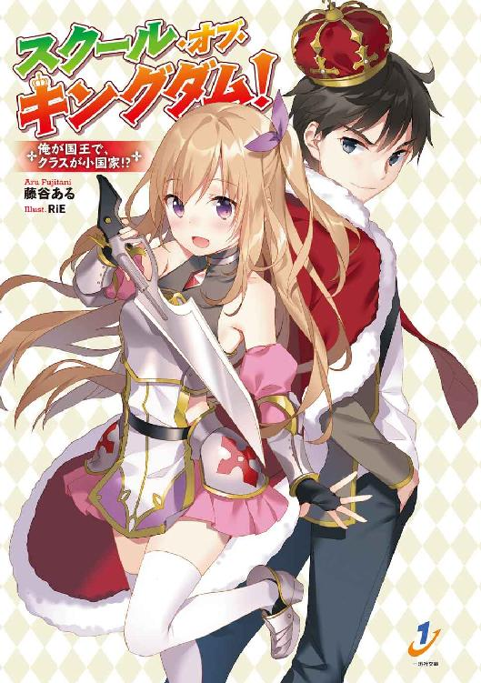
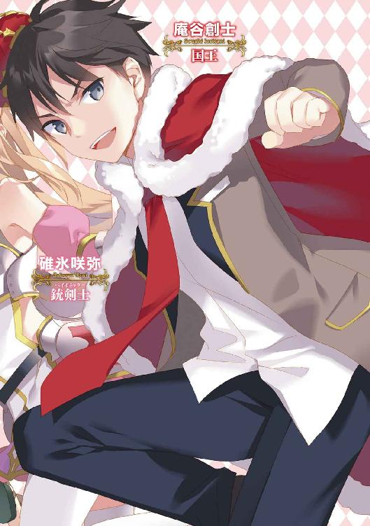
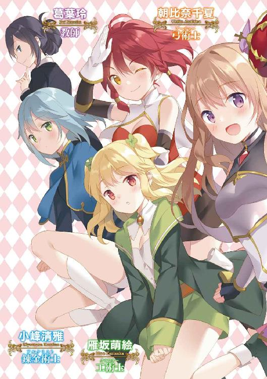
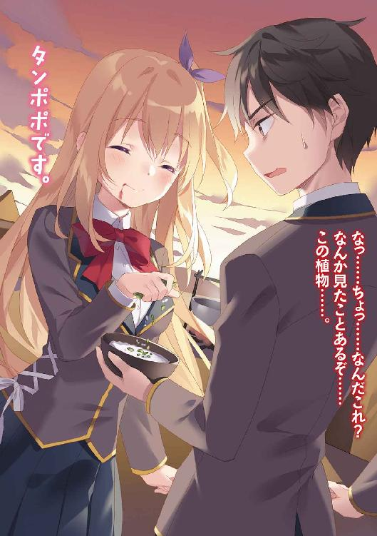
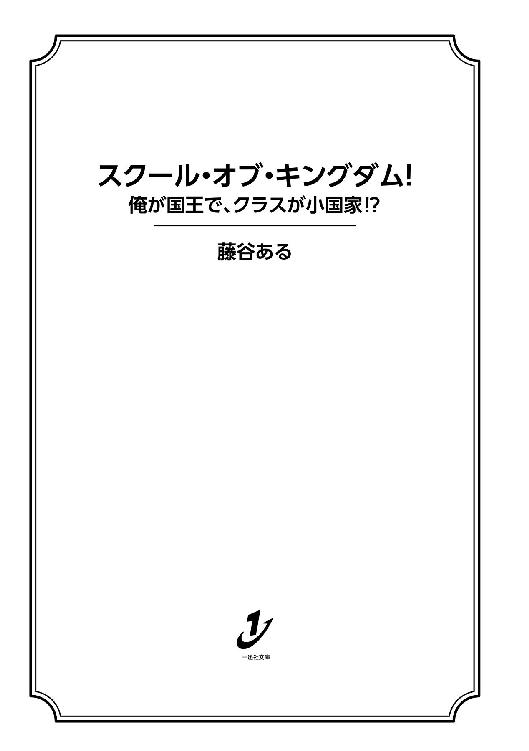
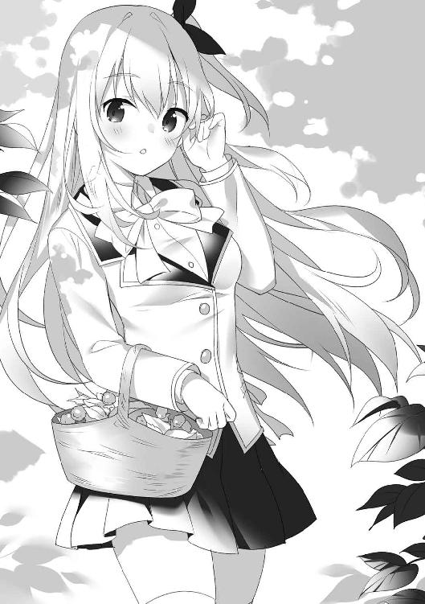
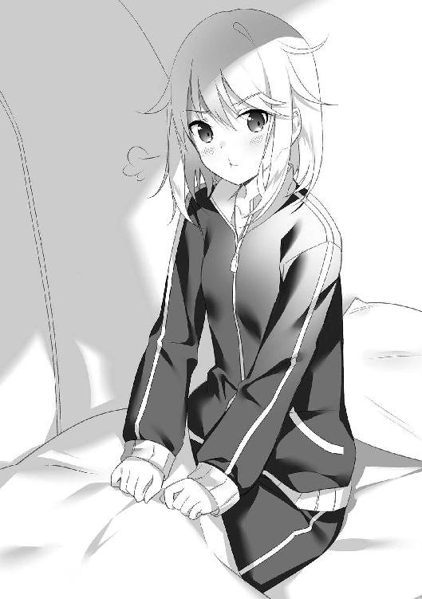
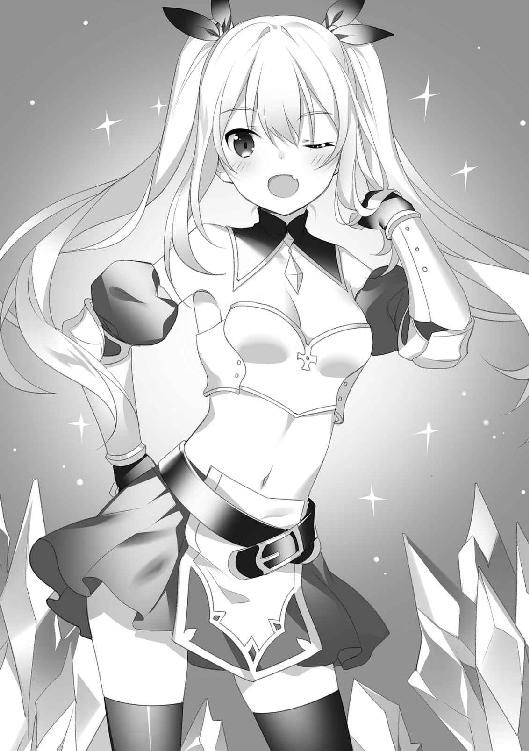
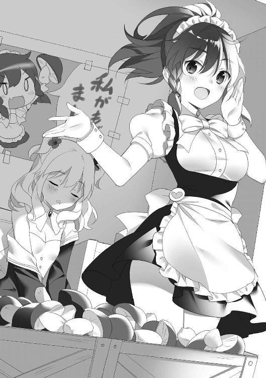
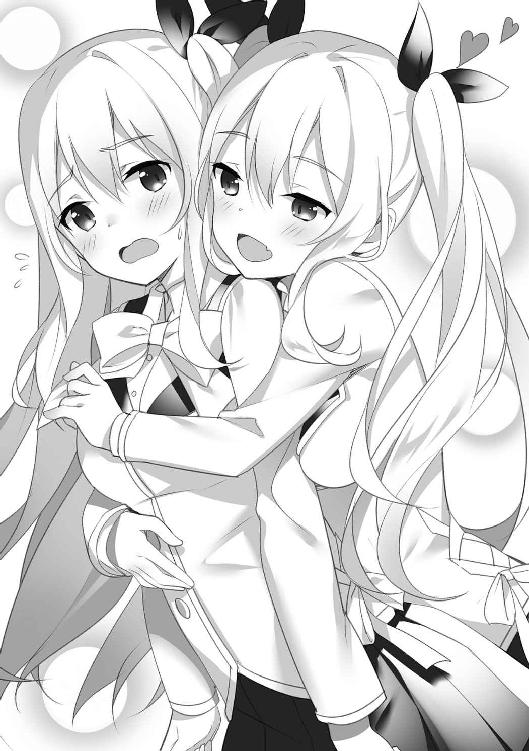

| スクール・オブ・キングダム! 俺が国王で、クラスが小国家!? (一迅社文庫) | |
| 藤谷 ある | |
| (2016) | |





挿画：ＲｉＥ
デザイン：ナカムラナナフシ
（ムシカゴグラフィクス）
『あなたの将来の職業は〝国王〟です』
そんなことを突然言われたら、どうするだろう？
俺だったら、そう言ってきた奴の顔を見て、とりあえず、
「何言ってんだ？ お前」
という目で見返した後、とにかく無視を決め込む。
間違っても、
「どこの国の国王ですか？」
なんて、聞き返したりしちゃいけない。
だって、そんなことを言ってくる奴は大抵、普通じゃないから。
高校に入学して、周囲の環境にも適度に慣れてきた頃合いだった。
今日も普通に授業を受け、帰宅するところだ。
いつもの通学路。
変わらない帰り道。
同様の風景。
普段通り、寄り道をすることなく家に辿り着く。
だが、今日だけは様子が少し違っていた。
自宅の門柱の傍に一人の女性が立っていたのだ。
どぎつい蛍光ピンクのＴシャツに同色のキャップ、白いミニスカートを履いている。
何かのキャンペーンでティッシュ配りをしているアルバイトって感じの態だ。
とりあえずは気にせず、俺は彼女の横を通りすぎ、家の敷地へ入ろうとした。
すると、
「どうぞ......」
という営業的な猫撫で声が耳に入る。
案の定、俺が行こうとする前にポケットティッシュが差し出されてきた。
俺はそいつに差し込まれている広告には全く興味はないし、そもそもそれが何のキャンペーンなのかも知らない。
だが、こういうのは一個くらい持ってると結構、便利なんだよな。
急に風邪とか引いて、鼻をかみたくなった時に、
「おっ、こんな所にティッシュが。助かったー」
って、なったりするから。
どうせタダだし。貰っておいて損はないだろう。
そう思って彼女からティッシュを受け取った。
そのまま、さして広くもない庭を通り、玄関前へと進む。
と、そこで違和感が。
あれ？ そういや、なんでこんな所でティッシュ配り？
駅前とか繁華街で配るならまだしも、こんな人通りの少ない住宅街で行っているなんて、どんなメリットがあるんだろうか？
しかも、俺んちの真ん前に立っているなんて......。
ふと、門の方へ振り返る。
そこにはまだ先程のティッシュ配りのお姉さんが立っていた。
キャップを目深に被り、目元はうかがえない。
「？」
背筋がぞわぞわっとした俺は急いで手元を見た。
ポケットティッシュにしてはサイズがやや大きいし、重いし、何より――
......硬い？
しっかりと裏表を確認してみたら、そいつはスマホっぽい端末だった。
「なんだ......これ？？」
気付かず受け取ってしまった俺も有り得ないが、
こんなものを配っている人間も有り得ない。
怖いので返してこよう。
そう決断して踵を返そうとした直後だった。
手の中のスマホ擬きに反応があったのだ。
ピロリ
と、通知音。
バックライトが点灯し、画面に文字が浮かび上がる。
『おめでとうございます！ あなたの将来の職業は〝国王〟です』
白地に黒の文字でデカデカとそう表示されていた。
「？」
ポカーンとなるより他はない。
もちろん、呆然としてしまったのはその文のせいもあるが、それ以上に俺の体にとんでもないことが起こったからだった。
体が手足の先から光の粒子になって消え始めていたのだ。
「うおぉぉおぉ!?」
これはなんて現象だ!?
落ち着け、落ち着け、落ち着け、冷静になって考えれば分かる。
この世の大抵のことには理由があるのだ。
だから、考えろ。
考えろ。
考え......。
「......って、そんな程度で説明出来る現象じゃねえ！」
思わず口に出したと同時に端末から音声が響く。
［エーテル反応を確認。学内ネットワークへ転送します］
女性の声でそう発せられた刹那、
霧散し始めていた俺の体は、急激にその崩壊を早めた。
「っ!?」
全てが消え失せたと頭で理解した瞬間、目の前が真っ白に塗り潰される。
自分の意識がどこかに向かって〝落ちている〟と感じ取れたのは、その二秒後だった。
すると、たちまち多くの情報が頭に流入してくる。
放散したと思っていた俺の体は五体満足だった。
そして、眼前がホワイトアウトしたと思っていたのは雲だった。
落下しながら雲を抜けると、真下に見えたのは広大な森林と山々が連なる地上。
だが、明らかにそこは俺が住んでいる地球の景色ではなかった。
だって上空にはドラゴンやワイバーンみたいなのが飛んでたし、遙か地平線の彼方には山よりも大きな巨大樹が立っていたのだから。
そうしている間にも地上はぐんぐんと迫り、人工的な建造物の姿が見えてくる。
六角形の城壁に囲まれた石造りの都市。
高い塔を持った城の姿もうかがえる。
さながら城塞都市といったところだろうか。
そんなわけで目の前に広がる光景は、ゲームなどでもお馴染みのファンタジーな世界だった。
そこで俺はようやく得心する。
「ああ、なるほど。これってあれか。俗に言う異世界召喚ってやつか？」
でも、ここに転送される際に、あのスマホみたいなのが、
《学内ネットワーク》
がなんだとか言ってたな......。
ってことは、流行のフルダイヴ型オンラインゲームとか、そんな感じか？
だが、仮想現実にしては、やけに現実感があるし、皮膚感覚も鋭敏な感じがする。
それに仮想現実なら、そもそも俺の体はどこにあるのかって話だ。
自分の目で見たことをそのまま受け入れるなら、人体を量子化してネットワーク内に取り込んでいるって線が一番可能性が高そうだが......そんなことって出来るのか？
色々と妄想が捗る。
そういや、スマホ擬きが《エーテル》反応とも言っていたな。
俺が知ってるエーテルって言ったら、有機化合物であるエーテルか、物理学上のエーテルくらいだ。
前者は金属の溶剤や燃料なんかに使われるジエチルエーテルとかのエーテルだし、この現象に直接は関係なさそうだ。
後者はかつて光を伝達する為に必要だと考えられていた空間に存在する媒質のこと。
光の媒質は大気であり、水であり、ガラスであり、そして真空では空間そのものだと考えられている。言わずもがな、ここは地球上であり、大気がある。
仮にエーテルという想定物質を媒質に加えたとしても、光の伝達速度に微細な差が出るだけだ。
それに今問題なのは、媒質ではなく、量子化の方だ。
なら他には......って考えたら、あれぐらいしかないな。
神学上のエーテル。
火、風、水、土の四大元素に続く、第五元素とも言われている物質だ。
宇宙を構成するとも言われているエーテルなら、こんな無茶苦茶な現象が起こってもおかしくない。エーテル元素が人体の量子化に影響を及ぼして――的な感じか？
しかし、そんな未知の元素が本当に存在するとしたら、それこそロールプレイングゲームどころか、この世がファンタジーの世界になってしまう......。
なんて考えていたら、我が身に起こっている異変に気付く。
落下が止まらないのだ。
このままじゃ地面に激突。
叩き付けられたトマトみたいになっちまう。
「はは......でもどうせ、ギリギリの所で光に包まれたりなんかして、ふんわりと浮いたりするんだろ。大丈夫、大丈夫......」
とか言ってる間に地上まで目測、約百メートル。
「で、でも......平気だろ......？ これゲームだし。多分だけど......」
だが止まらない。
冷や汗がブワッと全身から染み出るのを感じる。
「あ......あれ？」
不思議と恐怖よりも苦笑いが出た瞬間、
激しい衝撃音と共に、
俺の意識は再びホワイトアウトした。
おかしい......。
なんで俺はこんなことをしてるんだ？
そこは保健室だった。
俺はベッドに寝かされ、なぜだか腹筋運動をさせられていたのだ。
爪先の上にジャケットにタイトスカートという出で立ちのお姉さんが腰を下ろし、俺の足をしっかりと押さえている。
彼女は俺を見下ろしながら、
「あと三十回。出来なかったら少年を『街で見かけたイケメンランキング』に応募して公開処刑にするよ？」
と、脅迫染みたことを言ってくる。
「止めて下さいよ」
お願いしてみたものの......正直言って、俺、そこまで酷くないんじゃないかって思ってるんだけど......違うのか？ もちろんトップにはなれなくても、そこそこ......いや、普通じゃないか？
なんだか不安になってきたところで、彼女が気怠そうに言ってくる。
「ほら、休まない」
「くっ......」
俺は腹筋を繰り返しつつ彼女の様子を探った。
二十代中頃といったところだろうか？
長く艶やかな髪とモデルのような体型。
そして怜悧な顔立ち。
ややキツい感じがあるものの、美人であることは間違いない。
そんな彼女とベッドの上で二人きり。
その上、先程から彼女の温もりを足先に感じる。
心拍数も自ずと上がる。
思わず色香に流されそうだ。
――が。
そんな場合じゃなかった。
俺はなんでこんな所にいるのか？ それを確かめなければならないからだ。
さっきまでの俺は、ファンタジー世界の空を地上に向かって落下していたはずだ。
そのまま地面に激突したと思った瞬間、
気が付けば、この保健室にいた。
しかもここは俺が通っている学校の保健室ではない。
だからといって、これが夢や幻だなんていう感覚は全くしない。
分からないことだらけだ。
だが、逆に分かったこともある。
目の前の彼女の口元と、キャップの下で不気味に笑う、あのティッシュ配りのお姉さんの口元とが俺の中で一致したのだ。
だったら、全ての事情を彼女が知っているはずだ。
俺は上体を起こすと、一向に話す気配のない彼女に向かって質問する。
「そろそろ聞かせてくれませんか？」
「ん、何がだい？」
彼女は素知らぬふりをする。
「惚けても無駄ですよ。俺にあの端末を渡したの、あなたでしょう？」
すると彼女はクスリと笑ってみせた。
「はて？ 何のことかな？」
まだしらを切るつもりか......？
「何か俺に用があるからこそ、わざわざ接触してきたんですよね？ だったらさっさと話を進めたいのは、そちらじゃないんですか？」
「さあ、必ずしも用事があるとは限らないよ。ただ拉致した人間に腹筋をやらせ、その苦悶に満ちた表情を楽しむだけの屈折した性癖の持ち主ということもある」
「逆にそんな特殊な人間に出くわす方が難しいですけど。というか、今の発言で俺を拉致したことを認めたようなもんじゃないですか」
「仮にそうだとしても、少年に端末を渡したという人間と私が同一人物だとは限らないよね？」
「同一かどうかが問題なわけじゃないんですよ。何食わぬ顔で端末とか拉致とか口にしていることの方が問題なんですから」
彼女は僅かに瞠目すると、軽く笑った。
「ふっ、そうだ。確かにここに少年を連れてきたのは、この私だよ。さすがだね、その洞察力。伊達に〝職業判定〟を受けた人間じゃないってことか」
「職業判定？ もしかしてあの国王とかいう......」
俺が受け取った端末の画面にそんなものが表示されていたことを思い起こす。
「そう、それだよ、庵谷創士。少年は将来、国王になる人間だ」
「......」
黙り込んだ俺に対し、彼女は非常に残念そうな顔を見せた。
「少年......今、私のことを変人を見るような目で見たね？」
「いや、まったく」
「嘘を吐くな、嘘を」
「じゃあ正直言うと、変な目で見てました」
「......」
彼女は眉を顰めた。
「......まあいい。それと、私のことはきちんと敬うように。これでも私は教師なのだからね」
「教師!?」
「意外かい？」
「いえ、そんなことは」
そいつは意外だった。
「それで、ここは一体、どこなんですか？」
「それについては腹筋をしながら話そうじゃないか」
「えっ......まだやるんですか？ ってか、これに何の意味が？」
「いいからやる。四の五の言わずにやる。話はそれからだよ」
「......」
仕方なく、俺は腹筋を再開する。
でも、もう結構限界に近い感じで苦しいんだけど......。
彼女は、俺が運動を再開すると続きを話し始める。
「さて、まず私の名前だが、葛葉玲という。そしてここは――
《国立帝進学園》という学校だ」
「帝進？ 聞いたことがないんですが......」
「ふむ、当然だろうね。この学校の場所は国家的に秘匿されているから。グーグルマップにも載っていないよ」
「え......」
そんな秘匿区域が本当にこの日本にあるのか？
いや、もしかしたら日本であるとも限らないぞ......。
「帝進は将来、各分野の重要ポストに就き、国益をもたらすであろう優秀な人材を選出し、育成、能力を開花させる為の機関。同時に有能な人間の海外流出を未然に防ぐ役割も兼ねている為、こうして世間から隔離された場所に建っているというわけ。ちなみに各業界の歴史に名を残している著名人は全て、帝進の出身さ」
「......」
その学校の先生がこんなに若いことにも驚きだが......。
「それで、その帝進に今、連れてこられているということは、俺もその優秀な人材とやらに選ばれたってことですか？」
「理解が早くて助かるよ。その通りさ」
「いやいやないですって。俺は極普通の高校生ですから。ましてや国益をもたらすなんて」
「そうだろうね。なにせ国益どころか、国を治める頂点に立つのだから」
「また、国王の話ですか。そんなの有り得ないでしょう？ この世界に存在している君主制の国なんて限られていますし、そのほとんどが権力を持たない立憲君主国じゃないですか。しかも大体、世襲制ですよね」
「おやおや、随分と呑気なようだね。国王が世襲だったのは平和だった時代のことだけれど？」
「今も充分、世界は平和ですよ。小さな紛争は絶えませんけどね。というか、先生はいつの時代のこと言ってるんですか？」
「無論、今の時代だけれど？」
「先生は先程、『国を治める』と言いましたよね？ 治めるということは、権力を持って政治を行うということになる。しかも、国王としてらしいですが。それって俺に、国が引っ繰り返るほどの内乱でもやらせるってことですか？ もしそうなら、国家転覆を目論んでいる危険人物がいると通報させて頂きますが」
僅かな沈黙がよぎる。
「それはそうと、腹筋が疎かになっているぞ」
「っえ!? くっ......」
急にそう言われて、俺は反射的に腹筋を再開してしまった。
なんだかちょっと悔しい。
ああっ、こんな時に《倒れるだけで腹筋ワンダー○ア》があれば楽なのに！
というか彼女、今、思いっ切り俺の質問を無視しただろ。
都合が悪いのか、何なのか......。
もし本当に彼女が、もしくは学園そのものが不穏な計画を企てようとしてるなら、本気でヤバイとこだぞ、ここ。
まあ、杞憂だろうと思うけどさ。
「ああ、それにしても疲れてしまったよ」
葛葉先生が唐突にそう言った。
首を回し肩を解すような動作をしている。
絶賛腹筋中の俺の方が疲れてると思うんだけどな......。
「そもそも、少年がきちんとテストを受けてくれてさえいれば、こんな面倒な手を使って学園まで連れてこなくても済んだのだよ」
「テスト？」
俺が尋ねると、葛葉先生は目を細める。
「中学で受験シーズンに入る前に《優良人材調査》と呼ばれるものが行われているのを知っているだろう？」
「ああ、あれですか」
すぐに理解したものの――
実は俺、その優良人材調査とやらを受け損なっていた。
丁度その時期、ちょっとした事故にあってしまい、しばらく入院生活を送る羽目になってしまったのだ。
しかもその事故は俺の人生に少しばかりの影響を与えた。
たとえるならば、世界と自分との間に薄い水面のような膜が張っていて、その膜までの距離が事故を境により遠くになってしまったような感覚だ。
何を言っているか分からないと思うが、とにかく自分と世界の関係が変化したのだ。
ついでに言うと、そのおかげで高校デビューにも失敗した。
なんとか一時退院を許可してもらうことで高校受験には間に合ったのだが、二ヶ月遅れでの入学。
結局、その優良人材調査とやらは受けずじまいになっていた。
つい最近になって、今の学校で一人別室で受けさせられたのだが......。
「でもあれって、ただのアンケート調査じゃなかったんですか？ 内容もテストって感じじゃなかったように思うんですが」
「一見すると何の変哲もないただのアンケートに見えるが、あの中には優良な人材を判定する為の巧妙な仕掛けが施されているのだ。その結果で帝進への入学が決まる」
「ほう」
「そして入学資格を得た者は我々職員によって身柄を確保され、この学園へ連れてこられる」
「ちょっ!? それ、ほぼ誘拐じゃないですか」
「人聞きの悪い。これは国家的事業だからね。生徒に人権などないのだよ」
「もっと酷いこと言っちゃったよ、この人」
「ちなみに、この学園から脱走しようものなら処分されるからそのつもりで」
「処分て......どんな処分なのか凄く気になるんですが......」
「まあ、学園の周りは深い森だから。下手に敷地外に出れば人食い熊にやられてしまうだろうけどね」
「熊っ!?」
「これも優秀な人材を外部に流出させない為だよ。それにこの学園の存在も知られる訳にはいかないのでね」
「でも、それじゃ困るんじゃないですか？」
「何がだい？」
「優秀な人材とやらが実際、熊に食べられてしまっては、困るのは学園側ではないですかと言ってるんですよ」
「ははっ、そこは大丈夫」
葛葉先生は笑って受け流した。
「優秀な人材だからこそ、リスクと損得をわきまえている。そんな愚かなことはしないというわけさ」
「......」
今、彼女が言った諸々の制約はこの俺にも当然適用されるのだろうか......。
高校生活二ヶ月目にして転校か......。
色々納得いかないことばかりだが......大体の事情と顛末は分かった。
しかし、まだ理解出来ない大きな出来事が一つある。
一瞬だけ垣間見た、あのファンタジー世界は一体なんだったんだ？
そのことも彼女に聞いておいた方がいいだろう。
そう思ったのだが......。
「ぐおぉぉ......」
そろそろ俺の腹筋が限界を超えようとしていた。
悶絶しながら身をよじる。
「もう駄目だ......くっ......これ以上は無理っ！」
そもそも、こんなことをやらされなければいけない理由は何もない。
無茶をしてもなんにもならない。
もうこの辺で止めてもいいだろう。
そう自主的に判断して、筋肉に入った力を弛めようとした時だった。
葛葉先生がやや苛立った顔をして、こう言ってくる。
「まさか、もう限界かい？ 最低でも後、三十回は頑張ってもらわないと困るんだけどな」
「はあ!? さっきから回数が減ってないんですけど！」
これって終わりがないんじゃないか？ と思ったら、一気にやる気が減退して――
「がはぁ......」
力尽きた。
ベッドが大きく揺れる。
「おやおや、本当にもう終わり？」
彼女はげんなりとした様子で溜息を吐いた。
「もともと俺は体育会系じゃないんですから、むしろ頑張った方ですよ」
俺は疲労が溜まり、ジーンとする腹を手でさすっていた。
すると葛葉先生は、どこからかタブレット端末を取り出し、何やら画面上でチェックを始めていた。
それを見ていた俺は、
「あれ？ 実は今の腹筋、何か意味があったんですか？」
「どうして、そう思う？」
「だって、このタイミングでタブレットを弄り始めるなんて、おかしいじゃないですか」
「ふん」
彼女は鼻を鳴らした。
そして、ほくそ笑む。
「これは新入生向けのテストだよ」
「テスト？ 体力テストか何かですか？」
そこで彼女は手元のタブレットに視線を落とす。
「今やってもらったのは、少年の〝倫理観の高さ〟を測るテストだ」
「倫理観......？ って、どこが!?」
「表向きで判断してはいけない。あれは私に接触した君が、どのような反応を起こすのか、それを見ていたのだ。端から腹筋の回数なんてどうでもいいのだよ」
「ええー......」
「ちなみに少年の採点結果はＡＢＣの三段階評価で〝Ｃ〟」
「ちょっと!? な、なんでそうなるんですか！」
「心拍数が異常に上昇していたからね。よからぬことを考えていた証拠ではないかい？」
彼女は腕時計型の心拍計を人差し指の先でクルクルと回して見せた。
「い、いつの間に!?」
どうやら足の上に乗られた際、密かに装着を許してしまったらしい。
「美女の温もりに触れて、平常心が保てていない点で減点さ」
「う......」
思い当たる節があって言い返せなかった。
ていうか、この人、自分で美女とか言っちゃったよ！
それにしても......最低評価はあんまりだ。
俺が微妙に落ち込んでいると、彼女はさっさとベッドから立ち上がった。
「じゃあ、次のテストに移る」
「えっ、まだ何かやるんですか？」
「それではまず、ベッドから降りて、後ろを向いてくれ」
「......」
まるで人の言葉を聞かず、とっとと勝手に進行し始めていた。
とにかく、これに付き合わないことには何も始まりそうにない。
なので仕方がなく、言う通りにする。
俺は葛葉先生に背中を向けるようにして気を付けの姿勢を取った。
「そうしたらまず、右手を左肩に置く」
「はい、置きましたよ」
「次に左手を右膝に」
「左手を......右膝......っと。出来ました」
「で、次は左手と右膝の間に出来た輪の中に左足を通す」
「......ここに？ よ......っと......こ、こうですか？」
「ああ、そうだ。おっと、言い忘れたが手は絶対に離しては駄目だ」
「え......」
素直に従ってきたが、ちょっと苦しい体勢になってきたぞ......。
「さあ、次。そこから上体を起こす」
「お、起こす......ぐぐ......」
「そう、その体勢で私の方へ百八十度、振り向く」
「ぐぬぬぬぬ............って、出来るかぁぁっ!!」
色んな筋がねじ切れそうになって、堪らず床に転がった。
「なんだい、出来ないのかい？」
葛葉先生は信じられないといったような表情で俺を見下ろしてきた。
「人体の構造上、誰も出来ないでしょ？ こんなの。てゆうか、これは何のテストなんですか！」
憤慨しながら言うと、彼女はタブレットの画面に指先を当てる。
「論理的思考......Ｃっと」
「はあ!? 今のどこにそんな思考が必要だったと!?」
「論理的思考を持っていれば、実際やるまでもなく無理だと分かるはずだよ」
「んな、無茶な......」
こんなアホなテストで最低評価を受けると悔しくなってくる。
まだ他にも、こんなテストを受けなきゃならないんだろうか？
そんなふうにげんなりしていたら、葛葉先生は早々にタブレットの画面を切り、俺の方に向き直った。
「よし、これで〝クラス振り分けテスト〟は終了」
「......え？」
何か不穏な言葉を聞いたような気がする。
「今、なんて言いました？」
「クラス振り分けテストって言ったのだけど」
「......」
もう、俺は何も驚かないぞ！
「で、その結果、俺のクラスはどこなんですか？」
「Ｆクラスに編入してもらう」
「はあ、そうですか......」
素直に返事をしてみたものの、気になることがある。
俺は先程、倫理観及び論理的思考のテストに於いて、不本意にも三段階評価で最低のＣを取ってしまった。
その結果を踏まえてのＦクラスだとしたら、不穏な感じがする。
「ちなみに一年生は全部で何クラスあるんです？」
「六クラスあるぞ」
ってことは......アルファベット順で一番最後じゃないか。
普通に考えたらテストの結果がＡ評価ならＡクラスまたはＢクラス、Ｂ評価ならＣクラスまたはＤクラス、Ｃ評価ならＥクラスまたはＦクラスだ。
「わざわざ振り分けテストを行ったということは、クラスごとに何か差違があるってことですよね？」
「察しがいいね。その通りだ。Ｆクラスは一学年の中でも、入学当初からぶっちぎりの最底辺を走り続けている成績不良クラスさ」
「なっ......!?」
今のおかしなテストで、そんなクラスに振り分けられてしまうなんて理不尽過ぎる！
「マジですか......？」
「ああ、マジだよ」
「本当はクラス振り分けテストってのは、ただの口実で、実は俺をＦクラスに入れたいだけなんじゃないですか？」
「どうしてそう思う」
「そりゃもう......さっきのテストに何の意味も感じなかったからですよ」
「あっ、忘れていた。これを渡しておこう」
葛葉先生は何事もなかったかのように、ビニールに包まれた帝進の制服を俺に差し出してきた。
「スルーか！」
都合が悪くなると無視する癖があるだろ、この人。
「それと《ＭＥＯＤ》はきちんと持っているだろうね？」
「ＭＥＯＤ？」
聞いたことのない名前だが。思い当たるような物といえばアレくらいしか思い付かない。
俺は一通り、自分の衣服を確認する。
すると腰ポケットの辺りに異物感が。
取り出すとそれは、あのスマホ型端末だった。
「もしかして、こいつのことですか？」
「そう、それ。正式名称《Mobile Ether Operation Devices》、略してＭＥＯＤ。この学園で生き残る為に必要な端末だ。絶対に壊さないよう注意して欲しい。本人にしか使用出来ないようになっている特別なものだからね」
「生き残る......って、これで？」
俺はまじまじと端末を見返す。
だが、いくら見たところでその重要性は伝わってこない。
「ちなみに少年の携帯はこちらで処分しておいた」
「処分て!?」
いつも携帯を入れている胸ポケットを探ってみたが、当然そこには何も入っていなかった。
「外部との連絡を取る際は必ず学生課を通し、職員監察の下で行うこと。これも機密保持の為さ」
「......」
「他にまだ分からないことがあったら、端末の中に《校則》と《学園生活マニュアル》が内蔵されているから、それを読むといい」
葛葉先生はそう言い残すと保健室から出ていこうとしていた。
「読む......って、ちょっ待っ......」
「では私はこれで。良い学園生活を」
俺の制止も虚しく、ピシャンと閉められる引き戸。
結局、肝心な所は聞けずじまいだった。
しゃーない......。
とりあえず、こいつでも読み込んでおくか。
そう思い立った俺はＭＥＯＤで早速、学園生活マニュアルを立ち上げた。
俺は繁みの中を歩いていた。
周囲は草木しか見えず、かなり鬱蒼としている。
なぜ、こんな場所に来ているのかというと、Ｆクラスの教室と寮がこの辺りにあるらしいのだ。
保健室のあった本校舎からだいぶ離れてしまったし、一歩進む度に本当にこっちで合っているのだろうかと不安になる草深さだ。
しかし、ＭＥＯＤ上に表示されている学内マップには、その方向で間違いないことが記されていた。
端末の情報を信じて進むしかないのだ。
そんなふうに再度、自分を奮い立たせた時だった。
ガサガサッ
擦れ合う葉の音が耳に入った。
近くだ。
枝葉が激しく揺れ、移動している気配がする。
ま、まさか......この感じ......。
葛葉先生が言っていた人食い熊か!?
言われた通り敷地の外には出ていないはずだが、運悪くこんな所で遭遇してしまったのだろうか？
にしても、どうする？
こちらの存在は、まだ相手には発見されていないはずだ。
なら、まだ安全に退却出来る。
気配を悟られないよう後退するしかない。
そう決めて、実行に移そうとした時、
前方の行く手、数メートル先の枝葉が激しく揺れ――
――ぴょん
と、一羽のウサギが飛び出した。
その真ん丸くて、愛らしい瞳と目が合う。
が、
正確にはウサギではなく、
ウサギのような可愛らしさを持つ、
女の子だった。
触れれば折れてしまいそうなくらい華奢で線の細い体。
腰までの長い髪。
薄弱な白い肌などは、まさに白ウサギのようだ。
帝進の制服を身に付けていた彼女は、俺の姿を認めた直後、きょとんとしていたが、すぐに柔らかな笑顔を向けてくる。
「あ......もしかして、創士さんですか？」
「えっ......ああ、そうだけど。君は？」
いきなり初対面の名前もしらない子から下の名前で呼ばれて戸惑った。
俺は彼女の制服の襟元に目をやる
そこには俺の襟にあるのと同じ、臙脂色の校章が付いているのが見えた。
さっきまでＭＥＯＤで学園生活マニュアルを読んでいたから知っているが、臙脂色は一年生の学年色だ。
「申し遅れました。私、碓氷咲弥と申します。咲弥と呼んで下さいね」
「......」
「？」
「ああ......う......うん？」
「ん？」
話の続きを待ってみたが、彼女はぼんやりとした表情で首を傾げただけだ。
俺もどう切り返したらいいのか困ってしまった。
と、そこでようやく彼女は、
「あっ......」
と言って手の平の上で軽く拳を叩いた。
何か思い出したようだ。
「そうでした、そうでした。はい、これ。食べます？」
彼女は持っていた籐編みの手提げ籠から赤い実をいくつか掴んで、俺に渡してきた。
「な、何これ？」
「この辺りに自生しているシロバナノヘビイチゴです。甘くて美味しいですよ」
「へー......」
俺は受け取ったヘビイチゴを手の上でぼーっと見つめる。
「って、そうじゃなくてっ」

「へっ？」
彼女は俺が急に大きい声を出したもんだから、ちょっとビクッとなっていた。
すまんな。
「いやさ、俺達今、初めてここで出会ったわけだろ？ そうしたら話の流れ的にさ......」
「ああ、ですね」
「分かってくれたか」
「じゃあサービスで、あと三個あげますね」
手の上にヘビイチゴが追加された。
「違う違うっ」
「はい？？ もっと欲しいんですか？ 食いしん坊さんですね♪」
「......」
駄目だ......彼女の変なペースに飲み込まれてしまいそうだ。
ここは事細かに説明するしかないだろう。
「あのさ、俺は初対面の子にいきなり下の名前で呼ばれたんだ。なんで知ってるんだろうって思うのが普通だろ？ なのにもかかわらず、君は自己紹介をしたままヘビイチゴを渡してきて......今に至るというわけだ」
「......！」
そこでようやく思い出したのか、彼女はハッとなった後、色白の頬をピンク色に染めた。
「す、すみません......いつもこうなんです、私......。自分でも嫌になってしまうんですよ......。 っと、そうでした。私、創士さんのことをお待ちしていたんです。とは言っても、創士さんのことを知ったのはつい先程なんですけどね。葛葉先生からＦクラスに転入生がやってくるので、よろしく頼むと言われていたんですよ」
「なるほど。ということは君も同じＦクラスか」
「ええ、そうです。あ、それと、先程も言いましたが、私のことは咲弥と呼んで下さいね」
「ん......いきなり女の子を呼び捨てとか、それはちょっと抵抗があるかな......」
「ですが、この学校では連帯感を強めたり、クラス内で横の繋がりを大切にしているので、私に限らず、みんな下の名前で呼ぶ決まりになっているんですよ」
「そうなのか......。でも、さっきＭＥＯＤで校則を読んでみたけど、そんな決まり書いてなかったけどな......」
「それは厳密には校則ではなく、伝統に近いものなので書いてないんですよ。だから強制力はないですが、当たり前のようになっているので決まりとさして変わらない感じなのです」
郷に入っては郷に従えってやつか......。
「じゃ、じゃあ......そうさせてもらうよ......さ、咲弥」
不自然かつ、ぎこちない感じで試しに彼女の名前を呼んでみると、逆に咲弥は穏やかな笑みで答えてくれる。
「はい、創士さん」
その笑顔が天使すぎて破壊力が物凄かった。
「それにしても、創士さんは職業判定を受けているんですよね？ 国王って聞いてますよ」
「な......なんかそんなことを言われたんだが、今ひとつピンと来ないんだよなー」
「えーそうですか？ それって、なかなかスゴいことなんですよ？ 普通は将来の職業まで判定されませんから」
「そうなのか？」
「いいですか？ 見てて下さい」
そう言って彼女は自分のＭＥＯＤを取り出し、画面上のアイコンをタップして《職業検査アプリ》を立ち上げる。
俺もさっき弄っていて知ったが、そのアプリを起動すると所持者の将来の職業を教えてくれるらしいのだ。
しばらくすると、測定が終わったのか端末から音声が流れ始める。
『おめでとうございます！ あなたは国益をもたらす人材です』
なんか俺の時と通知内容が違っていた。
しかも、まだ続きがあるようだ。
『あなたの仮の職業は銃剣士です』
「ね？」
「ね？ ......って。なんだか聞いたこともない職業だぞ？ なんていうか、ファンタジーＲＰＧとか、モンスターハンティングアクションとかそういったゲームに出てきそうだな......」
と、そこまで言ったところで俺の脳裏に一瞬、あのファンタジー世界の風景がよぎる。
「あれ？ 良く分かりましたね。この職業は《アースガルド》でのものなんですよ」
「アースガルド......って、もしかして六角形の城壁で囲まれた街があって、空にドラゴンとか飛んでたりする？」
「えっ？ どうして知ってるんですか？ 転入したばかりなのに、もう行ってきたんですか？」
「いや......なんか偶然というか、無理矢理というか......ここに来る際にチラッとだけな」
「さすが、職業判定を受けている人は違いますね。私なんか入学初日はなかなか転送できなくて大変だったんですよ」
「へー......」
なんとなく同調してみた。
そういえば彼女、俺がゲームに出てきそうな職業だと言ったら、特に否定することもなく、「良く分かりましたね」と答えた。
そして今は〝転送〟という言葉を口にしていた。
この二つのことから、俺が見たあのファンタジー世界は仮想現実的なゲーム世界なのでは？ と、なんとなく予測が付く。
そしてこの学園の生徒は、その世界に良く出入りしているのではないかということも。
ただ目が覚めたら一瞬で帝進にいたという事実については、まだ良く分からないが。
目の前の彼女に聞けば色々分かりそうだが、出会ったばかりで根掘り葉掘り聞くのはどうかと思うので、少しずつ教えてもらうとしよう。
「というわけで、将来の職業が確定している創士さんと違って、普通はこんなふうにアースガルド内の職業しか分からないものなんですよ」
咲弥はそんなふうに言いながら、俺のことを感心するような目で見てきていた。
「確定って言ったって......俺の方こそゲームみたいな職業だけどな」
「でも、帝進学園の創設以来、職業判定を受けた生徒というのは数人しかいないって話ですから、とても誇れることなんですよ？」
「そ......そうかな？」
そこまで言われると、悪い気はしない。
「こほっ」
咲弥が一つ咳をした。
「風邪か？」
「いえ、ちょっと喉の調子が悪いだけです。なんともないですよ」
「......ならいいんだけど」
これは出会った時から思っていたことだが、彼女、あんまり顔色が良くない。
色白ってこともあるが、それを抜きにしても〝薄幸の美少女〟的な雰囲気があるのだ。
ゲームやアニメの病弱ヒロインだったら吐血とかしちゃってもおかしくない感じ、と言えば分かり易いだろう。
「そういえば俺、Ｆクラスの教室を探している途中だったんだが、どこにあるんだ？」
「それなら私が案内しますよ。そもそも、そのつもりで待ってたんですから」
「え、そうか......。じゃあ、お願いするよ」
「はい、任せて下さい。では、こちらでぶぉほっげぇっほっおほぉぉっ......ぶふぅぅぅっ！」
鮮烈な赤の飛沫が宙を舞っていた。
咲弥は急に激しく咳き込んだかと思ったら、口から結構な量の赤いモノを吹き出してうずくまってしまったのだ。
「どっ、どどどうした!? 大丈夫か？？」
「あー全然大丈夫です。ちょっと咳き込んだだけですから」
彼女はすぐに立ち上がり、ニコニコとした笑顔を見せてくる。
「いや、全く大丈夫なように見えないぞ......。それに俺の見間違いでなければ、その口元から垂れている赤いものって......血じゃないか？」
穏やかに笑う薄い唇の端から一筋の赤い液体が滴っていた。
まるで食事後の吸血鬼みたいな様相だ。
「え？」
咲弥は平然とした様子で口元を拭うと、指先に付いた赤い物を見て「うふふ」と笑う。
「ああ、これはさっき食べたヘビイチゴですよ。やだなーもう、血だなんて。驚かせないで下さいよ」
「いやいや、見るからに血だって！」
「じゃあ試しに舐めてみます？」
そう言って彼女は、自分の口元からヘビイチゴの果汁だと主張する赤い液体を再度指で拭って、俺の口元に差し出してきた。
「そ、それはちょっと......」
「遠慮せずにどうぞ」
「別に遠慮してるわけじゃないぞ？」
目の前に差し出された彼女の手からは、ほのかだが甘い香りがした。
ヘビイチゴだと言われればそんなような気もしなくもない香りだけど、これだけじゃ断定は出来ない。
ってか、咳き込むほどのヘビイチゴって......どんだけ食ってんだよ！
「さあペロッといっちゃって下さい」
「い、いや......分かった！ もう認めるから！」
「そうですか」
彼女はなぜだか不満そうにしていた。
「それにしても、少し食べすぎてしまいましたね」
彼女の持っている籠の中には結構な量のヘビイチゴが入っていた。
少しどころの話ではない。
「そんなに採ってどうするんだ？」
「え？ だってヘビイチゴっていったら主食ですから」
「日本人の主食は米だろ、米」
「私、お米アレルギーなんで、ダメなんです」
「そ、それなら仕方がないけど......。でも、ヘビイチゴばかりそんなに食べても......。それに俺、前にキャンプかどこかに行った時、そいつを野山で見つけて、食えるって言うから食べたことがあるけれど、正直......そんな旨いもんでもないだろ？ いや、むしろ不味かったぞ」
すると、今までずっとにこやかだった彼女の表情が、初めて不機嫌なものになった。
「それはヘビイチゴさんに失礼ですよ？」
「ヘビイチゴさん!?」
いきなりの〝さん〟付けに困惑する。
「確かにその名前には〝ヘビすらも食べないくらい不味いイチゴ〟という意味があります。ですが、それは黄色い花をつけるヘビイチゴとヤブヘビイチゴに限ってのことです。私が今、採ってきた白い花を付けるシロバナノヘビイチゴとエゾヘビイチゴはとーっても甘くて美味しいんですから」
「白い花のヘビイチゴが旨いってことは分かったが、それだと結局、黄色い花のヘビイチゴは否定していることになるんじゃないか？」
「......!?」
彼女は今更ながらに自分の言ったことに気が付いたようで、ハッとなって固まっていた。
「この辺りでは他にも色々な山菜が手に入るんですよ」
「無理矢理、話題転換した!?」
「イヌビユ、ユキノシタ、スカシタゴボウ、これらは天ぷらが美味しいです。カタバミはお浸し、イヌタデとイヌガラシは汁物なんかがいいですね」
「全部、山菜というよりは......雑草の部類じゃないか？」
「メジャーなところでは野生のミツバなんかも、この辺りには生えていますよ。ほら、これなんかそうです」
そう言って彼女は傍にあった草を引っこ抜くと、シャクシャクとウサギのように食べ始めた。
「野生のものはスーパーで売っているものよりも香りが強く、これぞ本物っていう味がしますよ。う～ん、いい匂い」
彼女があんまり旨そうな顔をしていたので、俺も自分の周囲を探してみる。
すると彼女が手にしているものと同じ形の葉っぱを見つけた。
「これか」
「ああ、それは見た目がとても良く似ていますが、キツネノボタンという名前の植物で大変猛毒ですので絶対に食べないで下さい」
「っぺっぺっぺぺぺっ!? もっと早く言ってくれよ！ ちょっと食べちまったじゃないか......」
まだ舌がピリピリとするが気のせいか？
俺は口の中を気にしながら、彼女に尋ねる。
「......なんでまた、そんなに野草に詳しいんだ？」
「元々興味があったということもありますが、この学校にいると自然とそうなってしまいますよね」
「ほう」
それは周辺に自然がたっぷりあるからなのか、それとも......。
なんて考えていたら、俺を誘うように彼女のスカートが翻った。
「余談がすぎましたが、そろそろ行きますか？」
「ああ、お願いする」
「では、こっちです。はぐれないように注意して下さいね」
「お......おう」
はぐれるって......どんな場所にあるんだよ！
不安に思いながらも、彼女の先導で繁みの中を進むことに。
しかしながら彼女の足取りは重い。
体はフラフラとしているし、足下も覚束ない様子で、背後から付いていっている身としては、とても不安だ。
歩き始めてまだ一分も経たないうちにこれだから、気になって仕方がない。
「ちょっと休憩します」
「早っ！」
咲弥は、
「よっこいしょ」
と、お婆ちゃんみたいな台詞を吐いて倒木の幹に腰掛ける。
だがここで、「早く行こう」なんて追い立てたり、急かしたりすることもできない。
だって彼女、見るからに繊弱で、本当に体力がなさそうなのだ。
酷すぎて言えない。
手持ち無沙汰な俺は、周囲に広がる密生した木々を見渡した。
「それにしても、とんでもなく深い森だな。これなら熊の一匹や二匹、いてもおかしくなさそうだ」
「あ、葛葉先生から聞きました？ 人食い熊の噂」
座っていた咲弥が見上げてきた。
「ああ、でも噂なのか。じゃあ、やっぱり実際にはいないってことか」
「いるかもしれないし、いないかもしれない。実際、私達にも分からないんですよ。二年生や三年生に聞いてみても『やめておけ』という答えしか返ってきませんし」
「というと？」
「入学してから一ヶ月程経ったくらいですかね。Ｆクラスの生徒数名が学園からの脱走計画を企てたことがあるんです。でも、いきなり敷地外に出て、そのまま脱走するのはリスクが高いですから、その前に調査を行ったんです」
「環境把握は目的の達成率を高めるからな」
「ええ、そうです。で、実際、熊が生息しているのかどうかを調査しつつ、この学園の周囲にどれぐらいの面積の森が広がっているのかを毎日少しずつ距離を伸ばしながら把握していったわけです。するとどうでしょう。一向に学園と外界とを隔てる境が見つからないのです。学園の敷地にはフェンスが張り巡らされているという話でしたが、それすらも見つけられないほど広大な森が広がっているということが分かっただけでした」
「人食い熊に遭遇する以前に、遭難してしまう可能性の方が高いってことか......」
「です」
益々、この学園がどこに建ってるのか分からなくなってきたぞ......。
「さて、そろそろ行きますか」
その言葉を聞くのは二度目のような気がするが、突っ込むのは止めておく。
彼女は、これもまた二度目の「よっこいしょ」を呟いて立ち上がる。
そんな感じで彼女と二人、とぼとぼと歩いていくと、ようやく前方に開けた場所が見えてくる。
「さあ着きましたよ。ここがＦクラスの教室〝兼〟寮です」
咲弥がゆっくりとした口調でそう言った。
兼？？
なんだか不安になるような言葉が聞こえた気がするが、とりあえず俺は彼女の横に並んで前を見渡した。
そこにはサッカーグラウンド程の平地が広がっていた。
平地のほぼ中央には三角屋根のテントが四つ張られていて、その合間からは、焚き火と思しき灰色の煙が空に向かって立ち上っている。
まさにキャンプ場の風景だった。
本校舎からだいぶ離れ、森の中を歩いてきた時点で不穏な雰囲気は感じていたが、まさか校舎と呼べる建物すらないとは予想外だった。
「やっぱり、驚きました？」
「まあ普通に」
「あんまり驚いているように見えませんよ？」
「そうか？」
咲弥は納得いかなそうな顔で俺を見ていた。
「これって、他のクラスもこんな感じなのか？」
「そんなわけないじゃないですか。Ｅクラスより上は、みんな寮も教室も本校舎の方ですよ」
「そっか。ちなみに順位ごとにどれぐらいの格差があるんだ？」
「え？」
彼女がきょとんとしてしまったので、俺は自分のＭＥＯＤを取り出し、校章のアイコンをタップする。
すると画面上にクラス別の順位表が表示された。
「こんな感じで今の順位は、単純にアルファベット順のままでＦクラスが最下位の六位になっているだろ。一位から五位までは、どんな学園生活を送っているのかそれを知りたかったんだ」
咲弥は「ああ」と小さく声を漏らした。
「えーと、Ａクラスの寮は高級ホテルのスイートルーム並みの部屋で、広さは４ＤＫ。家具やエアコンなどの各種家電、無料のルームサービスも付いてます。あ、もちろん一人一部屋ですよ。教室も同様に快適な空間になってます。Ｂクラス以降はそこから段階的に下がってゆく感じですが、Ｆクラスだけぐーっと下がって、ご覧の通りのテント暮らしです。ちなみに五人用のテントが男女に二張りずつ。そのどれもが定員オーバー気味でキツキツです。お風呂は運良く近くに流れていた小川から採水したドラム缶風呂。たまにＥクラスの大浴場も借りられます。残り湯ですけど。あとはご覧の通り青空教室で......あ、それと食事は最低限の保障として炊き出しの白粥が振る舞われます」
「......」
予想以上の格差だった！
俺は当初、振り分けテストの結果がクラス分けに直結しているけれど、それ以降のクラス順位を決めるのは素直に勉強の成績だと思っていた。
実際、葛葉先生は〝成績不良クラス〟と言ってたし。
だけど、端末の中を色々と調べてみた結果、どうやらクラスの順位を決定付けているのは、《ルッゾ》という学内通貨だということが分かった。
端末の順位表には、クラス名の横に《総資産》という表示があり、各クラス保有の総ルッゾ数が記載されていた。
順位はその数字が多い順になっている。
しかもこのルッゾ、学内通貨だけあって校内の様々な施設で利用が可能だ。
一ルッゾ＝一円相当の価値があり、学生食堂や、学内コンビニ。百貨店並みの品揃えを持った学内ショップや学内ネットワークを利用したネット通販の代行に使えたりする。
外界から断絶されたようなこの学園では、衣食住や娯楽の充実がとても重要だ。
学校生活を豊かに過ごす為には、より多くのルッゾが必要になってくる。
でも目の前の現状を見る限り、Ｆクラスはただでさえ物が揃っていない。
まともな生活を送るには、たくさんのルッゾが必要だし、基本的な生活の向上を図るなら順位を上げなくてはならない。
その為にはルッゾを稼がなくてはならないのだが、その場所というのが、以前から気になっていたアースガルドという世界らしい。
ようはファンタジーＲＰＧの世界で稼いだお金が、そのままクラス順位と学園生活の充実度に直結してくるってことだ。
非常に分かり易い。
だが、ここで一つ問題が。
ＭＥＯＤがアースガルドへの転送装置の役割を果たしているってのは分かったが、その行き方が分からない。
端末を隅々まで見ても、そんなアプリや説明は入っていなかったし、恐らくは俺がここに連れてこられた時と同じで、学園側が転送する時間を指定しているのではないかと推測する。
その辺のところは咲弥に聞いてみればすぐに分かることだが、今は俺のことをＦクラスのみんなに紹介しようと待っているようなので、また時間が空いた時にしよう。
あ、そうだ。
ちなみに新入学時には、お祝いとして三万ルッゾがＭＥＯＤにチャージされるらしいのだ。
俺は喜んで残高を確認したのだが......。
０ルッゾだった。
どうゆうことだと思って入出金履歴をみたら、〝制服代〟として、ちゃっかり全額差っ引かれていた......。
期待させといて、これか！
「創士さん？」
一人で怒りに打ち震えていた俺を不思議に思ったのか、咲弥が怪訝そうに顔を覗き込んできていた。
「すまん。ちょっと考え事をな」
「そうですか。では、みんなの所へ参りましょう」
「ああ」
俺は咲弥と一緒にテントが張られている場所へ近付く。
そこには約三十人程だろうか？ Ｆクラスのみんなが地面や切り株など、思い思いの場所に腰を下ろし、空の茶碗とスプーンを手に雑談に耽っている。
少し早めではあるが、これから夕食の時間らしい。
皆が取り囲む焚き火の上には大鍋が掛けられており、そこからは温かそうな湯気が立ち上っていた。
俺と咲弥がそんなＦクラスの輪の中に入っていこうとした時だった。
誰からともなく気配に気付いて、クラス全員が一斉に俺達の方を向いたのだ。
「......っ」
そんな光景に俺はちょっとたじろいだ。
しかし、すぐに誰かが声を上げる。
「なんだ咲弥か。あれ？ そいつ誰？」
それが切っ掛けとなって、瞬く間に周囲の生徒にも伝播し始める。
「あ、もしかして葛葉先生が言ってた転入生じゃない？」
「あー、なるほど。じゃあ、あの職業判定を受けたっていう？」
「そうそう、それそれ。確か創士君だったかな」
「おう、創士、よろしくー」
「なんにもない所だけどさ、まあ気楽にやろうや」
「ちぃーっす」
皆、てんでばらばらに声を掛けてくるもんだから、俺はどこに向かって話したらいいのか分からなくなってくる。
そのうちに、大鍋の中身をお玉で混ぜていた女の子が、
「みんなーお待たせー。できたよー」
と元気な声を張り上げた。
途端にみんなの興味はそちらに移り、ぞろぞろと彼女の前に列を作り始める。
それは特に順番を競ってというわけでもなく、淡々とした様子だった。
「いつもと変わらない、いつもの白粥だけどよ。なんにもない生活の中じゃあ結構楽しみなんだよな」
「お前それ、委員長が作ってくれてるからってだけの理由だろ」
「まあ、そうなんだけど。でゅふふ」
列に並んだ男子達からそんな会話が漏れ聞こえてきた。
一連の流れを隣で見ていた咲弥は俺に声を掛けてくる。
「みんな、ああ見えてもちゃんと歓迎してくれてるんですよ。ただ普段のまったりとした生活に慣れちゃっているというか、なんというか......」
「ああ、別に気にしてないさ。転入生ってだけで、そんな大歓迎されてもそれはそれで戸惑うからな......」
もう少しチヤホヤされたかった！
なんて、全然思ってないからな？
そんな俺とは正反対に、クラスメイトからお礼を言われている人物がいる。
先程、みんなを呼び寄せた女生徒だ。
確か、委員長って呼ばれていたな。
ということは、まんまの意味でＦクラスの学級委員長ってことだろう。
今、彼女は大鍋からお粥をよそい、みんなに配っている。
爽やかで健康的な笑顔の彼女。
ハキハキとしゃべり、快活な感じだが、その中にもしっとりとした雰囲気があり、クラスにいたら間違いなく男子の注目の的になってしまう可愛らしさがあった。
そんな彼女が「はい、どうぞ」と言って、お粥の入った茶碗を手渡すと、
「おお、すまねえ」
「いつも助かるわー」
「やっぱり委員長が作ると、なぜだかひと味違うんだよなー」
「ありがとう委員長」
と、感謝の言葉がクラスメイトの口から出る。
それに対し、手渡している側の委員長も柔和な笑みで受け答えをしていた。
全ての生徒に白粥が行き渡った頃だった。
茶碗を持った委員長が俺の所にとてとてと駆け寄ってきたのだ。
「はい、これ。創士くんもどうぞ」
「あ......すまない」
手渡された茶碗にはなみなみとお粥が盛られていた。
そのまま彼女は自己紹介を始める。
「私は朝比奈千夏。Ｆクラスの学級委員長をやらせてもらってるよ。みんな委員長って呼ぶけれど、創士くんには伝統に則って千夏って呼んで欲しいな。よろしくね。あと、本当は歓迎会的な料理を出してあげたいところなんだけど......ご覧の通りなんにもなくて......」
「いや別に構わないさ」
「ゴメンね......。あ、それと、まだ転入したばかりでこの学園のシステムに戸惑うこともあると思うけど、何か分からないことがあったら遠慮なく私に聞いてね」
「ああ、そうさせてもらうよ」
彼女のキラキラした笑みに癒やされる。
親切な対応は、いかにも優等生って感じだ。
そして、やっぱり可愛い。
俺はそんな千夏の姿に暫し、見惚れてしまった。
すると、傍にいた咲弥がムッとした表情をしていることに気が付く。
「どうしたんだ？」
「むっ......いえ、なんだか胸の辺りで酸っぱい虫が蠢いただけです」
「？？」
なんか意味の分からないことを言い出したぞ......。
俺が首を傾げていると、千夏が思い立ったように声を上げる。
「あ、そうだ。創士くん、これ食べる？」
「なんだ？」
彼女がどこからか取り出してきたのは、茶色い食べ物が入ったボウルだった。
「ああ、これはヒメジョオンの佃煮だよ」
「ヒ......ヒメジョオン......って、その辺の草むらとかに良く生えてる、あの白い花？」
「そう、それ。これで味気ないお粥もぐっとグレードアップしちゃうよ」
「......」
「食用にしても大丈夫な植物だから安心してよ。ちゃんと植物オタクの咲弥に聞いてから作ったんだから」
俺は咲弥の方を見た。
すると彼女はウンウンと深く頷いていた。
大丈夫そうではある。
「千夏が作ったのか？」
「そうだよ。Ｅクラスから調味料をちょっと分けてもらって、それで煮てみたんだー。自分でも結構、良く出来たと思うよ」
「じゃあ......貰うよ」
「ほい、どうぞ」
千夏はにこやかに笑いながら菜箸で佃煮を摘んだ。
ぴちょっと茶色い物体が白粥の上に乗る。
これは確かに醤油と砂糖で煮詰められた佃煮の色だ。
俺は粥と一緒にそいつをスプーンですくって、恐る恐る口に運ぶ。
「......ん............うまい」
千夏の顔が綻ぶ。
「でしょ？」
「意外......と言っちゃ悪いが、意外といけるもんだな」
淡泊な白粥が一気に華やいだ。
「いや......むしろ、かなり旨い方なんじゃないか？ これ。料理の腕前のせいもあるかもしれないな」
彼女の顔が上気するのが分かった。
「えへへ、そんな大したことないよー。私はみんなが少しでも食事に幸せを感じてくれたらって思って作っているだけだからー。小学生の時、自分の誕生会に友達を呼ぶことになって、みんなをもてなす為に半年前から大人に混じって料理教室に通ったりしてただけだからー」
「やりすぎだろ、それ」
「それに可愛いだなんてー、うふふ、創士くん褒めるの上手なんだからっ。私より可愛い子なんてもっとたくさんいるしー。もーう、もっと褒めてくれてもいいんだよ？」
「いや、そこまでは言ってないから」
千夏は照れ臭そうに謙遜の言葉を述べながら、一人で悶えていた。
どうやらこうなってしまうと、こちらの言葉は聞こえないようだ。
彼女、人に親切にすることが大好きなようだが、それ以上に褒められることはもっと大好きな人間だったようだ。
と、そこで俺の袖の辺りを引っ張る者がいる。
咲弥だ。
「これも試してみてるといいですよ」
彼女はそう言うと、大量の草と花を茶碗の中にバッサァァと入れてきた。
「なっ......ちょっ......なんだこれ？ なんか見たことあるぞ......この植物......」
「タンポポです」
「タ......」
白粥の上でヒラヒラと揺れる黄色い花が眩しい。
別の意味で食事が華やいだ......。
「そんなに凍り付かなくても大丈夫ですよ。タンポポは生でも食べられるのですから。西洋タンポポは苦味が強いのでダメですけど、在来種のタンポポはレタスみたいで美味しいんです。葉や茎だけじゃなく、花まで食べられますし、根っこだって焙煎すればお茶にもなるのですから。余す所のない万能野草ですよ」
「そ、そうなんだ......」
そうなのかもしれないけど......俺は佃煮だけで食べたかった！
「しかしまあ野草もいいけど、毎日こんなのじゃ栄養失調になっちゃわないか？」
「その辺は大丈夫だよ」
そう言ってきたのは悶えから復活した千夏だった。
「Ｆクラスにはお粥用のお米と一緒に、これも配給されるから」
彼女の手の平には一粒の錠剤が乗っていた。
「創士くんはまだ貰ってなかったでしょ？ はい」
そのまま俺に渡される。
「何これ？ 薬？」
「ううん、違うよ。これは一粒で一日に必要な栄養成分とカロリーまで補給出来ちゃう万能サプリメントだよ。帝進の卒業生が開発したもので、これさえ飲んでれば食事取らなくても死ぬことはないんだって」
「まるで仙豆みたいな万能さだな......」
俺は興味本位でそいつを飲んでみた。
水なしでもシュワァァっと溶けて飲みやすい。
だけど、
やはり味気ない......。すげーサプリなんだろうけど、これだけじゃ満足感は得られないな。
中には食事すら煩わしくて、できることならこういう万能サプリで済ませたいっていう人もいるだろうけど。
そんなことを考えていたら、クラスメイトの中から千夏を呼ぶ声が上がる。
「おーい、委員長ーっ！ こっちにも佃煮ちょうだーい！」
「あっ、俺も！ 俺も！」
千夏は、すぐさま反応して、
「あ、はーい！ ちょっと待ってー、今行くー」
佃煮が入ったボウルを片手に走っていってしまった。
さて、俺はタンポポがふんだんに振り掛けられた残りの粥でも食べるか......。
そう思って近くに転がっていた丸太の上に腰掛けようとした。
すると目の前で、咲弥がフラフラと力なく体を揺らしている姿が目に入ってくる。
そういや彼女、米アレルギーだったな......。
基本、白粥しか支給されないＦクラスじゃ、稼いだルッゾで何か別の食材を買うか、今みたいに森で野草を摘んでくるくらいしか腹を満たす方法がない。
万能サプリメントのおかげで餓死するようなことはないけど、そりゃあ野草ばっかりじゃ力が出ないよな。
「こほっ、こほっ」
と、言っている間にも咲弥は咳き込んでいた。
そして、こちらに振り向いた彼女の口元には、やはり赤いモノが......。
「血じゃないですよ」
「こっちが指摘する前に、自分から言った!?」
彼女は赤いモノを手で拭うと、俺の隣に座ってきて、今日の収穫物を物色し始める。
籠の中身は大半がヘビイチゴだったが、いくつかの野草も入っていた。
「えーと、ノビルは酢味噌和えで、こっちのマツヨイグサはゴマ和えがいいですね。カキドウシは定番の天ぷらで頂きましょう」
そんな感じで楽しそうに調理プランを立てている。
心配するまでもなく、メチャメチャこの生活に順応してた！
「創士さんも食べます？」
「いや......今日は遠慮しとく」
「後で欲しくなってもなくなってしまっているかもしれませんよ？」
「ああ、構わないよ」
「むぅ......」
ちょっとむくれている彼女を横目に、俺は粥を掻き込んだ。
しばらくの後。
咲弥は先程から籠の中身をじっと見つめたままで、何もしていないことに気が付く。
調理プランを立て、あれだけ俺に勧めたにもかかわらず、まったく料理をしようという気配がない。
そのうちに手持ち無沙汰になったのか、ヘビイチゴをそのまま摘み始めた。
「なんだ、料理しないのか？」
「えっ......!? いえ、そのうちしますけどね......でも、まだ今は......」
言いながら咲弥の視線は、給仕をして回っている千夏の方へ時おりチラチラと向けられていた。
ふむ。
と、俺は理解した。
「もしかして咲弥、料理が出来ないとか？」
「そ!? そそそそんなことはないですよ？ なんでまた急に......？」
「だって、さっきから千夏の方ばかり気にしてるだろ。彼女が仕事を終えるのを待ってるんじゃないか？ それにさっきの佃煮だって知識は咲弥の提供だったけど、実際の調理は彼女だったし」
「......！」
咲弥は目を丸くしながら顔を桜色に染めていた。
「別に隠さなくてもいいと思うけどなー」
「え......そ、そうですか？ でも......」
「ん？」
「いえ、なんでもありません」
なぜだか彼女は急にヘビイチゴをむしゃむしゃと食べ始めた。
小さい口なので一粒ずつだが、次から次へと飲み込んでゆく。
ついさっき、「食べ過ぎたー」とか言ってなかったっけ？
そんなわけで、彼女はその後も無心で食べ続け、全てをたいらげた時には、
やっぱり口の端から赤いモノを垂らしていた。
――その夜。
深夜十二時を回った頃。
俺は男子寮という名のテントの中にいた。
テント自体は五人用の比較的大きなものだったが、そこに俺を含めて八人の男達が中でひしめき合っていた。
狭い！
むさい！
蒸し暑い！
の三拍子が見事に揃った空間だった。
ちなみにもう一つあるテントも同様の状態であるらしい。
しかしながら男子達は、そんな環境をものともせず、今はポーカーに興じている。
いつから使っているのか分からないボロボロの紙製トランプを使い、すし詰めの中で思い思いの楽な体勢を取り、ゲームを楽しんでいるのだ。
俺も最初の頃はそいつに参加していたが、雰囲気的に朝までコースの予感がしたので途中で抜けさせてもらった。
俺の歓迎会って感じではなく、それがいつもの日常らしいから問題はないだろう。
今日は色々あって疲れてしまった。
早めに寝ておきたい。
ということで俺は、ランタンの光が届かないテントの奥へと移動し、横になる。
もちろん布団も何もない雑魚寝だ。
しかし、せめて寝袋は欲しい。
地面をダイレクトに感じるようなこんな薄っぺらいマットの上で寝たら、首を寝違えそうだからな。
さすがに寝袋くらいは支給されているだろう。
そう思った俺は、どこかにないかと辺りを探す。
薄暗くて良く分からないが一番奥に何かあるようだ。
起き上がるのも面倒臭いし、そもそも自由に動けるようなスペースもないので、寝たままの状態で体を擦って移動する。
すると――
暗がりの中で大きな瞳がパチクリと瞬いた。
人!? 人がいる！
端の方で横になり、テントの布地に溶け込むように気配を消していたから今まで気が付かなかったのだ。
「そんな所で何やってるんだ？」
俺はまだ彼とは面識がなかったので挨拶がてらに声をかけた。
近付くとその容姿が朧気に見えてくる。
百五十センチ前半だと思われる小柄な体型。
気品と清潔感のある顔立ち。
きめの細かい肌。
長い睫毛。
その容姿は紛うことなく――
「......女の子っ!?」
俺は慌てて退いた。
「な、なんでここに女子がいるんだ？」
すると騒ぎを聞きつけた他の男子達がポーカーの手を休めて言ってくる。
「ああ、そいつ男だから」
「......え？」
言われて俺はテントの奥を見返す。
すると先程の彼（？）が身を起こしていて、心外そうな顔で俺のことを見ていた。
確かに、よくよく見れば可愛らしい少年といった感じだ。
それに、こんな男だらけの場所に女子が一人だけ混じっていることがおかしい。
そう、そうだよな......そんなことがあるわけないもんな......なーんだ。
俺はもう一度、彼に目を向ける。
......。

やっぱり、どこから見ても女の子にしか見えない！
「おいおい創士、いくら清雅が可愛いからって襲うなよ？」
男子の誰かがからかうと、周囲から「あははは」と笑い声が上がる。
「んなこと、するか！」
とりあえず否定しておいて、俺は清雅と呼ばれていた彼に向き直る。
「すまん、勘違いしちゃって」
「いや、いいんだよ。よく言われることだからね」
俺が謝ると、彼は爽やかに笑った。
肘に手を置いたりなんかして、ちょっと気取った感じもあるが、言葉は紳士的だ。
「それに、僕が不機嫌そうにしたのは眠りを邪魔されたからだよ。睡眠不足は肌の大敵だからね」
「そっちかよ」
良く分からない奴だ......。
「創士君と言ったかな？」
「ああ」
「時に創士君。君は〝女の子〟が好きかい？」
「は？」
唐突にストレートな質問をされて戸惑った。
「いやまあ......好きか嫌いかって言ったら、普通に好きだけど？」
答えると彼は清々しい笑顔を見せる。
「君とは仲良くなれそうだよ。僕は小峰清雅という。よろしく頼むよ」
「あ、ああ......よろしく」
「で、創士君は女の子のどこが好きなんだい？」
「どこがと言われてもなあ......」
「まさか君は、女の子のセクシャルな部分にだけに興味を抱いている部類の人間かい？」
「えっ......いや、そのことについて、そこまで深く考えたことはない......な？」
「もしそうだとしたら、それは女の子の本当の魅力に気付いていないってことだよ」
「そ、そうなのか？」
「ならば、僕がその魅力について教えてあげようじゃないか。一晩かけてね」
「さっき『睡眠不足は肌の大敵』とか言ってたくせに、寝なくていいのかよ」
「女の子の魅力を伝える為の伝道師になれるのなら、そんなことは些細なことなのだよ、創士君」
「はあ」
なんだかこのノリについて行くのが辛くなってきたぞ......。
「まず、創士君は〝機能美〟という言葉を知っているかい？」
「ああ、もちろん。物を作る上で余計な装飾は取り除き、極限まで構造上の無駄を排した結果、自然と現れる美しさのことだろ？」
「そう。たとえば銃とか刀剣、大きい物では戦艦とか戦闘機なんかも完成仕切った機能美を持っている。まさに女の子はそれに並ぶ、いや、超える機能美を持っているんだよ」
「でも、女の子は人が作ったような工業製品じゃないぞ？」
「君は何を言ってるんだい」
清雅はこれは慮外とばかりに憤りを見せた。
「〝女の子〟は神が創りたもうた、究極のフィギュアだよ？」
「フィギュ......!?」
おかしなことを言い出したぞ......。
初めて口を開いた時は紳士的かと思っていたが......ただの変態だった！
「たとえば昨今では、戦艦＋女の子という、機能美を持ったもの同士が究極の合身を遂げている例がある。しかもそれがフィギュアになった日には......おおおおおおっうぅ」
なんだ、なんだ!?
妄想の世界に入り込んだ清雅は一人悶えていた。
「おい、清雅、うるせーぞ！」
ポーカーをやっている連中から怒鳴られるが、彼の態度はあんまり変わらない。
「とにかく、女の子を女の子たらしめているものは、計算し尽くされた人体の黄金比によるものなのだよ。分かるかい、創士君」
「それだと結局、清雅が最初に否定した、女の子のセクシャルな部分に惹かれているってことにならないか？」
「......」
清雅は難しい顔をして黙り込んでしまった。
だがすぐに顔を上げて、俺に訴えてくる。
「君はなんてロマンが足りない男なんだ！」
ロマンのせいにされちゃったよ！
「時に創士君。君は碓氷咲弥と朝比奈千夏、どちらが好みなんだい？」
「なんだ、突然」
「単純に君の好みを聞いてみただけだよ。なにしろ彼女達二人はＦクラスで一位、二位を争う美少女だからね」
「いや、そんなの聞いてどうするんだよ」
「僕と好みが一緒ならば、今後、創士君との会話が弾むじゃないか」
「弾むって......じゃあ、ちなみに清雅はどっちが好みなんだよ」
「決まってるじゃないか、僕は両方だよ」
「はあ？ お前、人に聞いておいて、それ？」
「選べるわけないじゃないか!!」
「逆ギレかよ」
「それで、どっちなんだい？」
「まだ聞くのか」
「さあ、さあ」
清雅は身を乗り出して俺に迫ってきた。
そこまでして聞かなくてもいいじゃないか。
と思っているうちに、彼の顔が目の前に。
それがどうにも女の子にしか見えないので、俺は本能的に後退った。
「さあ、さあ、さあ」
「しつこいなー」
ほとほと困り果てていた時だった。
ピロンピロン！ ピロンピロン！
テント内に電子音がけたたましく鳴り響いた。
まるで緊急地震速報みたいな鬼気迫った音だ。
「おっ、やべっ！ 緊急クエストだ！」
俺が反応するよりも早く、テント内の誰かが叫んでいた。
皆、その手にＭＥＯＤを持っており、画面を確認するや否や立ち上がる。
「行くぞ」
「おう」
男子生徒達はトランプを投げ捨てて、テントの外へと飛び出していく。
何事かと思った俺は、自分の端末を確認してみる。
すると画面には、
［緊急クエストが開始されました。現在、転送待機中です］
という文字が赤色で点滅していた。
転送......待機......。
こいつはもしかして......。
来たのか？
「さあ創士君も、行くよ！」
既に立ち上がっていた清雅がテントの入り口から俺を呼ぶ。
「ああ、今行く」
そう言って後に続いた。
テントの外に出ると、辺りはＦクラスの生徒でいっぱいだった。
しかも皆、次々にその体が光の粒子になって消えていく。
それは俺がこの帝進に来た時に体験した現象と同じだ。
「うわ......マジで消えてるよ......」
人体が放散してゆく様を客観的に見る機会なんて初めてなわけで、俺は驚きと感心が織り交ざった複雑な心境になっていた。
そんな中、咲弥や千夏が消えていく姿も目撃する。
「じゃあお先に」
こちらに向かってそう言ってきたのは清雅だ。
彼は体の前にＭＥＯＤをかざすと、画面上の認証ボタンをタップした。
すると端末が光に包まれ、扉ぐらいの大きさに広がり、そのまま彼の体を粒子に分解しながら飲み込んでゆく。
あっという間に彼の姿はこの場からなくなっていた。
「すげー......本当に何も残ってない......。一体、どんな技術が使われてんだ？」
俺は先程まで清雅が立っていた場所を探るように歩いていた。
国益をもたらす才能を育成するのが、ここ帝進学園。
もしかしたら、この技術は卒業生の誰かが考えたって可能性もなくはないな。
そんなことを考えていたら、辺りに誰もいなくなっていることに気が付く。
俺だけが野原の真ん中にポツンと取り残されていたのだ。
「やべっ、俺も行かないと......」
みんなと同様に、端末を体の前にかざす。
「二度目とはいえ、やや緊張するなあ......」
言いながら、やや汗ばんだ指先で認証ボタンをタップした。
［本人認証。エーテル反応を確認しました。アースガルドへ転送します］
その声を耳にした途端、俺の体は光の粒子に包まれた。
次に俺の意識が目覚めた時には、ファンタジーの世界にいた。
現実の時間とは正反対で、太陽が頭の上で煌々と照っている。
目の前には石造りの小屋がポツンと一軒。
その背後には巨大な城壁が聳え立っている。
どうやらここは前に上空から見たことがある城塞都市の壁の外側のようだ。
周囲にはＦクラスの見知った面々の姿がある。
しかも、みんなこの世界に合わせたようにファンタジーな装備を身に付けていた。
剣士、
魔法使い、
聖職者、
格闘家、
見た目だけでも様々だ。
じゃあ俺は？
と、自分の体を確認すると......。
制服のままだと!?
襟元から足下まで、転送される前と全く変わりのない服装だった。
なんで俺だけ......？
変化があったと認識できたのは背中にある深紅のマントくらい。
その状況に呆然としていると、
「わー、創士さん、なかなか様になってますねー」
と咲弥が柔和な笑みを浮かべながら近付いてきた。
「様にって......どこを見てそんなことを言ってんだ？」
「えーと......そうですねー......」
言いながら彼女の視線は俺の頭上にあった。
「なんか俺の頭にのってる？」
「まあ......のってますね......」
「何、その勿体ぶった言い方」
ちなみにこの装備、手で外すことが出来ない。
実際、外すにはステータス画面から装備を外さないといけないらしいが......外してしまうと現物を視認出来なくなってしまうので、自分の出で立ちを見たい場合は、ステータス画面の装備項目で確認するか、鏡を見るより他はない。
「そういえばステータス画面ってどうやって出すんだ？」
「それはまず空中に手をかざします。目の前の扉を開けるような意識で指をスライドさせるとステータスウィンドウが表示されますよ」
「こうか？」
シュッ
彼女の言う通りにやってみると、案外簡単に半透明のウィンドウが現れた。
後の操作は同じ要領で出来るし、コンソールそのものもゲームなんかと同じ感覚だったので特に戸惑うことはなかった。
すぐに装備品のタブを開く。
だが、その前に直前にあった職業の項目が目にとまった。
現実では〝国王〟とかいう現実離れした職業判定を受けた俺だが、こういう世界ではそれこそ現実離れしてても全然問題ない。
見た目が制服のままだからといって、職業［ただの高校生］ってことには、いくらなんでもならないだろうと、そこに書かれているものに期待する。
俺のアースガルドでの職業は――
［国王］
「って......一緒じゃん！」
ゲーム内の国王って何するんだ？ 俺の中では勇者に試練を与えるイメージしかないぞ？
そのまま装備品の項目を確認すると、頭装備に《王冠》の名前と絵が......。
マント姿に王冠って......。
こてこての王様だった！
「でも似合ってますよー？」
咲弥は小さく拍手をしていた。
「そ、そうかー......？」
素直に喜べない自分がいる。
それと気になった点がもう一つ。
ステータス上にアビリティという項目がある。これは特殊能力のことだ。
この世界では職業特性としてのアビリティだけでなく、各人が固有のアビリティを持っているらしい。
俺のアビリティの項目には、
《王領照臨》
という名称のアビリティが、ただ一つだけ記載されていた。
いかにも国王らしい感じのする名前だが......その効果を説明する欄にはこう書かれていた。
［場を支配する］
それだけ。
これじゃ実際どんな効果をもたらすのか、さっぱり分からない。
早い話、使ってみればいいわけだが、何か条件があるのかアビリティ名が灰色の文字で表示されていて、この場では使えないようだ。
とまあ、そんな感じだが......この職業でも何かの役に立つこともあるかもしれない。
そう考えることにしよう。
黙考していた俺の傍で、咲弥がニコニコしながらこちらを見ていた。
彼女の見た目はというと――。
胸や肘を保護する為の簡素なアーマーを身に付け、腰には刃渡り八十センチ程のロングソードをぶら下げている。
剣は柄の部分が銃のグリップのようになっていて、銃としても使えるようだ。
まるで剣と銃が一体化したような武器だった。
「そういや咲弥は銃剣士って言ってたもんな」
「そうですよ。どうですか？ 似合ってます？」
そう言って彼女は嬉しそうにその場でくるくると回ってみせたが、そのうちに力尽きたようで、息を切らしてへたり込んでしまった。
「はぁはぁはぁ......ちょっと、はしゃぎすぎました......」
「はしゃぎすぎって......まだ二回くらいしか回ってないけどな」
この世界でも彼女は相変わらずの体力のなさだった。
そういえばアースガルドでは、五感を感じるという特徴がある。
圧倒的な現実感があるのだ。
ゲームであるけれど、ゲームでもない。
仮想現実であるけれど、仮想現実でもない。
そんな不思議な感覚。
それも体を丸ごと量子化して学内ネットワークに取り込んでいるせいなのだろうか？
まあそれはさておき、職業だ。
アースガルドでは現実での自分の才能に近い職業になるのだという。
たとえば工術士だったら現実世界では技術系の開発者とか、そんな感じ。
ファンタジー世界で楽しみながら才能を伸ばす。
その方が取っ付き易く、より実践的であるからなのだそうだ。
それが帝進学園の教育方針らしい。
「おーい、みんな集まってー」
突然、千夏の声が聞こえてきた。
見ればＦクラスの拠点である小屋の前で彼女が手を振っている。
アースガルドでの千夏は、素朴な感じのアーマーに身を包み、背中に木弓を背負ったスタイル。
咲弥に聞いたところ彼女は弓術士らしい。
そうこうしているうちにクラスのみんなが、ぞろぞろと千夏のもとに集まり始める。
これから彼女がクエストについての説明と作戦をみんなに伝えるのだという。
委員長らしい仕事だ。
俺達も彼女の下に歩みを進めた。
「これで全員かな？ じゃあ始めるね」
クラス全体を見渡した千夏は開いていた自分のウィンドウを見ながら話し始める。
「早速、私が街に行ってクエストの依頼主を探してきたよ。今回のクエスト内容は道具屋のおじさんの愛娘が突然倒れて昏睡状態に陥っているそうで、彼女を助けるには《グラッジマッシュルーム》っていうキノコから採れる薬が必要らしいの。私達の目的は制限時間までにそのキノコを探してきて依頼主に届けること。情報によるとキノコはここより北東にある《シギルム遺跡》内のダンジョンに生えているみたいだから、何人かずつでパーティを組んで手分けして探そう。あと、捜索中に手強いモンスターに遭遇したパーティはクラスチャットで呼びかけてね。みんなで応援に駆けつけるから。いつも言ってるけど、なによりも安全第一だからね？ 今日も気を付けていこう。準備が出来次第、出発するよ。じゃあ一時かいさーん」
彼女の一声で生徒達はそれぞれ散開し始める。
そんな彼らの間からこんな声が漏れ聞こえてくる。
「やっぱ委員長がまとめてくれると楽だよなー」
「うん、それに親切だし、優しいし」
「それに可愛いっ」
みんな彼女を褒め称える言葉だった。
一方、それが耳に入っていた千夏は、頬に手を当てて悶えていた。
「もうっ、みんな言いすぎー。私はみんなが安全に狩りが出来ればいいなーって思ってるだけだからね。通常クエストの時に一人でダンジョンに入ってマッピングをしてたりとか、モンスターや素材のデータを集めたりとか、全部褒められたいが為だから、大したことないんだよ？」
やっぱり、やりすぎな人だった！
彼女が言っていた通常クエスト。普段は放課後に行われているらしい。
これはクエスト内容を自分達で選ぶことが出来るのだが、今回のような緊急クエストはクラスごとに目的が固定されている上に突発的に行われるものなんだそうだ。
ちなみに、アースガルドで俺達がやるべき基本的な流れはこうだ。
まずこの世界では俺達、学園の生徒は《狩猟者》と呼ばれるものであること。
狩猟者はクエストで出されたお題をクリアし、ドロップアイテムを手に入れる。
そいつを城塞都市で売り捌き、ルッゾを手に入れる。
そのままそのルッゾを現実の学内通貨として使用することも可能だが、クラスの拠点に投資することで施設を拡張出来る。
拡張するとその規模に応じてハンターズランクが上がり、より上位の装備を身に付けることが出来るのだ。
そうなればもっと強くて高価な素材を落とすモンスターにチャレンジ出来るというわけ。
その辺の裁量が難しそうでもあるな。
ついでに言うと、Ｆクラスのハンターズランクは最低レベルの１だ。
まあ、みんなが拠点と呼んでいるあの小さな小屋を見ればそれもなんとなく分かる。
さて、千夏は準備して集合と言っていたが、俺は何をしたらいいだろうか？
国王という職業、ステータスを良く調べてみたら武器らしい武器も持っていなかったし、なんと装備も出来ないようだ。
これじゃあ回復アイテムをいくつか持っておくことくらいしかやることがない。
何か他にできることはないか、辺りを見回す。
すると、キョロキョロと誰かを探すような仕草をしている咲弥と目が合った。
「誰か探してるのか？」
「はい、萌絵さんを探しているんです」
「萌絵？」
「雁坂萌絵さんです。工術士の方なんですが、クエストに出発する前に私の銃剣の弾丸を作ってもらおうと思いまして。雷撃弾と閃光弾が不足気味なのです」
「ほう」
咲弥が言うには工術士は素材とエーテルさえあれば、弾丸や弓矢などの消耗品の他にも色々なものが合成出来る職業なのだとか。
ちなみにエーテルとは、このアースガルドに存在する魔力のようなもので、地中から産出されるのだという。
丁度、Ｆクラスの拠点である小屋の隣に油田ポンプのようなものが一基建っている。
今もあそこからエーテルを汲み上げているのだ。
無論、ルッゾを使ってエーテルポンプを複数建設すれば産出量も増加し、アイテムの合成や生産が捗る。
まあ、うちのクラスはご覧の通り、増設するような余裕はなさそうだが。
「じゃあ俺もその人、捜すの手伝うよ」
俺は彼女から萌絵って人の特徴を聞くと、歩き始めた。
拠点と平原との境に建つ、申し訳程度の柵。
その柵沿いに進むと、良い感じの景色が見えてくる。
地平線の彼方に雲を穿って伸びる巨大な大樹。
あれはこの世界の中心に立つと言われている《聖大樹》というもので、あの木の根っこが大陸の隅々にまで地中を這っているのだという。その根にはエーテルが血液のように流れているのだとか。
そういう設定らしい。
そんな幻想的な風景に見とれながら歩いていると、たまたま足下に張り出していた普通の木の根っこに蹴躓く。
転びはしなかったが、ちょっとよろめいた程度だ。
危ない、危ない。
そんな感じで体勢を立て直すと、たまたま木の根元に人影を発見した。
ピンときて裏側に回り込む。
と、そこには――
木の幹が大きくねじ曲がり、洞を作っている箇所があって、その中にすっぽり収まるように女の子が寝ていた。
まるで天然のハンモックのようだ。
サイドを小さく縛ったふわふわの髪の毛。
髪と同様にふんわりとした雰囲気。
工具が入ったいくつかのポーチ。
そして袂に置かれたピコピコハンマー。
その特徴から、恐らく彼女が咲弥の捜していた萌絵だ。
「おーい」
寝ているところ悪いと思ったが、状況が状況なので声をかける。
だが、彼女はぼんやりと薄目を開けるだけで、完全には覚醒していない様子だ。
「......なに？」
彼女は淡い表情のまま聞いてくる。
「あのさ、咲弥が弾丸をいくつか合成して欲しいんだってさ」
「......むり」
「なんで？」
「......ねむい」
「まあ......そうなんだろうけど、そこをなんとか」
「......」
「寝るなーっ」
「......なに？」
「だから......」
このままじゃ埒があかない。
「というか、そろそろクエストに出かける時間だぞ？」
「......それなら大丈夫。工術士は留守番だから」
「留守番って......生産系の職業だから、前線には立たないってことか？」
「......そう。だから必要な時だけがんばる」
「今がその必要な時なんですがね？」
「......」
「絶対、寝たフリだろ」
「......フリじゃない」
「起きてんじゃねえか」
そこでようやく彼女は半身を起こし、大きくあくびをした。
「......いくつ？」
「えっ」
唐突に聞かれたので戸惑ったが、すぐに弾丸の数だと理解する。
「雷撃弾と閃光弾を十ずつ」
萌絵が無言でウィンドウを開くので、俺も同様に開き、咲弥から多めに預かっていた素材を彼女に渡す。
渡した素材は《発光蟲》《電気狐の尻尾》《痺れ桃》《鉛》。
そして、あのポンプから産出したエーテルを凝縮させた《エーテルキューブ》だ。
萌絵はアイテム欄でそれらを選択すると、両手を胸の前で合わせる。
すると、一瞬だけ手の中で光が瞬いた。
「......はい」
「？」
何かと思ったら、俺のアイテム欄に譲渡の可否を選択するダイアログが表示されていた。
「もう出来たのか!? アイテム合成って集中力が必要で、成功率は熟練者でも半分くらいだって聞いてたけど、全部成功してるじゃないか」
多めに素材を渡していたので俺のアイテム欄には弾丸が二十ずつ出来上がっていた。
「しかも早い」
「......二年も同じことをやっていれば......慣れているだけ」
彼女はほんのり頬を染めながら、そう言った。
「二年？ って、もしかして......」
「......私、留年している」
「!?」
萌絵先輩だった！
「でも、それを抜きにしたって凄くないか？」
「......ねる」
彼女は小さく呟くと再び洞の中に体を預けた。
まるで照れ隠しのように。
「......」
もうちょっと、聞きたいことあったんだけどなあ。
× × ×
「そっち行ったよー」
松明の明かりくらいしかない薄暗い場所で、甲高い女子高生の声が上がった。
「えっ、嘘!? ちょっと待って！ えいっ」
「きゃっ!? こっち来たーっ！」
まるで女子が体育の授業でバレーボールでもやっているかのような物言い。
ここがどこなのかというと、ダンジョンの中だ。
先の緊急クエストを受けて、我がＦクラスは城塞都市《フロースヒルデ》の北東に位置するシギルム遺跡までやってきていた。
今はそこにあるダンジョンの内部。
委員長である千夏の先導で、このダンジョンではパーティ単位で行動し、手分けしてグラッジマッシュルームを捜すという手筈になっている。
で、
目の前では、とあるパーティの女子数名が、カエル型モンスターと格闘しているところだった。
このカエル、《アグリトード》という名前のモンスターなのだが、表面がぬめぬめしている上に、大きさが子犬くらいあって、長い舌を伸ばしながら粘液を飛ばしてくるという、なんとも気持ちの悪いものだった。
彼女達はそのカエルを剣で突き回しながら、「きゃーきゃー」言っている。
教室に虫とかが入ってくると、やたらと怖がる女子がいるが、そんな感じだ。
ちなみにこの《アグリトード》、そんなに強くない。
ハンターズランク１の俺達でも余裕で倒せるモンスターだ。
みんな特にそのモンスターに用はないのだが、向こうさんの方から襲ってくるので仕方なく義務的に相手をしているといった様子。
今もあっちこっちの通路や小部屋で、他のパーティがカエル相手に戦っている声が聞こえてくる。
そうそう、ついでに言うと、このアグリトードを倒すとドロップする素材《トードの肉》は街で売り捌いても一つあたり十ルッゾにしかならないショボ素材だ。
というわけで、Ｆクラスの間には然したる緊張感もなく、皆まったりとクエストを進行していた。
そんな中で、
まったりどころか満喫しまくっている奴がいた。
清雅だ。
彼はカエルにきゃーきゃー言ってる彼女達の後方で跪き、恍惚の表情を浮かべていたのだ。
「何やってんだ、清雅......」
俺が声を掛けると、彼は視線を彼女達から外さず対話に応じてくる。
「何って、決まってるじゃないか。芸術鑑賞だよ」
「芸術ねえ......」
「見たまえ、創士君。彼女達の姿を」
「見てるよ、さっきから」
「どうだい？」
「どうだい？ って、一生懸命戦っているようにしか見えないけど？」
そこで初めて彼は俺の方へ振り向いた。
しかも、すごく残念そうな顔をしている。
「創士君、君には失望したよ。あれを見て何も感じないとはね。いいかい？ 醜悪なモンスターに襲われる、美しき少女。このシチュエーションの対比が堪らないんじゃないか。それに、それにだ。アグリトードが放出するネバネバの粘液に塗れつつも果敢に立ち向かい、激しく動く度に風にそよぐスカート。その合間に時折現れる、魅惑のデルタ地帯。そう、そこは誰しもが自由に飛び回りたいと憧れる男達の空、絶対空域！ そこを目指す為に僕達は生まれてきたんじゃないか？」
「なんだかもっともらしく熱弁しているが、結局のところ、ただの覗きってことでいいか？」
「失敬な！ これは鑑賞だよ。僕は逃げも隠れもせず、こうして堂々と彼女達を観察しているのだからね」
「......」
そりゃあ女生徒達は戦闘に意識がいってるから、清雅の存在に気付いていないだけだと思うが......。
「それに、この世界での覗きならＡクラス一の美少女、沙霧ちゃんの美しい姿態が望めるスペシャルスポットを僕は知っているからね。そのことに関しては事足りているのだよ」
「結局、覗いてんじゃねえか」
清雅は前髪を梳きながら爽やかに言うが、全然格好付けるところじゃないからな？
「そうだ、今度、創士君にそのスペシャルスポットを教えてあげるよ」
「い......いや、いいから」
「今の間は、ちょっと迷ったよね？」
「そ、そんなことはないぞ。ってか、その情熱を少しはクエストに向けてみたらどうなんだ」
「何を言ってるんだい。僕は錬金術士だよ？ 君と同様、戦闘向けのスキルなんて持ち合わせちゃいない」
彼は特に硬質の鎧などは身に付けてはおらず、代わりにケープのようなものを肩に羽織っているだけだ。武器らしいものもなく、薬剤や鉱石などが詰まった大きめのバッグを腰に巻いている。
確かに戦闘向けではない出で立ち。
「そうか？ 錬金術士って言ったら、パーティメンバーのステータスを底上げするような付与薬とか、戦闘不能者を復活させるエリクサーとかを作るのが定番だろ。それにホムンクルスとかそいうのも作り出せるんじゃないのか？」
「ああ、僕それ得意じゃないんだよね。大体、百パーセント失敗する」
「それは大体とは言わないぞ......」
この世界でのアイテム合成には素材を揃えるだけでなく、集中力も必要だ。
清雅はその集中力に難があるっぽい。
さっと合成をこなしてみせた萌絵先輩とは正反対だ。
でも彼女が特殊なだけで、普通は装備品の付与効果で集中力を補ったりする。
これは錬金術士以外の職業も同様だ。
このアースガルドではＲＰＧでいうレベルというものが存在しない為、強さは個人の技量と装備品の質に左右されるのだから。
しかしながらＦクラスはハンターズランク１の装備品しか装備出来ない。もっと強くなる為には拠点にルッゾを投資してハンターズランクを上げるしかないのだ。
まあ、それを抜きにしても、清雅の百パーセント失敗するっていう集中力のなさは異常だけれど。
そんなことを考えていた時だ。
「みんな、お待たせ」
女子パーティを観察している俺達の背後で千夏が口を開いた。
今の今まで彼女は、マップウィンドウを開いて、これからの道筋を確認していたのだ。
千夏の横には咲弥の姿もあり、一緒にマップを見ている。
そう、
彼女達と俺達を合わせた四人はパーティを組んでいた。
「あっちみたいだよ」
ウィンドウを閉じた千夏は右側に続く通路を指差していた。
そんな彼女を先頭に、俺達のパーティは捜索を再開した。
× × ×
――数時間後。
俺達は湿気が籠もる小部屋で車座になり――
身を丸め、項垂れていた。
どこにあるんだ？
目的の素材アイテム、グラッジマッシュルームが見つからないのだ。
最初こそ、千夏のマップを頼りにスムーズに進行していたが、彼女が未踏破だった部分を含めて、然程時間も掛からずにマッピングをコンプリートしてしまっていた。
もう行っていない場所はない。
そういう状態だ。
「もしかしたら今頃、他のパーティが見つけてるかもしれませんよ？」
俺の正面にいた咲弥が項垂れたまま言うが、右隣の千夏は首を横に振る。
「何か発見したならクラスチャットで連絡が入るだろうし、それはないと思うよ。キノコが最近追加配置された可能性を考えてクラスのみんなに広範囲の捜索を頼んだんだけど、本命は私が未踏破だった部分なんだよね......。そこにも何もなかったし......」
「大体、そういう緊急クエスト向けの重要アイテムってマップの一番奥だったりするんじゃないのかい？」
左隣の清雅が尋ねた。
「ここが、その一番奥だよ」
「う......」
そこで咲弥が何か思い立ったのか顔を上げる。
「そもそもキノコなんですから、ジメッとした所に生えてるんじゃないんですか？ 特にこの辺りはキノコの生育には良い感じの湿気ですよ？ 学園周辺でキノコ狩りもしている私が言っているのですから間違いないです......」
「そうは言っても、実際何も生えてないからねー」
「うぅ......」
みんなして再び黙り込んでしまった。
もう自分達がキノコになってしまいそうな勢いだ。
クエスト終了までの制限時間も迫っている。
為す術なしで全員が沈鬱な表情をしている中、俺は一人考えていた。
第一、グラッジマッシュルームの〝グラッジ〟ってなんだ？
そのまま受け取るなら、〝恨み〟とか〝怨念〟とかそういう意味だ。
じゃあ、
怨念が溜まったキノコ？
恨みを栄養として成長するキノコ？
その名称自体に意味があるかどうかは分からないが、同じように〝グラッジ〟と名の付く素材を俺は知っている。
錬金術士が使用する合成素材として《グラッジ鉱石》というものがある。
丁度それを清雅が持っていて、見せてもらったことがある。青い光を放つ綺麗な石だ。
名称が重なっているだけで、これはただの偶然かもしれないが、グラッジマッシュルームはグラッジ鉱石を原木のようにして育つ、なんてことはないだろうか？
もしそれを仮定したのなら、鉱石はおおよそ地中にあるのが世の常だ。
地中......。
俺達が今いるこのダンジョンは、入り口からの傾斜角から想像するに地中へ向かって広がっている。
この周囲にグラッジ鉱石が埋まっているという可能性がないわけではないが、それを確かめる手段を持ち合わせていない。
〝この場〟の状況をサッと見極められるような、そんな能力があれば便利なんだけど......。
そんな力なんて......。
ん......〝この場〟......？
俺はその単語から、あるアビリティの存在を思い出す。
以前、自身のステータスを確認した際、王領照臨という用途不明のアビリティを見つけていた。
確かその能力は〝場を支配する〟こと。
急いでステータスウィンドウを開き、アビリティの項目を表示させる。
すると使用不可だった灰色文字の表示が、使用可能を意味する白文字になっていることに気が付く。
クラスの拠点以外ならば使えるのか？
なら、ここでそのアビリティを使ってみる価値はある。
「なあ、ちょっと試してみたいことがあるんだけど」
「......何を？」
千夏を始め、その場にいた全員がぼんやりと俺の方を見る。
「俺も良く分からないんだけど、期待させちゃうと悪いから、やってみて良い結果が出たら伝えるよ」
「「「......？」」」
みんながきょとんとする中、俺は事を開始する。
アビリティの発動は至極簡単だ。
自分の中にある能力の存在を認め、それを行使するだけ。
物を取ろうと手を伸ばす。そんな動作と変わらない程度の意識。
俺は早速、力を発動する。
アビリティ――王領照臨。
直後、俺を中心とした全方位に向かって、意識の壁が球状に広がってゆくのを感じた。
半径にして数百メートル。
その範囲内の全ての物質情報が俺の頭の中に入ってくる。
まるで自分の周りがＣＴスキャンやＭＲＩに通過させたように明け透けになってゆく。
まず、俺達が今いるこの小部屋。その壁の向こう側はやはり地中であり、その地層の中には無数のグラッジ鉱石が埋まっていることが分かった。
そしてこの小部屋の下方には大きな空洞があって、その場所には周囲の鉱石とは比べものにならないくらい高純度のグラッジ鉱石反応が認められた。
天然のものと思われるこの空洞には、ダンジョン内から降り立つ為の入り口は存在しない。
方法があるとすれば、石床の一部が経年劣化し、脆くなっている部分だ。
――って、
なんだこりゃあ!?
俺は呆然としてしまった。
アビリティを使った途端、まるで俺の頭が勝手に知覚し、周囲の状況を把握してしまったような感覚に陥ったのだ。
これが、王領照臨っていうアビリティの効果なのか？？
「創士くん......？」
俺はしばらく突っ立ったままだったので、千夏が心配して声を掛けてきてくれた。
「え？ あ、ああ......」
それで俺はようやく我に返った。
そういうことか......。
この場の状況や状態を把握して頭に入れておくことは、モンスターを相手にした時や、捜索系のクエストをこなす際に大変有利になるだろう。
それは確かに〝場を支配する〟と言えなくもない。
というわけで、この王領照臨というアビリティは、どうやら俺を中心とした、ある一定の範囲にある全ての〝物質情報〟を獲得することが出来る能力なのでは？ という結論に至った。
ならば、この行き詰まった状況を打開する手助けになれるやもしれない。
でも、この感覚的なものを彼女達にどうやって説明すればいいだろう......。
「俺のアビリティ、周囲の状況が全部理解できちゃう能力だったよ。あっはっはっ」
なんて正直に言ってみても、「何、そのエスパー」って言われて無下にされるオチが見えているし......。
「仮想現実なんだから現実にないことだって有り得るだろ」
って、言い訳してみても、なんの説得力もない。
そもそも現実の体が仮想に取り込まれているわけで......ということを考え始めると切りがなくなるから、これも止めておく。
なら、実際に行動して結果を見せてやることが一番の信用を得るんじゃないだろうか？
そうだ。
それでいこう。
「えーと......」
やや逡巡しながらも三人に目を向ける。
みんなは怪訝な表情でこちらを見つめていた。
俺は数歩先のひび割れた石床をそーっと指差す。
「あの......咲弥。この辺りに炸裂弾か爆破系の何かを撃ち込んでくれるか？」
「床にですか......？ そんな所に撃ってどうするんです？」
「いいから、いいから」
彼女は納得いかない様子だ。
「意味もなく床になんて撃てないですよ。弾もタダじゃないんですから。しかも炸裂弾はハンターズランク１の銃剣士にとってはかなり高価な弾ですから、一発しか持ってないですよ？」
「そうだよな。モンスター相手ならまだしも、床にだなんて......そんな無駄弾撃てないよな。でも、そこをなんとか」
「はい？？」
ゴリ押ししようとしたら咲弥の戸惑いが増しただけだった。
まあ当然の反応だろう。
でも、劣化しているとはいえ、あの硬い石床を破壊できるような武器を持っているのは、この中に咲弥しかいない。
もうちょっとだけ、やんわりと理由を説明する必要があるだろうな。
そう思っていたら彼女の方から求められる。
「創士さん、私は協力を惜しんでいるわけじゃないんですよ？ でも、その為にはちゃんと説明をしてもらわないと......と思いまして」
「それじゃ、ざっくり説明するけど......この部屋の真下に空間がある。だからその脆そうな石床を破壊してくれってこと」
俺がそう告げると、隣にいた千夏がちょっと引き気味に言う。
「何、そのエスパー！」
予想通りの反応ありがとう！
咲弥も「いくら創士さんでも、それはちょっと......」というような表情をしていた。
そして清雅までもが、
「創士君、君はどうにかして良いところを見せたいようだけれど、特にその効果が得られていないことに気が付いているかい？」
そんなことを言ってきた。
お前ら......。
「知らないぞ？ ここで俺の提案を受け入れなかったら損をすることになると思うんだけどな」
「「「は？」」」
三人は訳が分からず唖然としていた。
そこで俺は追い打ちをかける。
「咲弥」
「はい？」
「もし炸裂弾が無駄になったら、俺が自分で稼いで同じ物を買ってやるよ。それなら問題はないだろ？」
「え、それなら、まあ......」
解せないながらも彼女は了解した。
俺は残りの二人へ交互に目を向ける。
「千夏と清雅はそのことに関して特に実損はないわけだから、構わないよな？」
「え、ええ......」
「まあ、そうだね......」
これで全員の了承は得られた。
俺は咲弥に視線を送る。
すると彼女は炸裂弾を銃剣に装填し、指定した石床の傍まで移動する。
残りのみんなは立ち上がると、後ろに下がって彼女の様子を見守った。
咲弥は、やや緊張の面持ちで銃口を床に向けると、
そのまま発射した。
バアァァンッ
激しい破砕音と共に石床が崩れ、下に抜け落ちていく。
それは確かに足下に空洞がある証拠だった。
一点の破壊が周囲に連鎖し、床が大きく崩れ落ちる。
結果、その場に半径十メートル程の大穴が空いていた。
「......!?」
そこでようやく咲弥達も目の前の事実を受け入れる。
全員が床に空いた大穴に取り付き、下を見たのだ。
深さは約三メートル。
その穴の底には、鮮やかな青い光を放つ――
キノコが無数に生えていた。
「もしかして、これ......グラッジマッシュルーム!?」
千夏が目を丸くして言った。
この世界ではアイテムやモンスターなどに視線を置き、ステータス画面を立ち上げると、そのものの詳細が表示出来る機能がある。
いわゆる〝ターゲットを置く〟とか〝タゲる〟とかいうやつだ。
それに則って咲弥はキノコに視線を置き、ステータス画面を開く。
と、そこには間違いなくグラッジマッシュルームの文字が記載されていた。
「み、見つけましたーっ！」
キノコの群生地を前に咲弥が歓喜の声を上げた。
「じゃあ早速、採取しちゃおうよ」
そう言って、やる気を見せたのは千夏だ。
「そうですね！」
咲弥も同調する。
彼女達は今にも穴底へ飛び降りようとしていた。
だが俺は、
「ちょっと待った」
と咲弥達を制止する。
それは無数に生えるキノコの真下に、あるモノの存在を認めていたからだった。
けれども――。
「なんでだい？ もう抜いちゃったよ？」
惚けた声が足下から響いてきた。
見れば、既に清雅が穴底に降りていて、引っこ抜いたキノコを俺に向かって掲げていた。
「いつの間に!?」
俺は天を仰いだ。
フライングしすぎだろ......。
刹那、清雅の足下が大きく揺れ始める。
「わわっ!? なんだこれ!?」
キノコが生えた穴底は清雅を乗せたまま迫り上がる。
しかしそれは、ただの穴底ではない。
俺達が立っているフロアに手を掛け、這い上がってくる。
象のように太い手足、大鋏のように鋭い嘴、そして青光りする無数のキノコを背負った甲羅。
それは――
巨大な亀だった。
「なっ、なんでこんな所に亀さんがいるんですか!?」
大亀を目にした咲弥はそんなことを言っていたが、アビリティを使っていた俺にはその存在が分かっていた。
眼前の大亀はグラッジ鉱石を主食とするモンスターだ。
大量の鉱石を食い、それを体内で精製。
より純度の高い、グラッジ鉱石の結晶ともいうべきものを自らの甲羅として蓄積する。
グラッジマッシュルームはその結晶を栄養分として育つキノコ。
よって、キノコの場所に亀がいたわけではなく、この亀だからこそキノコがそこにあったのだ。
青い光を放つ大量のグラッジ結晶とキノコを背負った大亀は、凶悪な眼光を俺達に向け、今にも襲ってこようとしていた。
俺達は素早く後方へ移動して距離を取る。
パーティ全員に緊張が走る。
それもそうだ。
このアースガルドでは、モンスターにやられると拠点に転送されるらしいが、それには大きなリスクが付いて回るからだ。
もし、この世界で力尽きてしまった場合、現実世界で受ける一般高校課程の定期考査の点数から無条件に〝１０００点〟が、減点されるのだ。
たとえば倒されてから日程的に一番近いのが期末テストだった場合、
その教科数は全部で十二教科。
もの凄く頑張って全教科満点を取ったとしよう。
それで１２００点。
しかし、この減点が適用されると残り２００点。
全教科、赤点扱いだ。
どんなに頑張っても無駄になる。
しかもこれが教科数の少ない中間テストだったら、もっと目も当てられない状況になる。
それは学生としての終焉であり、とても恐ろしいことだ。
そう――、
アースガルドでの死は、学生としての死を意味していた。
そんな緊張感に包まれる中、非常事態が。
咲弥だけが目の前のモンスターにおののいて体が硬直し、大穴の傍から動けなくなっていたのだ。
「咲弥っ！ 頭下げて！」
彼女のピンチにそう叫んだのは千夏だった。
彼女は弓に矢を番え、いつでも放てる状態になっていた。
千夏の右目に緑色の光が灯る。
それは彼女の弓術士としてのアビリティ、《ホークアイ》の証。
命中率を百パーセントにする能力だ。
確実にヒットすることが確約されている一撃。それならば咲弥にとって一番頼もしい援護だ。
相手がダメージを受けて怯んでいるうちに退却する為の隙が得られるのだから。
さすがは委員長、アビリティの使い時が分かっている。ナイス判断だ。
と、感心しているうちに――
「いっけぇ！」
矢が射られた。
空気を切り裂いて一直線に飛んだ弓矢は、
大亀の甲羅で――
カランッ
――虚しく弾かれた。
床の上で転がった矢が、乾いた音を立てる。
「あ......」
千夏は呆然とした面持ちで立ち尽くしていた。
弱っ！
そういや大亀の強さはどれぐらいなんだろうか？
王領照臨で大亀自体の物質情報は得ていたが、ステータスの方を確認してなかったことを今更ながらに思い出す。
たとえるならば、目の前の合金が何と何で出来上がっているのかはアビリティで理解できるが、その合金の強度はステータス画面じゃないと分からないってこと。
俺は急いで大亀をタゲった。
モンスター名《グラッジトータス》、モンスターランク３。
ステータス画面で収得できた情報はその二つ。
それだけかと思うかもしれないが、これで大分目安になる。
モンスターランクとハンターズランクの数字はほぼ同等の力を表している。
ということは、俺達Ｆクラスはランク１なので、目の前の大亀は２ランクも上のモンスターということになる。
それは何を意味するかというと......。
とても倒せそうにない相手ということだ。
そんな中、千夏の攻撃が拍子抜けだったことが咲弥の緊張を解いたのか、彼女は正気を取り戻し、銃剣で舞うような連撃を大亀の足下に食らわせていた。
結構、様になってるじゃないか。
とも思ったのだが、やっぱりダメージはほとんど与えられていない様子。
それどころか、二、三回斬り付けたところで慌てて後退し、
「はぁはぁ......もう......無理......」
と息を切らしていた。
相変わらずスタミナなさすぎ！
清雅はどうしているのかといえば、いまだ大亀の背中に乗ったままガクブルと震えていた。
「......」
このままじゃ、みんなやられるのを待つだけだ。
そこで俺は、とある作戦を実行に移すことにした。
「咲弥、今、銃撃てるか？」
俺の傍まで後退してきた彼女に問うた。
「え？ はい、撃てますけど？」
「さっき萌絵先輩に合成してもらった雷撃弾を装填してくれ」
「え......でも......」
彼女が懸念を抱くのも当然だ。
そもそも雷撃弾は対象を痺れさせ、一定時間動けなくする麻痺弾としての役割がメインで、追加ダメージはあるものの、その量は少ない。
それに加え、ランク３のモンスター相手に、ランク１の弾丸を使用するわけだからその効果は半減......どころか全く効かない可能性もある。
既に咲弥もグラッジトータスのランクを確認しているだろうから、そのことも分かっているはずだ。
しかしながら、俺は王領照臨で、雷撃弾が大亀に有効であると判断していた。
グラッジ鉱石を主食とするグラッジトータスは、その鉱石を消化吸収する為の胃を始め、体の隅々にまでその鉱石成分が血液のように流れている。
純度の高い結晶そのものである甲羅も然ることながら、まさにグラッジ鉱石の塊といっていい程のモンスターだ。
そしてグラッジ鉱石は電気に脆い性質があった。
そのことを咲弥にも手短に伝える。
彼女は最初の数秒こそ信じていないような様子だったが、すぐに俺の案に乗ってくれた。
キノコを発見したことで俺の発言に対する信用度が上がったらしい。
「普通に撃てばいいんですか？」
彼女は銃剣を胸の前で構えた。
「口の中を狙ってくれ」
「く、口の中......ですか？」
「ああ、より体の中心から雷撃を食らわせれば、思った以上に大きなダメージを与えられるだろうからな。あと持ってきた雷撃弾をあるだけ全部、撃ち込んでくれ」
「ええー......」
「もったいないとか言ってる場合じゃないぞ」
「む......やります......やりますけど、そもそも私の銃は近接戦闘中の合間に挟むのが主な使い方でして......その......ご覧の通り、体力的に難があるので撃ち込む前にスタミナが切れてしまう可能性がありますが、よろしいですか？」
「よろしくはないけどな！ ていうか、わざわざ近接戦闘に持ち込まなくても、ここから撃ってもらって構わないぞ」
「いや......あの......この距離だと当たらないと思いますよ？ ましてや口の中を狙うなんて、そんな精密射撃的なこと。私のは長距離射撃用じゃないですから......。それこそ、そういうのは千夏さんの方が得意かと」
「じゃあ、そこだけ千夏の力を借りればいい」
「......え？」
咲弥はきょとんとしていた。
俺は千夏を傍に呼び寄せ、すぐに説明する。
簡単に言うと、こうだ。
「千夏に咲弥の目になってもらう」
百発百中のアビリティ、ホークアイは超望遠と優れた動体視力を得ることができる狙撃能力を有している。
千夏に射角とタイミングを測ってもらい、咲弥は引き金を引くだけだ。
納得した彼女らは身を重ね合わせる。
屈んで銃剣を構えた咲弥。その後ろにぴったりと千夏が張り付いて射線軸を見極めている。
そんな中、大亀は自分の背中に張り付いている清雅が気になって仕方がないのか、なんとかして振り落とそうと激しく甲羅を揺さぶっていた。
「うあぁぁっ!? おっ、落ちるって！ たっ、たたたすけてぇぇっ!?」
素直に手を離して逃げた方が安全だろうに、彼は必死に掴まっていた。
でもまあ、彼がそこにいるからこそ、こちらは狙いを定める為の余裕があった。
千夏の瞳に緑光が灯り、
目標を捉える。
咲弥の肩に置かれた千夏の手に力が籠もる。
「撃って！」
バチバチッと周囲の空気が痺れるのを感じた。
トリガーが引かれ、電撃を纏った弾丸が一直線に大亀の口に放り込まれたのだ。
雷撃弾は咲弥のアイテムストックから自動的に銃剣に装填され、トリガーを引く度に連続射出される。
全弾撃ち尽くしたところで、あんなに暴れていた大亀は放電する巨体を硬直させていた。
鋭かった眼孔には既に生気はない。
大亀は断末魔を上げることなく、砂山のように崩壊した。
同時に大量の素材アイテムが床にバラ撒かれる。
そいつは大亀からドロップしたグラッジマッシュルームと《亀油》。
共にエーテルの膜に包まれていた。
数にして、各二十個くらいずつはあると思う。
「わあ、遂に出ましたよ」
咲弥はドロップ品を指差していた。
千夏も満足そうにしている。
クエストクリアにはキノコ一つだけでいいので、残りはルッゾに換金出来そうだな。
そういえば、大亀の背中に乗っていた清雅はというと......。
ドロップアイテムの中に埋もれるように、へたり込んでいた。
でもすぐに我に返ったようで、不機嫌な顔になる。
「ちょっと、僕がいるのに撃つなんて酷いじゃないか。なんだか少しピリピリするような気がするんだけど」
「でも大丈夫だったろ？」
「そういう問題じゃないんだけどなあ」
むくれる姿が妙に女の子っぽくて、ちょっと可愛く思えてしまった......って、まずいまずい！
俺は深呼吸して心を落ち着かせる。
「さて、目標のものは見つけたし、さっさと拾ってＦクラスのみんなと合流しよう」
「「「おー」」」
そんなふうに声を上げ。みんなでドロップアイテムを拾い集めようとした時だった。
床に空けた大穴の底より、不穏な振動が伝わってくる。
超重量のものが蠢くこの感じ......もしや......。
俺達は恐る恐る大穴の縁に視線を向ける。
すると、見覚えのある象のような太い足が穴底より這い上がってくる姿を捉えた。
それはグラッジトータスだった。
しかも、今度は一体じゃない。
ぞろぞろと五体も這い出てきたのだ。
「あわわわわ......創士さん、こ、ここれは......」
「ええっ!? ちょっ、えええっ!?」
咲弥と千夏はあまりのことに気が動転していた。
清雅に至っては、一点を見つめたまま地蔵のように固まっていた。
ランク３のモンスター五体を相手に、俺達には勝ち目はない。
ここは逃げるより他はないが......そもそも、あれだけの数を相手に逃げ切れるのか？
雷撃弾だって使い果たしてしまったし......。
歓喜から一転、いきなり絶望の縁に追い込まれてしまった。
だが――
そこで事態が急変する。
辺りの空気が震えたと感じた次の瞬間、凄まじい熱風が俺達の真横を駆け抜けたのだ。
「「「っつ!?」」」
焦げた臭いを感じた。
そして、
「魔法!?」
咲弥がそう呟いていた。
渦巻く炎の塊。
それはまさに火炎の嵐とも言えるものだった。
火炎は這い出てきた大亀を覆い隠し、一瞬にして焼き尽くす。
五体の大亀は跡形もなく消え失せ、無数のアイテムが床や大穴の中に散らばる。
圧倒的な攻撃力。
俺達が苦労して倒したのが嘘のようだった。
「一撃......。なんだよこれ......」
俺が呆然としていると咲弥が珍しく緊張した面持ちで答える。
「......Ａクラスです」
俺はその時、背後に金属靴の音を聞いて振り返った。
火炎魔法が飛んできた方向だ。
見ればそこには、数十人の騎士がずらっと並んで立っていたのだ。
騎士達は皆、見るからに豪奢な装備を身に付けていた。
みんな銀や金のフルプレートアーマー。
俺達が身に付けているものとは比べものにならない。
そんな騎士達の中央に、妖しく光る黒銀の鎧を身に付けている少女がいた。
長い髪を両サイドで結ったツインテール。
微笑みながらも瞳の奥に感じる冷たさ。
そして威圧感。
恐らく、彼女がＡクラスのリーダーなのだろう。
胸当てに手甲、すね当てに至るまでが黒で覆われ、それ故に〝ヘソ出し〟の格好が一際目立っていた。
俺は、そんな彼女の相貌に違和感を覚える。
あれ？ この顔......。
どこかで見たことがあるような......？

もどかしい気分になっていると、黒い鎧の彼女が態とらしく、今頃こちらの存在に気付いたというような素振りを見せる。
「あらら？ そこにいるのは《ＦＯＯＬのＦ》と呼ばれるＦクラスのみなさんじゃないですか？」
へーそんなふうに呼ばれているんだ。
と俺が一人感心していると、千夏がムッとした表情を浮かべ、言い返す。
「ちょっと、急にそんな大きい魔法を背後から放たれたらビックリするでしょ！」
「おや、気に障りました？ ごめんなさーい。今のは少し魔法の勢いが強すぎちゃったみたいですね。でも、それは全部この英武がいけないんですよ。だから代わりに私がお仕置きしておいてあげますね」
随分とあっけらかんとしたしゃべりで答えたＡクラスのリーダー。
彼女はそう言うと腰に下げていた剣を抜き放ち、すぐ隣にまるで側近のように控えていた男子生徒に向かって切っ先を向ける。
「ちょっ!? さ、沙霧様!?」
英武と呼ばれていた男子生徒は驚いて身を仰け反らせる。
彼は他の騎士達とは違い、凝った刺繍や金細工が施されたローブに杖という出で立ちで、その格好から魔導士か何かだろうということがなんとなく分かる。
沙霧と呼ばれた彼女は、そんな彼の二の腕にローブの上から容赦なく剣先を突き刺した。
「ぎゃっ!? いっ、痛い！ 先っちょだけだけど超痛い！ 痛いっけどもなんかちょっとほっほっほっ気持ちぃぃぃっ!?」
男子生徒は白目を剥きながらアドレナリンを放出させていた。
お仕置きどころか......気持ち良がってんじゃねえか！
「さて、英武弄りはこれくらいにして。みなさーん、ドロップした素材をちゃっちゃか拾っちゃって下さいね」
沙霧はクラスメイトにそう指示した。
騎士達が動き始める。そして彼らは俺達が倒した大亀の分まで手を付けようとしていた。
そこで千夏が制止する。
「待ちなさいよ」
「おや、なんです？」
沙霧は含み笑いをしていた。
でも、千夏は怯まない。
「私達のアイテムまで持って行く気？」
「あれれ？ おかしいですね。ここにいたグラッジトータスは私達Ａクラスが倒しましたが？」
「そ、それはそうだけど......私達が倒したモンスターのも混じってるの！」
「ああ、そうなんですか？ でも、かなり混ざってしまって、もうどれがそうなのか分からないので、全部私達のものでいいんじゃないですか？」
「はあ!? それ、どういう論理!? それに、あなた達Ａクラスにとってグラッジトータスなんて、まともに相手にするまでもない超弱小モンスターなはずだし、ドロップアイテムも大したお金にもならなそうだし、なんの旨味もないでしょ。それに一体でも狩ればクエストの条件をクリアしてるんだから、全部持っていく必要なんてないじゃない」
そこで沙霧は思い出したように手を叩く。
「あっ、そうでした。Ｆクラスのみなさんはいまだハンターズランク〝１〟でしたものね。それは亀ちゃん一体倒すのも苦労しちゃいますよねー。必死にもなっちゃいますよねー」
「う......」
沙霧は嫌みったらしく続ける。
「なぜかというと、比較的高く売れるアイテムの合成に必ず必要なんですよ。だからやっぱり、この辺にあるキノコと亀油はＡクラスが全部頂きますね」
「......なっ!? それは困る......」
「困るって言っても、嫌ですよ」
「むむむ......」
千夏は口をへの字にして難しい顔をしていたが、何も言い返せないでいた。
みんなで苦労して倒したってのに、あんまりだよな。
そう思ったら、俺の体は自然と前へ出ていた。
「ちょっといいか？」
唐突に割り込んできた俺に沙霧はぼんやりとする。
「おや？ 見ない顔ですね。誰ですか？ あなた」
「俺は庵谷創士。ただの転校生だ」
「へー、珍しい」
彼女からは、さほど驚いた様子は感じられない。
が、俺の姿をまじまじと見て、首を傾げる。
「で、なんで制服なんですか？」
「......」
いや、本当になんで制服なんだろうな......。
俺もそう思う。
だが彼女は制服よりも、俺の背後に隠れている彼女の方が気になったようだ。
沙霧は首を伸ばすと、俺の背中に寄り添っている咲弥の顔を覗く。
「あらら？ そこにいるのはもしかして、咲弥お姉様じゃないですか？」
「......お姉様!?」
びっくりして俺の方がそんな声を上げていた。
「あ、転校生さんは知りませんものね。私と咲弥お姉様は双子の姉妹なんですよ。申し遅れましたが私、碓氷沙霧と申します。この世界での職業は《暗黒騎士》。Ａクラスの委員長をやっております。以後、よろしくです」
彼女はニッコリと微笑んで見せた。
俺が彼女を初めて見た時の違和感はこれだったのか。
表情は妹の方がキツい感じだが、肌の質感とか、目鼻立ちの作りとか、言われてみれば咲弥に非常に良く似ている。
髪を結っているのでやや印象が違って見えるが、下ろしたらパッと見ただけでは見分けがつかなくなりそうだ。
にしても、咲弥はなんで妹から隠れてるんだ？
「相変わらずですねー、お姉様。まあ今は、そんなことは置いといて、何か私に御用があったんでしたよねぇ？ 創士さん」
「ああ、そうだったな。俺はドロップアイテムについて尋ねておきたかったんだ」
「それは......どういった？」
沙霧は首を傾げる。
「ドロップアイテムが多いフロアと少ないフロア、どっちがいい？」
「え......それは当然、多い方ですよ」
彼女は不安げに答えた。
「それじゃ、そこの穴の中だな」
俺は床に空いた例の大穴を指差しながら言った。
「はい？ 言っている意味が分からないのですが？」
「では分かり易く言うと、さっきお前らが魔法をぶちかましたことにより五体の亀がお亡くなりになった。その際、ドロップアイテムの大半がそこの穴の中に落ちたわけだ。このフロアには残りのアイテムが散らばっている。ってことだから、Ａクラスはそっちの穴の中。で、俺達はこのフロアに落ちているのを貰う。じゃあ、そういうことで」
「えっ!? ちょっと、待って下さいよ！」
彼女は踵を返した俺のことを慌てて呼び止める。
「まだ何か？」
「私はそんなことは一度も――」
「言ってないと？」
「あ......」
沙霧はハッとなって口を噤んだ。
「さっき、あんたは〝ドロップアイテムが多いフロアがいい〟と確かに言ってたけどな」
「そ、それは創士さん、あなたが......」
「リーダーがその発言に責任を持たないとどうなるか、学年トップのクラスを率いているくらいのあんたなら、分かるよな？」
「......」
彼女は黙したまま語らない。
なので俺が代わりに答える。
「指示を受けて動いている者はリーダーの発言を信用出来なくなったり、別の意味があるんじゃないかって勘繰ったり、どう動いていいのかすら分からなくなるだろうな」
「......」
「ってなわけだから、そういうことで」
俺はパーティのみんなと共に、このフロアに散らばっているアイテムを拾い始める。
その数は明らかに、グラッジトータス一体分よりも多かった。
沙霧を含めたＡクラスは、しばらくの間、その場で呆然と立ち尽くしていた。
「きぃぃ悔しいぃっ！ 私としたことが、あんな単純な手に引っ掛かるなんてっ！」
碓氷沙霧は憤慨していた。
ここはＡクラスの拠点内にある城。
その内部にある城主の間だ。
高い天井と豪奢な装飾が施された空間の最奥に、一際存在感を放つ王座がある。
沙霧はその長い背もたれに細い体を預け、歯噛みしていた。
「沙霧様、少し落ち着かれては」
彼女の傍でそう進言したのは、いつも側近のように控えている魔導士の男子生徒。
名前は白石英武。
この城主の間には彼と沙霧以外の人影はない。
「あの創士とかいう転校生、沙霧様が心乱すほどの存在であるとは到底思えませんが」
「英武！」
「はっ」
沙霧は唐突に彼の名前を強く叫んだ。
対する英武はその場に頭を垂れ、後に続く言葉を待つ。
そして、
「ばーか」
「ぐはぁぁっ！ いいっ！ いいですぞ！ もっと言葉でなじって！ 責め立てて！」
英武は馬鹿と言われて凹むどころか、顔を紅潮させ、喜びに満ちた顔で悶えていた。
彼はその名前から、英武と呼ばれることもあるＭ気質なのだ。
「ふざけてないで話を聞きなさい」
「......はい」
彼が静かになると、沙霧は先程よりも落ち着いた様子で話す。
「庵谷創士、あれはただの転校生ではないですよ」
「と、言いますと？」
「彼は、いきなり私に〝アイテムの多いフロアと少ないフロア〟どちらがいいかを尋ねてきました。それは誘導法の一つ、〝誤前提暗示〟と呼ばれるものです」
「ご、ごぜん......てい？？」
「人というものは二者択一の質問を出されると、どうしても答えなくてはならないという衝動に駆られるのです。たとえばレストランなどで注文の最後に聞かれたことはありませんか？ 『食後のお飲み物はコーヒーにしますか？ 紅茶にしますか？』というような、既に飲むことが前提で聞いてくる質問のことですよ」
「ああ、ありますね。私はそんな時はいつも、『お茶もいいけど、僕はお姉さんの靴で踏まれたいな』と答えていますがね」
「......」
沙霧は静かに剣を抜くと、切っ先を彼のローブの上からねじ込む。
「いいいっ!? とってもいいけどいっ、いっ、いったいぃぃっ！」
「今度ふざけたら無視しますからね。分かりましたか？」
「ええっ!? それは困りま......はい」
英武はハァハァと息を吐きながら、彼女の前に跪いた。
その様子を確認した沙霧は続ける。
「それにあれは、いわゆる〝レトリック〟でもあるのです」
「レトリック？？」
「言葉を使った説得技法のことです。最初から尋ねかけるような物言いで、選択の決定を相手に委ねる。そうなると結果を自分で選んでいるわけですから、それに納得するより他はなくなってしまうのですよ」
「そんな大袈裟なものですかね？ 私にはそうは見えませんでしたが......」
「というわけで私達がアイテムを独占するよりも先に、誤った選択肢を出され、まんまとその誘導に嵌まってしまったわけです。しかもこれに答えたことによって更なる罠に嵌まってしまった」
「え？ そうでした？」
「〝フット・イン・ザ・ドア・テクニック〟これを利用した複合技によって、最初の質問に答えてしまったが故に、以降の要求も飲まざるを得ない状態にされてしまったのです。まさに玄関のドアに足を差し込まれた状態ですよ」
「沙霧様は、あの男を買い被りじゃないですか？」
「そんなことはないですよ。創士さんを侮ってはいけません。あの人はそういう人です」
「あのー......」
英武は言い難そうにしていた。
「なんですか？」
「つかぬことを伺いますが......会って間もない人間をそこまで評価し、尚且つ嬉しそうに話す......。もしや沙霧様は、あの男に惚れてしまった......とか？」
「......」
沙霧は無表情のまま静かに立ち上がると、彼の傍まで行き、口角を引き上げてニッコリと笑って見せた。
そして、
「面白い冗談ですね」
「ち、違うならいいんですよ？ むしろ私は安心しましあああふああぎゃああっっ!?」
城主の間に英武の絶叫が木霊した。
彼女の鉄靴が、彼の脇腹を踏みつけていたのだ。
「そう、これっ!! これを待っていたのですよっほいぃっ!? いぢぢぢぢ......あぁ～♡」
快感に満ちた叫び声は、城の外にまで響き渡るのだった。
「売れませんね」
乾いた笑顔を見せていたのは咲弥だった。
ここは城塞都市フロースヒルデ。
その城壁の内側だ。
目の前に広がっていたのは中世ヨーロッパ風の街並みと石畳が続く街路。
思い切りファンタジーＲＰＧの世界だ。
さて、ここで俺達が何をやっているのかというと、先日の緊急クエストで手に入れたアイテムを街で売っている最中だった。
まるで田舎の農家や畑の前なんかで見かける無人野菜直売所みたいな簡素な店先に、グラッジマッシュルームと亀油を並べて販売している。
だが......先程から一つも売れない。
通りには多くの人々が行き交い、生活の様子が垣間見える。
井戸端会議をしている婦人、酔っ払い同士の喧嘩、走り回って遊ぶ子供達。
みんなこの城塞都市の住人だ。
しかし、この表情豊かな住人が全てＮＰＣだって言うんだから驚きだ。
どう見ても俺らとなんら変わらない生身の人間のように思える。
そんな人々は店先で、足を止めることはおろか、視線を止めることすらない。
結構な人の流れだというのに......。
「はぁ......どうして売れないんだろうねー」
俺の隣にいた千夏が溜息まじりにそう言った。
「はは、何を言ってるんだい。そんなの今日に始まったことじゃなくて、いつものことじゃないか」
軽く笑い飛ばしているのは清雅だ。
「......」
さらにその隣でコックリコックリと船を漕ぎ、微睡みの中にいるのは萌絵先輩だ。
他にも幾人かの生徒がこの直売所の周りで販売人員として待機していたが、みんな暇そうに突っ立っているだけだった。
Ｆクラスの全員がここにいるわけじゃない。
みんなでこぞって販売に回っても効率が悪いので交代制。
他の生徒は今、城壁の外でモンスターを狩ったり、素材を採集したりしている。
これは委員長である千夏の指示だ。
そのやり方は別に間違ってはいないが、成功しているとも言えない。
「いつもこんな感じなのか？」
俺は千夏に尋ねた。
「うん、そうだよ。これでも最初の頃はね、みんなで声を出して活気を見せたり、販売価格を下げてみたり、色々やってはみたんだよ？ でも、やっぱり売れないんだよねえ......」
「......」
そういえば、先日のクエスト報酬は三千ルッゾだった。
キノコ一つにしては結構な額だが、取り引き出来るのは、その一つだけ。
残りは自分達で捌かなくちゃいけない。
当然、売れなければゼロだ。
ちなみにその三千ルッゾ、Ｆクラス三十人で分けたとしても一人、百ルッゾにしかならない為、今回は拠点拡張の為の貯蓄に回された。
一概に拠点といっても、小屋（あれでも城と呼ぶらしい）の増築とか、敷地を取り囲む柵の増強とか、エーテルポンプの増設とか、他にも色々ルッゾを投資しなければならないものがあるらしい。
クラスのみんなで会議して、細かな使い道が決まるまでは、今の所そのルッゾは委員長である千夏が預かるということになっている。
まあ、拠点拡張には万単位でしか投資できないので、それはまだもう少し先になりそうだ。
そこで俺はなんとなく、店前の通りを流し見た。
どんな人達が歩いているのかなあーなんて思いながら。
すると、人波の合間に四、五人の狩猟者達を見つけた。
知らない顔なので、恐らく他クラスだろう。
そこまでなら、なんということもないのだが......一つ気になることがあった。
彼らは皆、〝揃い〟の装備を身に付けていたのだ。
揃いといっても職業がバラバラなので、アーマーを身に付けている者もいれば、ローブやチュニックなどの軽装な者もいる。
では何が〝揃い〟なのかというと、装備品の素材だ。
武器ならブロンズ、ブーツなら皮、とかいった具合に統一しているのだ。
それに見た目の色味も地味な淡黄色で合わせている。
どういった意味があるのだろうか？
ただの仲良しグループってわけでもなさそうだし。
「誰かいたの？」
千夏が尋ねてきたので、俺は視線で彼らの存在を伝えた。
「ああ、あの人達はＥクラスね」
「ほう」
「ＤクラスとＥクラスは私達と拠点が隣り合わせだから、良く見かけるんだよ」
「へー......」
再びＥクラスの彼らに視線を移した俺は、ふと思う。
この城塞都市フロースヒルデは一年生が活動の場を置く街だ。
六角形の城壁に囲まれ、その六つの角に外郭を設け、各クラスの拠点が配置されている。
ＤとＥクラスの拠点は地方の領主が住んでいそうな大きめの屋敷で、
ＢとＣクラスは小国の城といった感じ。
俺達Ｆクラスの拠点である、あの城と呼ぶにはおこがましい小屋とは段違いの豪華さだ。
しかし、それも足下に及ばないものがある。
この街にいれば否が応でも視界に入ってくる存在。
俺達の正面に広がる街並みの先に、天に向かって聳え立つ巨城。
それが、Ａクラスの拠点だった。
城と名乗るにはあれくらい――いや、せめてＢ、Ｃクラスくらいじゃないとな......。
それにしても......だ。
Ａクラスは論外なので置いといて、順位が一つしか変わらないＥクラスとの格差がありすぎだろ。
拠点の大きさもそうだが、そこにいる生徒達の装備品もＦクラスの生徒より何ランクも上に見える。
どんだけ羽振りがいいんだよ。
真面目にクエストをこなし、真面目にドロップアイテムを販売しようとしている俺達と彼らとの差はなんなんだ？
俺は千夏に尋ねる。
「そういや他のクラスも同じ方法で販売しているのか？」
「えっ......それはその......ちょっと違うかなぁ......」
彼女はなぜか言い難そうに言葉を濁した。
「違うって、どういうこと？？ 何か特殊な販売の仕方でもしてるのか？」
「まあ......なんていうか......私達とは......ね......」
要領を得ない答えにもどかしさを感じている時だった。
「この格差はですね。千夏さん自ら安定収入の機会を放り捨てたからなんですよ」
咲弥が温和な笑みを浮かべながら言ってきた。
「ちょっと、咲弥!? その言い方は誤解を招くでしょ！」
「あれ？ 私、何か間違えましたか？」
悪気なく言う咲弥を前に、千夏はややむくれた表情を見せる
「確かに、あの条件を受け入れていれば、Ｆクラスは今より安定してルッゾを得ることが出来てたかもしれないよ？ でもあのまま、あの人達の言いなりになってたら......」
「そうそう、決して上には上がれなくなってしまいますからね。千夏さんの判断は間違ってなかったんですよ」
咲弥がそうフォローするが、俺には彼女達の会話の意味が伝わってこない。
「あのさ......話が見えてこないんだが......どういうこと？」
「うーん、そうですねえ。では現状を見に行きましょう。その方がきっと早いですよ」
咲弥は俺を誘うように店先から離れようとしていた。
俺としては興味はあるが......。
「でも、店は見てなくていいのか？」
「それは多分、大丈夫ですよ」
咲弥は同意を求める視線を千夏に送った。
それを受け止めた千夏は、細い目をして言う。
「ここに、そんなに人数がいても仕方がないよ。どうせ売れないし」
「言ってしまった！ 上に立つ者として言ってはいけないことを言ってしまった！」
「では参りましょう」
「そうだね」
なぜか、ぶっちゃけてしまった千夏も同行することに。
そんなわけで俺と咲弥と千夏の三人は、不満を漏らす清雅達に店番を任せ、少しの間出かけることになった。
× × ×
「あれが諸悪の根源、《ハンターズギルド》です」
咲弥は目で巨大な建物群を指し示した。
ここはフロースヒルデの街のほぼ中央。
その場所に柵で囲われた、かなり大きな区画がある。
柵の内側には何十もの建物が整然と立ち並び、何かの複合施設のようだった。
咲弥はハンターズギルドと言っていたが。
俺達三人は、柵の陰から頭だけ出して、そっと内部の様子をうかがう。
「俺ら狩猟者達の互助組合ってことか？」
「そうです。大体合ってます。ここは生徒達が狩ってきたアイテムを一手に引き受ける、いわば〝市場〟の役割をしているんですよ」
俺の真横で咲弥が言った。
「ってことは、ここにアイテムを持ってくれば一定金額で買い取ってくれて、後は市場が卸売り業者や個人商店なりに売り捌いてくれるって感じか。買い手側だって品物が分類されていた方が買い付け易いし、これなら毎回何が並ぶか分からないようなクラスの直売店に来るより遙かに効率的だ。それに大量の品物を流通させるには持ってこいの施設じゃないか。現実の世界でも似たようなシステムで物流が成り立っている。でも、それがなんで諸悪の根源なんだ？」
「あれを見て下さい」
彼女が指し示したのはアイテムを納入しにきた生徒達だった。
淡黄色をした揃いのアーマーに身を包んだ生徒が数人、建物の前で並んでいる。
建物の外には机のようなものが出ていて、そこには男の受付係が立っていた。
受付係も生徒のようだ。
そのうちに先頭に並んでいた女生徒がウィンドウを操作する。
すると机の上にエーテルの粒子が集まり、数個の木箱が出現した。
データ上に格納していたアイテムをこの場で現出させたようだ。
そのワインボトルでも入っていそうな木箱の外側には〝黒猫〟を模した焼き印が押されていた。
男が木箱の蓋を開け、中身を確認する。
ここからもチラッと見えたが、何かの肉のようだった。
「Ａ評価」
受付係は確認を終えると女生徒にそう告げ、自らのウィンドウを操作する。
チャリーン
アイテムを納入した側の生徒からコインの音が鳴り響いた。
画面を確認した彼女は満足げな笑みを浮かべていた。
どうやらルッゾと交換出来たようだ。
彼女の後ろに並んでいた男子生徒も同じような流れで納入を進める。
彼が机の上に出したアイテムもやはり黒猫の焼き印が押された木箱だったが、今度の中身は肉ではなく、モンスターか何かの毛皮だった。
ちなみこれは「Ｂ評価」と受付係に言われて、男子生徒は渋い顔をしていた。
ようは納入アイテムの評価付けを行って、買い取り額に差を付けているのだろう。
これも現実の世界、特に農産物などを扱うような場では実際に行われていることだ。
さして珍しいことでもない。
「何か見ていて気付きませんか？ ちなみに最初に納入した女生徒はＥクラス、次に並んでいた男子生徒はＤクラスの生徒です」
咲弥に聞かれてから答えが出るまでには大して時間はかからなかった。
「同じ焼き印が押された木箱でアイテムを納入していた。あの黒猫の焼き印はこのハンターズギルドのマークだろ。そこの入り口に同じ絵が付いたブラケット看板がぶら下がってた。ってことは、ギルドはあの焼き印付きの木箱に入った品物だけ納入を認め、そのブランド使用料みたいなものを買い取り額から差っ引いてる。無論、専用の箱代も払わせて。そんなとこだろうな」
咲弥は目を丸くしていた。
「す、すごい洞察力ですね。聞いたことの倍以上の答えが返ってきて驚いてしまいました」
「そうか？」
俺はもう一つ気付いていた。
あそこに並んでいる奴らはクラスが違うのに装備しているアーマーが全員、〝揃い〟だ。
それに、Ｆクラスの店先でも見かけたものとも一緒だ。
あの淡黄色の装備。
これが意味するものとは......。
「あと彼らの装備だけど、ハンターズランクによって装備の善し悪しに差が出るはずなのに、全く同じ系統の装備を身に付けてるってことは、ギルドが必ずアイテムを買い取る交換条件として指定の装備品しか使えないようにしてるんじゃないか？ もちろんあからさまに強要するんじゃなくて、ギルド側が用意した装備を特別価格という名のボッタクリ料金で共同購入させるとかそんな感じだろうな。で、規定の装備以外で狩猟に出るとハブられる、と」
「そ、その通りです......」
こういう方法で中抜きをしている連中は現実社会にもいる。
それが良いか悪いかは別として。
ぽかーんと口を開けていた咲弥は、我に返ると補足してくれる。
「それなんですが、ギルドから共同購入した装備は耐久力が低いものばかりで、すぐ壊れるんですよ。だから買い換えのサイクルがとても早いんです。まあ、それでもＦクラスの装備よりはずっと上等ですが......」
「酷え話だな」
「とにかくギルドは狩猟者達に安定した買い取りを行う代わりに、様々な条件を付けて雁字搦めにしてしまっているわけです。それにギルドは互助組合。だから組合員にならなくては施設を利用出来ないんです。もちろん組合費も徴収されますよ。そしてこのギルドを運営しているのは――」
彼女は「もう分かってますよね？」というような目をした。
だから俺は答える
「Ａクラスか」
「そうです」
「まさに、やりたい放題というわけか」
「ちなみに、その組合加入の誘いを断ったのが、この千夏さんです」
咲弥は傍にいた千夏を指差して言った。
「えっ......!?」
彼女は急に振られて慌ててた。
「おかげでＦクラスは村八分状態」
「ちょっ!? まるで私が全部悪いみたいじゃない!?」
「そんな意味で言っているわけじゃないですよ？ 私は村八分で良かったと言ってるんです」
「な、なんか引っ掛かるなあ......」
千夏は苦笑いをしていた。
「でも、その状況で良く断ってくれたと思うよ」
「え......」
俺が言った一言に、千夏はやや頬を染める。
「そんな状況に追い込まれたら普通は流されて条件を飲んでしまうもんさ。仮にそうしてたら、絶対にＡクラスの支配から抜け出られなくなるし、ランクアップ不可能な無限スパイラルに陥ってしまっていたところだ。その判断は素晴らしいと思うよ」
途端、千夏は照れ臭そうに体をクネクネとさせ始めた。
「えっ、そ、そうかなあ？ えへへへ、やっぱりそう思う？ なんとなく感覚でギルドに入ったらマズいような気がしただけなんだけど、でもそれって、私のリーダー的センスが冴え渡ってたって証拠なのかなあ。いやぁ、はっはっはぁ、そんな褒めないでよー。恥ずかしいよぉー。これくらいクラスをまとめる委員長としては当然のスキルなんだからさー。そうそう、今を思えばあの時の私はきっとこう思っていたに違いないよ。みんなを助ける為に自らスケープゴートになろうと――」
彼女は自分の世界に入ってしまったようで、一人でしゃべり続けていた。
不用意に褒めるとこういうことになるんだよな......。
でもまあ本人が喜んでるんなら、それでもいいんじゃないかと思った。
それはともかくとして、このＡクラス一人勝ちの構図をなんとかしなくちゃな。
まずは俺達が取ってきたアイテムをきちんと売り捌くことが先決だが。
俺は顎に手を当て、一人黙考する。
そんな時、いまだにしゃべり続けている千夏の姿が目に入ってきた。
その嬉しそうな様子を見ていると――
――あっ。
「いいこと思いついた」
そう呟いた俺のことを、咲弥は不思議そうな顔で見ていた。
× × ×
「なっ......なんなのこれっ!?」
千夏の悲鳴にも似た声が上がった。
ここはＦクラスの直売店前。
そこに現れた千夏の格好は、メイド服姿に猫耳カチューシャという出で立ちだった。
彼女は恥ずかしそうに周囲の視線を気にしている。
逆にＦクラスの生徒、特に男子生徒はそんな千夏の姿をガン見していた。
「委員長かわええー」
「おおっ、これは素晴らしいものだ！」
「なんという、ご褒美！」
そこかしこで、そんな声が上がる。
さて、千夏が着ているメイド服。
これはどうしたのかというと、工術士である萌絵先輩に頼んで作ってもらったのだ。
Ｆクラスでも容易に手に入る安価な素材で、できるだけ可愛い装備という要望も出した。
おかげで見た目は大分可愛らしく仕上がっていたが、防御力は限りなくゼロに等しい。
まあ、これで狩りに行くわけでもないので、その辺は気にしなくてもいいだろう。
「ちょっと......創士くん......！」
衆人環視の中、助けを求めるように千夏が駆け寄ってきた。
その顔はもう沸騰しそうなほど真っ赤だった。
「こっ、これ、どういうこと!? なんでこんな格好しなきゃいけないの？」
「え？ 似合ってると思うけどなあ」
実際、フリフリのスカートとか、オーバーニーソとか、超似合ってて可愛いのは確か。
「えっ、そ、そう？ そうかなあ......えへへ......って、そうじゃなくて！ これってもしかして、私にこの格好で売り子をやれって言うんじゃ......」
「うーん、半分正解で、半分はずれ」
「？？」
千夏はぼんやりとした表情で俺を見てきた。
「これはギルドで扱っているアイテムとの差別化を図る為さ」
「差別......化？」
「やはりギルドに品物を求めにくる人達は欲しい物が明確に決まってるんだよ。だからこそ商品がきちんと分類化されていて、品揃えが豊富で十分な在庫数を持っているギルドが重宝される。そんな所と対等に渡り合おうとしたって端から無駄なんだ」
「じゃあどうやって......」
「俺達の利点は直売であるが故に中間マージンを取られないこと。そして販売方法を独自に決めることが出来ることだ。そこで考えたのが、商品に〝ストーリー〟を持たせるという方法」
「ストーリー？ お話ってこと？」
「そう、そういうこと。ようは同じ品物でも、ストーリーという付加価値を付けることによって販売価格を引き上げることが出来るのさ。同時に買い手は購買意欲も掻き立てられる」
「？？」
千夏はまだ理解していないようで、難しい顔をしていた。
「まあ言うより、実際に見てもらった方が早いな。萌絵先輩、出来てる？」
俺が呼ぶと丁度、彼女がＦクラスの拠点に繋がる城壁の扉から出てきたところだった。
「......なんとか......がんばった......」
萌絵先輩は眠そうにしながら、よろよろと歩いてくる。
しかも片方の肩口がくたびれたように下がっていて、白い鎖骨が見え隠れしていた。
眩しい。
萌絵先輩は商品を並べる棚の所までやってくるとウィンドウを操作、木箱を現出させ、そのまま近くにあった樽の上に腰掛けてしまった。
「疲れたので......ちょっと休む......」
彼女は俺が答えるよりも早く、うとうととし始めていた。
傍にいた幾人かの男子生徒達は、
「どうぞどうぞ、休んでて下さい。後は僕達がやっておきますから」
「あっ、寒くないですか？ 毛布でも持ってきましょうか？」
と彼女に対して過保護に振る舞う。
俺は、そんな男子生徒達が並べてくれた木箱の所へ千夏を案内した。
「さてと、これを見てくれるか」
そこにある物を目にした途端、彼女は目を見開く。
「えっ......な、なに......これ」
棚の上に並べられた木箱はギルドで見たものと然程変わらない大きさ。
ただ側面に施されていた焼き印が、黒猫ではなく......、
メイドさんのシルエットを象ったものだった。
そこには続けて、『メイドさんの美味しいキノコ』という文字も刻印されている。
もちろん木箱の中には先のクエストで獲得した、あのグラッジマッシュルームが入っている。
それを見た千夏はすぐに気が付いたようだった。
「もしかして、このメイド......私？？」
「そう、当たり」
俺の答えに彼女は困惑した様子。
「どういうことなの？」
「さっきも言った通り、商品にストーリーを持たせた状態がこれさ。『メイドさんが採ってきました！』って言うと、ただのキノコもちょっと違って見えるだろ？ ある意味、ブランドとしての付加価値が付いたわけだ」
「いやでも......これじゃ表記に偽りがあるような......。だって私以外の人が採ったものも混ざってるし」
「そこはほら、Ｆクラスを委員長として先導しているのは千夏だし、千夏がみんなに採らせたようなもんだから間違ってはいないよ」
「そんな無茶苦茶な......」
「ああ、それとこんなのも作ってみた」
俺は宣伝用のＰＯＰを出してくる。
Ａ３大のそのキャンバスには、キノコを手に持ったメイド服姿の千夏が描かれていて、彼女の横に売り文句として『私がもぎました！』という吹き出しが付いていた。
「なっ......これ、いつのまに!?」
「これも萌絵先輩に頼んで作ってもらったんだ。ちなみに木箱もそうだけど、その辺に生えてる木とエーテルキューブさえあれば簡単に合成出来るからコストはほとんどかかってない」
「そういう問題じゃなくて！ こんなの買う人を騙しているようで心苦しいよ」
「そうかー？ ほら現実のスーパーで売っている野菜にも、生産者の顔写真が付いていて『私が作りました！』なんて書いてある商品もあるだろ？ あれと同じだよ」
「え......」
「それにこれはアイドル的な資質を持った千夏にしか頼めないことなんだ」
「私が......アイドル!?」
その単語で彼女を取り巻く空気が変化したのが分かった。
「そう、千夏にはアイドルの資質があると俺は思ってる」
「えっ、ええっ!? そ、そうかなあ......えへへへ」
突然、顔がニヤけ始める。
「千夏の職業が弓術士なのは恐らく、その魅力で人々のハートを射止めるのが天命で、その現れなんじゃないかって俺は思うんだ。だからその才能でみんなを楽しませると思ってくれればいい。それにアイドルはみんなに褒められるぞ？」
確証があるわけではないが、それっぽいことを言ってみた。
すると、
「ほ......褒め..................私、やる！」
急にやる気を出した千夏は、おもむろに木箱からキノコを取り上げ、街路に向かって声を張り上げる。
「ご通行中のみなさーん。メイドさんの美味しいキノコはいかがですかー？ 採れたて新鮮ですよー。私、朝比奈千夏こと〝ちかりん〟が大好きなみなさんの為にもぎもぎしましたー。しこしこして、とっても美味しいですよー」
「......」
予想以上にノリノリで開いた口が塞がらなかった。
だが効果は抜群。
彼女の褒められたいという欲求を満たしてあげたことで彼女は輝き始め、
すぐ店頭に動きが。
「おお、なんじゃ？ なんじゃ？ 可愛いメイドさんがキノコを持って何かしておるぞ？」
初老の男が足を止めて店に近付いてきたのだ。
「わあ、おじさん。どうですか？ 美味しいキノコですよ」
「キノコ？ こりゃあ普通のキノコじゃないのか？」
「ええ、ちかりんが一生懸命、採ってきたものです。うふ♪」
男の顔が僅かにニヤける。
「な、なら一つだけ、貰おうかな......」

「わーありがとーっ！ お礼におじさんに良いことがありますようにって〝もぎもぎ〟のおまじないをしてあげますね」
「ほう、それはありがたい」
「じゃあ、いきますよー？ もぎもぎ、ぎゅっぎゅっ、わくわく、しゅっしゅっ、おじさんに良いことあーれ♪ きらりんっ☆」
千夏は両手をにぎにぎとしながら空中に大きな円を描く。
最後に握っていたものをおじさんに向かって放つような仕草を見せる。
すると、やられていた方のおじさんは、とても幸せそうな顔をしていた。
「ありがとうございまーすっ♪」
おじさんから受け取った硬貨がエーテルの光に包まれ粒子化する。
粒子はそのまま、小さく開いていた千夏のお財布ウインドウに格納された。
画面を見ると、ルッゾの残高が増えていた。
よし。
と、俺は心の中で拳を握る。
お客はそれだけじゃなかった。
興味をそそられたのか、その様子を見ていた他の通行人も「俺にも俺にも」と押し寄せ始めたのだ。
通常の同アイテムより価格設定をやや高めにしているというのに、飛ぶように売れ始めた。
ちなみにこれは男性客向けの演出なので、女性客向けも別に用意した。
グラッジトータスからドロップしたもう一つのアイテム、亀油。
それはこの世界でヘアートリートメントとして使われるのが一般的らしく、このアイテムの販売広告塔を綺麗な顔立ちで、いかにも女子受けしそうな甘いマスクの持ち主、清雅に頼んだ。
キャッチフレーズは『君だけのヘアソムリエ』。
清雅にソムリエっぽい服装をしてもらい店頭に立たせた。
するとこちらも年配のお嬢様方に馬鹿受け。
あっという間に人集りが出来始める。
次から次へと品物が売れていく中、店番をしている他の生徒達は大忙しで在庫を補充している。
後はこの流れに身を任せておけば、すぐに完売してしまうだろう。
俺は少し離れた場所で見守ることにした。
と、そこで、俺と同じようにこの様子をうかがっている者がいた。
咲弥だ。
彼女は積み上げられた資材の上に腰を下ろし、メイド服姿の千夏をぼんやりと見つめていた。
それは最初こそ、うっとりとしたような表情だったが、そのうちに口元がへの字になり、最終的にはむくれた感じになる。
ころころ変わる表情が気になった俺は、彼女に近付いて尋ねる。
「何してんだ？ こんな所で」
「あ......ちょっと気分がよろしくなくて」
「大丈夫か？ どこか量子変換に不具合が出ているとか？」
「いえ、ちょっとまた酸っぱい虫が胸の辺りで走り始めただけです」
「......ん？」
「えっ!? い、いや、なんでもないです」
彼女は急に赤くなって何かを取り繕う。
「そっ、そんなことより、あんな販売方法、どうして急に思い付いたんですか？」
「ん？ ......ああ。咲弥はモーターショーとか自動車の新作発表会とか、どんなものか知ってるか？」
「行ったことはないですけど、テレビや何かの記事で見たことはあります。その程度の知識ですが」
「そのくらいで充分。で、そういった場所では車の傍に必ずと言っていいほど綺麗なコンパニオンのお姉さんが立っているだろ？ あれって、〝車〟と〝お姉さん〟の間に何も論理的な繋がりがないことに気が付かないか？」
「ええ、まあ......言われてみれば......そうですね。そんなこと考えたこともなかったです」
「不思議に思わない当たり前になってしまっている光景なんだけど、あれを見ていると人は無意識のうちに両者を結びつけてしまうんだ。『この車はあの美人のお姉さんが乗るような良い物なんだ』とか『この車を買えば、俺にもあんな綺麗な女の子が手に入るんだ』と錯覚してしまうってこと」
「そんなことが......？」
「それがあるんだ。認めたくないだろうが、人の脳なんて結構危ういものなんだよ。それに意味がないなら、メーカーだってわざわざお姉さんを立たせたりしないさ」
「......」
咲弥は一点を見つめたまま固まっていた。
心なしかプルプルと震えているようにも思える。
「......どうした？」
心配になって声をかけると、彼女は泣きそうな目で訴えてくる。
「......って、ことはあれですよね？ 創士さんの言葉をそのまま目の前の状況に当て嵌めると、お客さんにとっては『このキノコを買えば、俺にもあんな綺麗なメイドさんが手に入るんだ。ぐへへへ......』ってことですよね？ 私はどこかへ貰われていってしまうのですか!?」
「たとえだ、たとえ。実際、そんなことあるわけないだろ。それに『ぐへへへ......』とか勝手に付け加えられてるし」
「たとえにしてはリアルな感じがしましたので......」
彼女は安心したようで息を吐いた。
どうしたらそんな勘違いをするんだ......。
というか、今さっき、『私が貰われる』とかなんとか言ってなかったか？
なんでそんな話になってんだよ............と思ったところで俺は気が付いた。
さっき咲弥は千夏のメイド姿をうっとりと見つめてた。
その表情はメイド姿への憧れじゃなかろうか？
次に彼女はむくれた顔になった。
それは、もしかしたら......、
〝私も着たい〟という不満の現れじゃないだろうか？
「咲弥、もしかして......お前もメイド服、着たかったのか？」
「っ!? ごほっ、ごほっ、えほっごほっぐほほっ......！」
「ちょっ!? 大丈夫か!?」
尋ねた途端に咳き込んで、その場にうずくまってしまった。
しかし、すぐに顔を上げ、
「そっ、そ、そそそんなことあるわけないじゃないですか。ごふっ......」
口元から赤いモノが垂れた。
「おいっ、また血出てんじゃねえか」
「何言ってるんですか、これは血じゃないですよ。だってここデジタルワールドじゃないですか」
「いや、まあそうなんだが......」
じゃあそれは、なんだって話だ。
咲弥は呼吸が整うと身を起こした。
「ですから、その......私が『メイド服を着たかった』だなんていうことは全然まったくないですから、そのことはもう――」
そこで俺は唐突にさわりを歌ってみる。
「もぎもぎ」
「ぎゅっぎゅっ♪ ............はっ!?」
のってきた!?
条件反射的に両手を握る仕草をしてしまった咲弥は、まるでサクランボのように顔を赤く染めていた。
「素直に言ってくれればいいのに」
「......」
上目遣いで見てくる咲弥。
どうやら自分の本心を認めたようだった。
「じゃあ着てみる？」
「え？ でも......だって、ほら、今から新しい装備をもう一着用意してもらうなんて......」
「あるよ」
「はい？」
「もう一着どころか五着くらいある」
「？？」
咲弥は解せない様子でいた。
メイド服は拠点近くのフィールド上で採集可能な《綿花》と《麻》、そしてエーテルキューブで合成できる安価な装備だ。
やや多めに採集して萌絵先輩に渡したところ、相変わらずの成功率の高さで、全部合成してくれてた。
ただそれだけのことだ。
ちなみに清雅が着ているソムリエ服も五着ある。そんなにいらないけど。
「というわけだから、ほい」
俺は自分のウィンドウを開いて、アイテム欄からメイド服を選択、咲弥にトレードを申し込んだ。
彼女の前にアイテム受け取りの可否を選択するダイアログが表示される。
「......！」
咲弥は最初、戸惑いを見せたが、すぐに［ＯＫ］のボタンに指をのせた。
「あ、ありがとうございます......。じゃあ、早速......」
彼女はそのまま装備のタブへ移ったのか、体がエーテルの光に包まれる。
着替えは一瞬で終わっていた。
「......」
フリルのついたスカートが翻る。
うわー......普通に可愛いな......。
爽やかで健康的な千夏とは、また違った種類の可愛さだ。
頭にはやっぱり猫耳カチューシャが付いていて、白いニーソックスも似合う。
そんな彼女が俺に向かって『もぎもぎ、ぎゅっぎゅっ』のポーズを小さく決める。
「......！」
ほんのりと頬を染めた彼女は、そのまま店頭に向かって走っていってしまった。
突然、メイド服姿で現れた咲弥に千夏やクラスのみんなも驚いていたが、それ以上に店先にいたお客さんから、
「メイドさんが増えたでー！」
という大きな歓声が上がっていた。
「ひゃっほーい」
そんな声が野原に響き渡った。
ここはテントが立つ、Ｆクラスの教室兼寮だ。
その場所でクラスメイト達が各々に喜びの声を上げていた。
「俺、ショップでＡ５ランクの霜降り肉をゲットしてきたぜー。一切れだけど！」
「あたし、前から欲しかったアクセサリー買っちゃった♪」
「僕なんかママゾンのネット通販代行でフィギュア注文しちゃったもんねー」
そんな感じで、自分が買ったものの話題で盛り上がっている。
これも先日のアースガルド内に於けるアイテム販売が上手くいったおかげだ。
俺達Ｆクラスは入学以来、こんな額は初めてだ！ というくらいのルッゾを手に入れることに成功していた。
とはいっても他のクラスからすれば大した額でもないし、今すぐＦクラスの拠点をレベルアップさせるほどの金額でもない。
それに今回は、みんな頑張ったということで御祝儀として配ることにしたのだ。
全額を均等に配分。
だからクラスの国庫とも言うべき千夏の手元には一ルッゾも残っていない。
しかし......急にまとまったルッゾが手に入ると、みんな「今はそれいらないだろ！」というものばかり買ってて面白い。
俺としてはテントをもう一つ買って、あのキツキツの状態をなんとかしたかったが......。
と、そこで、
「創士さん、これ見て下さい」
咲弥が嬉しそうに駆け寄ってきた。
彼女が手にしていたのは一冊の本だった。
「んー？ なになに......『美味しい植物図鑑』？ って、ルッゾでこれ買ったのか？」
「そうですよ。これ欲しかったんですよねー」
「でも、咲弥なら図鑑がなくても、それ以上の知識が頭に入ってるんじゃないのか？」
「それはそうなんですが、ここを見て下さい」
彼女はとあるページを開いて、そこにあった美味しそうな写真を指差す。
「この本、食べられる野草の紹介だけでなく、そのレシピまで載ってるんですよ。しかも手順まで詳しく写真付きで。便利ですよねー」
「......」
あれ？ そういえば彼女って料理しないんじゃなかったっけ？
と思ったのだが......、
「これで今度、創士さんに美味しいのを作ってあげますね」
と満面の笑みで言われてしまった。
どういう風の吹き回しだろうか。
俺は「うん......？」とだけ答えた。
そんな頃合いだった。
「ほほう、これは美味しそうだね」
突然、近くでそんな声がしたかと思ったら、俺と咲弥の間に人の顔があった。
「「うわあっ!?」」
俺達は驚いて仰け反る。
分け入ってきた人間は長い髪を一つに括り、スーツに身を包んでいた。
彼女は――
「葛葉先生......？」
「ああーっ、このツクシのグラタン美味しそうだねー。今度、うちで作ってもらおうかなあ。一人暮らしだけど！」
「......」
葛葉先生はいつの間にか咲弥の植物図鑑を取り上げ、読み耽っていた。
「あ、こっちのシロザのパスタもいいねー」
そんな感じで俺達をそっちのけで本に夢中だ。
しかも口の中には何かが入っているらしく、読みながら口がモグモグと動いていた。
咲弥は本が手元になくて落ち着かない様子。
「あのー先生？ そろそろ本を返してもらえませんかね？ 咲弥が不安そうにしてるんで。あと......何食べてるんですか？」
「ああぁぁーっ!? 俺の霜降り肉がなくなってるぅっ!!」
テント前にある焚き火の辺りで男子生徒が悲しみの叫びを上げていた。
俺の目の前で葛葉先生が含み笑いを見せる。
あんた、まさか......。
「くっそーっ！ 俺の肉、食った奴どこだー？ ぜってー許さないからなーっ！」
肉の持ち主である男子生徒の憤慨する声が辺りに響く。
葛葉先生は口の中のものをゴクリと飲み込み、持っていた本で顔を隠した。
それを横からチラッと覗くと、やたら満足そうな顔をしていた。
やっぱ、あんたか！
しかも、全然隠れてないから！
先生ってだけで目立ってるから！
「......一体、何やってるんですか......？」
俺がそう言うと、ようやく彼女は植物図鑑を咲弥に返し、こちらに向き直る。
その際に指先に付いてた肉汁をペロリと舐めた。
背後で咲弥が、
「あーっ!? 表紙が油まみれになってますーっ!?」
と悲しみの声を上げていた。
どうやら霜降り肉を直接、手で摘んだようだ。
それはさておき、
目の前の先生の表情は珍しく生気のないものだった。
「はぁ......いやあね、ちょっと残念なことがあってね。あんまり残念だからお腹が空いてしまって......そうしたら急に悲しくなってきてねえ......うっ......ううぅっ」
急に泣き出した!?
しかも、滅茶苦茶芝居がかってるし......。
別に彼女個人のことに関わりたくはないが、この状況で聞かないってのもおかしな話だ。
「なんなんですか？ その残念なことって」
「それは君達、Ｆクラスのことなんだけどね」
俺達に関係することだった。
「ちょっと集合をかけてくれるかい？」
彼女がそういうので、俺はみんなに向かって声をかけた。
――数十秒後。
Ｆクラス全員が葛葉先生の前に扇状になって集まっていた。
「なんだ？ なんだ？」
生徒達は昼休みなのにもかかわらず突然現れた教師に疑問を感じながら、彼女の発言を待っている。
俺と咲弥も前列で様子を見守っていた。
葛葉先生は足下にあった丸太に腰を下ろすと、深い溜息を吐いた。
「えーと......君達に連絡事項があるよー」
クラスのみんなは不審そうにしていた。
だって、午後の授業に変更があったとか、急に自習になった科目があるとか、そういった連絡だったら全部、ＭＥＯＤへ送られてくるのが普通だからだ。
つまり、先生が直接この場にやってきたってことは、それ以外の用事があるということ。
先生は気の抜けた感じで話し始める。
「もうすぐ〝中間クエスト〟の日がやってくるのはみんな知ってるよね？」
中間クエスト。
それは定期で行われるクラス順位を決定する為の考査のことらしい。
アースガルドに於けるクラスの拠点。城や塀、エーテルポンプなどを含めた、全ての施設の総資産価値をルッゾで割り出して、その総額で順位を付けるのだとか。
毎日行われる小クエストでも順位が入れ替わるが、中間クエストは大きな課題が出るところが違うんだとか。
「今回はちょっと事情があってね。特別なルールが加わることになったんだけど」
「特別なルール？」
生徒達は互いに顔を見合わせながら首を傾げている。
「そう、今回の中間クエで我がＦクラスの順位に改善の見込みがないと判断された場合――
ここにいる全員、〝開拓地行き〟ってことに」
――。
――――。
――――――。
「開拓地？？」
場にいた生徒は皆、その言葉にピンときていない様子で、きょとんとしていた。
俺は手を挙げて質問する。
「あの、先生、開拓地って？」
「ん？ 開拓地ってのは、アースガルド内にある未開の地のことだよ。そこへみんなで行って、人が住めるような地にしてもらうってこと。結構、重労働らしいよ？ ちなみに一度、開拓地に行くと現実には戻ってこれないからね」
「......!?」
なんかヤバイことを聞いたような気がする。
「それって......端的に言うと一生、デジタルワールド内ですごせってことですか？」
「まあ、そういうことにもなるかも？」
背筋にゾワゾワしたものが走り抜けた。
彼女は軽く言ってるけれど、それってかなり不味いことなんじゃ......。
「なんでまた急にそんな話になったんですか？」
「急にってわけでもないと思うよ。Ｆクラスはもともと新学期から低迷していたわけだし、人材育成という帝進の方針からすれば、なんらかの〝テコ入れ〟が必要だと考えるのが普通で、それが少年の転入だったわけよ」
「えっ、俺？」
「しかし、残念ながらその効果はまだ発揮されず、今回の第二のテコ入れとなったわけだ。だから、学園側としては予定の範疇ということ。でもね、私も担任として、みんなをそんな場所には行かせたくないわけよ。だからここでもう一踏ん張りして欲しいなあと」
と言われても、どうしたらいいものやら......。
〝クラスの順位に改善の見込み〟
ってことは、とにかく一つ上にいるＥクラスに追いつけばいいってことだろうか？
「ああ、そうだ。忘れていたよ。もう一つ話があるんだった」
葛葉先生は手の平の上で拳を叩いた。
再び彼女に注目が集まる。
「そういえば君達一年生は中間クエが初めてだったね。このクエストにはクラスごとに違うお題が出されるんだよ。で、君達Ｆクラスのお題は、最終日までに〝一人当たり百万ルッゾ〟を稼ぐこと」
「ひゃっ......ひゃくまん!?」
「そ、そんなに......」
生徒から驚きの声が上がる。
そこで葛葉先生は全体を見渡した。
「一人当たり百万ルッゾだから、三十人で三千万ルッゾだね。それだけあればＥクラスの順位には届くと思うから、中間クエのお題をクリアすれば、今回同時に学園から出されている特別なルールも条件を満たすことになるだろうね。というわけだから頼むよ、少年」
「って、なんで俺に頼むんですか!?」
「さっきも言っただろう？ なんの為に私が、クラス振り分けテストで上手い芝居を打って、少年をＦクラスに入れたと思ってるんだい？」
「芝居......」
しかも自分で〝上手い〟とか言っちゃってるよ。
「それだけ少年に期待しているということだよ」
「買い被りすぎですよ。それにいい加減、少年は止めて下さいよ。先生にとって男子生徒はみんな少年じゃないですか」
「変なところに拘る人間だね、少年は。少年は少年だろうに」
「......」
拘っているのは葛葉先生の方だった！
「......葛葉先生がＦクラスを大切に思う気持ちは分かりました。でも状況は厳しいです。なので先生もＦクラスの為に何か協力してもらえませんか？」
「やだ」
「はあ!?」
あっさりと突っぱねられて、びっくりした。
「やだ......というか、出来ないんだよ。私は教師だからね。特別生徒に荷担したり、情報を流したり、誘惑したりするのは学園のルールに反する」
最後のはいらなかったんじゃ......？
「とにかく中立の立場でいることでしか出来ないのだよ。分かってくれるかい？」
「はあ......そういことならば......仕方がないですね」
「でも、これだけは言っておこう」
彼女は俺のことをしっかりと見据えた。
「〝基本はＲＰＧのモンスターと同じ〟ってとこだな」
「？」
「私から言えるのはそれだけだ」
彼女はそう言い残すと、みんなの前から立ち去っていった。
中間クエストまであと二週間足らず。
最終日を迎えるまでにＥクラスより上に行く。
果たして、それが可能だろうか？
一人、黙考する。
傍にいた咲弥は、そんな俺のことをただ無言で見つめていた。
× × ×
〝出来なかったら開拓地行き〟
という、まるで人生ゲームのような宣告を受けてから数日後のある日。
俺は当てもなく、学内をほっつき歩いていた。
座って悶々と考えているよりは、こうして体を動かしていた方が何か思い付くかもしれないと思ったからだ。
Ｆクラスのみんなだが――。
自分達に突き付けられた事態に対し、当初はあまり実感が湧いていなかったようだが、ここ最近になって、ようやく事の重大さが分かってきたようで、いつもそわそわしているといった感じだ。
もうすぐ空が茜色に染まろうとしている時分。
珍しく本校舎の方までやってきていた俺の足は丁度、学生食堂に続く渡り廊下に差し掛かった所だった。
今日は、そのまま中庭を回ってＦクラスに戻ろうか......。
なんて頭の隅で考えながらトボトボと歩く。
視界の端には、食堂に併設されたカフェでＡクラスの生徒と思しき女の子達が、優雅にアフタヌーンティーを楽しんでいる姿が目に入ってきた。
まったく......俺達には考えられないほど贅沢な生活をしているなあ。
この時間帯はアースガルドに行って必死に稼いでるクラスもあるってのに。
羨ましいというよりも、なんだか奇妙な気分になりながらカフェの前を通りすぎ、食堂の裏手に回る。
建物の裏は日が当たらず薄暗かった。
雑草や苔も生えまくりで、じめっとしている。
こんな辛気臭い所はさっさと通り抜けようと足を速めた時だった。
建物からやや離れた木の袂に人影を見つけた。
人数は二人。
一人は咲弥で、もう一人は彼女と同じ顔をしたツインテールの少女。
碓氷沙霧だ。
言わずと知れたＡクラスの委員長。
現実の彼女は両サイドの髪を黒のリボンで結い、同じく黒のオーバーニーソを履いている。
まるで黒猫のような妖しい雰囲気を漂わせていた。
俺は彼女達の姿を認めた途端、なぜだか反射的に建物の陰へ身を潜めてしまった。
どういう心理が働いてそうしたのか？
それは彼女達のことを知りたいという興味の現れだったのかもしれない。
しばらくすると沙霧が何かを話しているのが聞こえてくる。
その内容はここからでも充分に把握出来た。
「お姉様、聞きましたよ。Ｆクラスは開拓地行きになるんですってねー？ 可哀想に、開拓地ってどんな所なんですかね？ 私には想像もつきません。でも聞くところによれば、なんだかとっても厳しい場所なんだとか......。お姉様がそこへ行ったら、私が何か差し入れでも送って差し上げましょうか？ 何がいいですかねー？」
「ま、まだそうと決まったわけじゃないです......」
ぐいぐいと身を寄せてくる沙霧に対し、咲弥はやや怯えた様子で後退る。
あまり姉とは思えない反応だ。
一方、沙霧は変わらぬ調子。
「えー、でも、ほとんど決まったようなもんじゃないですかー。どうです？ 今晩は私の部屋にいらしては。慰めて差し上げますよ」
「......遠慮しておきます」
「まあそう言わずに。Ａクラスの寮は快適ですよ？ ふかふかのベッドに寝られますし、二人で入れる大きなお風呂だって部屋に付いてますから。なんなら遠くへ旅立つ、お姉様への手向けとして、特別に体を洗ってあげますよ？」
「......いいです。間に合ってます」
「ほんと、お姉様って素直じゃないんですから。昔は良く一緒に入っていたじゃないですか」
「......今は今、昔は昔です」
「時の流れなんて些細なことなんですよ。私はただお姉様の綺麗な髪とか、整った顔とか、白くて細い手足とか、形のいいお尻とか、柔らかい胸とか、何もかも全部、洗って差し上げて、その上で――――
真っ赤に染めたいだけなんですから！」
沙霧は愉悦しながら咲弥の体に抱きついた。
「......!?」
抱きつかれた方の咲弥は、なんとか彼女を引き剥がそうと必死だ。
明らかに嫌がっている。
「ちょっ......さ......ぎり......」
そのうちに咲弥の顔色が徐々に悪くなってゆくのが分かった。
もう少し様子を見ていたくもあるが......この辺りが限界か。

「おい......それくらいで」
「!? あなたは、この前の......」
沙霧は俺の顔を見て思い出したようだ。
「学内で気を失わせたりしたら、ちょっと問題じゃないか？」
彼女は朦朧とした様子の咲弥に目をやる。
「く......」
沙霧は眉間に皺を寄せると、咲弥を掴んでいた手を離した。
「別にこれは暴力ではないですけどね。お姉様を愛しているが故の行動ですから」
沙霧はそう弁明してきた。
「それにしてはだいぶ強い力で抱きついていたように見えたが？」
「それは愛の強さがそのまま表に現れているだけですよ」
「......」
俺は傍にいる咲弥にそっと尋ねる。
「なあ、お前の妹......シスコンなのか？」
「いえ、どちらかというと......もうちょっと歪んだ感じで......Ｓ気質というか......そんな感じなんです。だから、昔から私に痛いことばかりしてくるので、ちょっと苦手なのです......」
「って、言ってるぞ？」
俺は沙霧に聞き返した。
「何言ってるんですか。私はお姉様の苦痛に歪む顔が大好物なだけですよ」
特殊な性癖の持ち主様だった！
とりあえず咲弥が妹と距離を置きたがる理由が分かった。
「でも、それならそこまで対立する必要もないんじゃないか？」
「「え？」」
姉妹が揃って不可解な顔で俺を見てくる。
「そりゃあ多少、歪んだ愛情かもしれないけれど嫌ってるわけじゃないんだ。仲良くなれる余地はある」
「それはないですねー」
きっぱりとそう言ってきたのは意外にも沙霧の方だった。
愛しているとまで言ってたのに......。
「なんでだ？」
「幼い頃、咲弥お姉様が私に野草サラダを作ってくれたことがあったんです」
サラダ......って、聞こえはいいが、咲弥のことだから採ったままのような気がするな。
「で、その野草というのが超猛毒だったらしく、それを全部たいらげてしまった私は生死の境を彷徨う羽目になったんですよ。あれは悲惨でしたねえ」
「......」
「三日間、あの世とこの世を行ったり来たりした挙げ句、しばらくの入院生活。いまだにあの時の恨みは消えません。だって、この私を傷つけたんですよ？ Ｓであるこの私を」
恨みの根っこはそこかよ！
しかも自分でＳとか言っちゃったよ！
「その話、本当なのか？」
咲弥に聞いてみた。
「えーと......間違っちゃったんですよね。てへへ」
てへへ......て！
まずいだろうよ。
そこは慎重にやっとこうよ。
俺も変なの食わされてないか心配になってきた......。
「そんなわけですから、私とお姉様が仲良くなるなんてことは絶対にないのですよ」
沙霧にそんなふうに言われてしまった。
「あ、そうでした。私、創士さんにこの前のお礼を言わなくてはと思ってたんです」
彼女は急に何かを思い立ったようだ。
「お礼？」
「そうです。シギルム遺跡のダンジョンでのことですよ」
そこへは緊急クエストでキノコを取りにいったことは覚えているが、お礼を言われるようなことなんてしたか？
「あの時はありがとうございました。私達が倒したグラッジトータスの分まで余計にドロップアイテムを持っていって下さって。おかげでアイテム欄を大きく空けて挑んだにもかかわらず、帰りも同欄はスカスカで、なんとも身が軽くて、歩調も軽快でしたよ」
「......」
沙霧は不気味なほど完璧な笑顔でそう言ってくる。
それは彼女なりの皮肉だった。
なら俺も言ってやるか。
「それにしてもＡクラスって凄いな」
「はあ!? きゅ、急に何を？？」
彼女は戸惑いを見せる。
「あれって沙霧がみんなを率いて、あそこまで上り詰めたんだろ？ なかなか出来ることじゃないって。やっぱりそれも人を統制する能力っていうか、そんな言葉では簡単に言い切れない天賦の才があってのことなんだろうなー」
「なっ、何が言いたいんですか？」
彼女は困惑しながらも微かに頬を染めていた。
「いやさ、Ａクラスが上位に君臨し続けている、その秘訣を俺達にもちょっとだけ教えて欲しいなあ......なんて思ってさ」
「......！ それは私を馬鹿にしているということでいいんでしょうか？」
彼女は静かに俺をにらみ付けてきた。
「まあいいです。どうせあなた方Ｆクラスはこれ以上、何も出来ないですしね。こうして顔を見るのもあと少しのことですから。せいぜい残りの学生生活を楽しむといいですよ。ああ、その学生生活もろくなものではないみたいですけど。くくっ」
彼女は失笑しながら身を翻し、カフェの方へと消えていってしまった。
僅少の間の後、咲弥がそっと話しかけてくる。
「あ、ありがとう......」
「え？」
「えっと......沙霧から助けてくれたから......」
「あ、ああ......そのことか」
あまり大した事柄ではなかったけどな。
「それにしても、咲弥はこんな所で何してたんだ？」
ここは本校舎のある場所だ。
ＡからＥまでのクラスには馴染みのある場所かもしれないが、俺達Ｆクラスにとっては普段用があるような場所ではない。
「それは、この辺にしか生えていない特別な野草があって......」
「そういうことか......」
相変わらず、こんな時も野草摘みに励んでるんだな......。
彼女は近くに置いてあった、いつもの籐籠を拾うと俺に見せてくる。
「ほら、これなんか珍しいですよ」
彼女はそう言って、まだ蕾だが綺麗な紫色の花を見せてくる。
「ほう、確かにあんまり見たことのない花だな。色も鮮やかだ。なんだこれ？」
「トリカブトです」
「ぶっ!? それ俺でも知ってる猛毒の花じゃないか！ ダメだろ、こんなの採っちゃ！」
「えー、でも根っこを乾燥させると漢方薬になるんですよー？」
「今はその薬、いらないだろ。はいはい、捨てる、捨てる」
彼女は不満げに口を尖らせる。
「じゃあ、これなんかどうです？」
次に彼女が取り出してきたのは、白い小花がたくさん付いた可愛らしい花だった。
「これは？」
「ドクゼリです」
「もう名前にドクって入っちゃってるし！」
「ちなみに日本三大有毒植物の一つです」
「もっとダメじゃないか」
「じゃあこれはいかがですか？ 赤色が綺麗な花です」
「一応聞くけど......これは？」
「ドクウツギです」
「またドクじゃないか！ もう、そういうのはいいから」
「ちなみに、これまでお見せした三つが三大有毒植物の三兄弟ですよ」
「......」
聞いてないよ！
ってか、なんでわざわざ毒植物ばっかり見せてくるんだ......？
「なんか興味がなさそうですね」
「普通はあんまり興味は出ないと思うぞ」
「そんな創士さんに、これなんかはどうでしょう？」
俺の目の前に、ニラの葉みたいな束が差し出された。
「ああ、これは分かったぞ。味も見た目もニラに良く似ているけど、ノビルっていう野草じゃないか？ 前に咲弥に教えてもらったことがあるから覚えてる」
「開花前のヒガンバナです」
「......」
「これも猛毒ですよー。うふふ」
咲弥は楽しそうに笑っていた。
彼女もまた、沙霧とは別の意味で特殊な性癖があるのではと思えてきた。
しかしながら、これ以上、彼女の植物談義に付き合っていると俺が彼岸に行ってしまいそうだ。
「あー......」
俺はそれとなく、野草の話題から話を逸らそうとした。
すると、彼女の方から疑問を投げ掛けてきた。
「そういえば、創士さんこそ、ここで何をやってたんですか？」
「ん？ 俺か？ 俺はＦクラスの開拓地行きをどうやったら阻止できるか、それを考えていたんだ。昔から止まって考えるより、動いていた方が良く思い付くんだよ。だからこうやって校内を歩き回っていたんだ。そうしたら、たまたま咲弥達に遭遇したってわけ」
「なるほど。それで何か思い付いたんですか？」
「......」
「ああ、その様子は思い付いてないんですね」
「......」
「いえ、別に責めたり、急かしたりしているわけではないんですよ？ 創士さんだけに頼ったりするようなことではありませんし、それに思い付いたのなら聞くまでもなく『思い付いた！』って自分から言いますもんね」
「......」
「決して葛葉先生が投入した期待の転入生ってことだけで、みんなが創士さんに頼り切っていいってわけでもないですし」
「......」
「葛葉先生も創士さんに直接、『Ｆクラスを頼む！』って言ってましたが、あれは社交辞令のようなものですしね」
「思い付いてなくて申し訳ありませんでした！」
俺が大きな声で謝ったら、咲弥はかなりびっくりしていた。
「あわわ......そういう意味で言ったわけじゃないんですよ？」
そんな感じで慌てていたから、あれは本当に天然なんだろうな......。
それにしても、どうしたものか......。
このままじゃ、あっという間に中間クエストの期間がやってきてしまうぞ......。
中間クエストが行われる三日間で三千万ルッゾ以上を手に入れる方法。
果たして、そんな方法があるのだろうか？
学園側が俺達を端から潰す気なら話は別だが、そうでもないっぽい。
ならば、必ず〝クリアの方法〟はあるはずだ。
そういえば葛葉先生は協力は出来ないが、これだけは言えると言っていた。
『基本はＲＰＧのモンスターと同じ』と。
どういう意味だろうか......。
......ん？
......あれ？
――――ＲＰＧ？？
俺の中で何かが繋がった音がした。
「そうか！」
「えっ!?」
咲弥は急に声を上げた俺に驚いて、小さく飛び上がっていた。
「咲弥、今、萌絵先輩どこにいるか分かるか？」
「え......萌絵さんですか？ 今日はテントで寝てるんじゃないでしょうか。Ｆクラスは誰もアースガルドに行ってないようですし」
「そうか、ありがとう」
「？」
俺は礼を述べると萌絵先輩に会う為にその方向へ足を向けた。
するとすぐに背中から呼び止める声が。
「創士さん!? ちょ、ちょっと待って下さい！」
「ん？」
「ど、どうしたんですか？ 急に......？」
彼女は心配した表情でこちらを見ていた。
だから俺は答える。
「思い付いたんだよ。Ｆクラスのみんなを救う手段を」
「え......」
咲弥は俺が言ったことを受け止め切れていないのか、しばらく呆然としていた。
× × ×
「開拓地に行かなくて済むって本当!?」
テントの前に集まっていた生徒達からそう聞かれた。
ここはＦクラスの教室兼寮。
言わずもがな、あの野原だ。
俺は今、テントが立ち並ぶ中心に陣取り、これからみんなに説明会を開くところだった。
「ああ、これから俺が言うことを達成できれば......」
そう答えると、クラスのみんなは互いに顔を見合わせていた。
そんな彼らを見渡した俺は、ゆっくりと口を開く。
「知っての通り、とりあえず俺達がやらなきゃいけないことは中間クエストのクリア条件である三千万ルッゾを稼ぐことだ。でも、今から地道にモンスターを狩ってアイテムを売るだけでは到底その額には及ばないし、そもそもＡクラス主導のギルドによって市場を握られている今、そう効率良く稼げるものじゃあない。なら、この状態でどうやったらその額を手に入れることが出来るのか？」
「Ａクラスから借金すればいいんじゃない？」
唐突に誰かがそう言った。
「バカ、貸してくれるわけないだろ」
他の誰かが突っ込む。
そんなやり取りが周囲に蔓延し始めたので、俺はすぐそこにいた彼女に話を振る。
「はい、千夏」
「えええっ!? わっ、私!? なんで急に？ 分からないよ。だって、それを創士くんが今から伝えてくれるんでしょう？」
なんの口裏合わせもなく、急に振ったもんだから、俺の真ん前にいた彼女は心底戸惑っていた。
「そこはほら、学級委員長だから。俺が考えている間に、千夏も答えに辿り着いているんじゃないのかなあーって予想しての振りだよ。なにしろ学級委員長だからね」
クラスのみんなは「そうなの？ 委員長、知ってるの？」みたいな顔で彼女を見始める。
すると、元来褒められたい気質の千夏は見栄を張りたくなったようで......。
「も......も、もちろん、知ってるわよ？」
「おおー」
と低い歓声が上がる。
「で......でも、今日は残念だけど、そのお手柄を咲弥に譲ってあげる」
「はい？」
千夏の隣にいた咲弥は、唐突に話を振られてきょとんとしていた。
「どうして私なんですか？」
「ほ......ほ、ほら、咲弥は創士くんが思い付いた時に傍にいたんでしょ？ だから彼女はその内容をもう知ってるんだよ」
無茶苦茶な言い訳をし始めたが、見ている方とすればこれはこれで面白い。
周囲からはまた、
「おおー」
という声が上がる。
「うーんと......そうですねー......」
咲弥は顎に手を当て思考し始めていた。
今、考えてるのがバレバレじゃないか。
と、そこで彼女が顔を上げる。
何か思い付いたようだ。
「これは一番手っ取り早い方法ですが......こんなお題を出してきた帝進の学園長を、私が採ってきたこの野草で毒殺――」
「わあぁぁぁぁぁっすとおぉぉぉぉぉぉぷっ!!」
俺は咄嗟に彼女の口を押さえて黙らせた。
何、物騒なこと口走ってんだよ!?
クラスメイトの中からは、
「ねえ今、毒殺とか言ってなかった？」
「そう？ 気のせいじゃない？ そんなのヤバすぎるし」
なんて会話が聞こえてきた。
もういい、俺が悪かった。
急に話を振ったら面白いかなーなんて、悪戯心を見せた俺が悪かった。
どうやら、ちょっと遊びすぎてしまったようだ。
そろそろ普通に話すことにしよう。
「こほん」
俺が一つ咳払いをするとクラス中の視線が再び俺に集まる。
「えーと、それでだ。どうやってそんな大きな額を手にするのかって話だったな。
それはだな――
奪えばいいんだ」
「......？」
みんななんのことやら？ といった感じだ。
そこへ咲弥が質問してくる。
「奪うって、どこからですか？」
「他の生徒からだよ」
「そ、そんなことが......？」
「普段は出来ない。でも、中間クエストの期間なら可能だ」
「......」
その場にいた全員が唖然としていた。
そこで、みんなを代表するように千夏が尋ねてくる。
「でも、どうしてそれが分かったの？」
「ほら、この前、葛葉先生が中間クエのことを伝えに来てくれた時に言ってただろ？
『基本はＲＰＧのモンスターと同じ』って。あれがどういう意味かを考えたんだ。わざわざ、あの場で言ったんだから中間クエストに関係していることなんだろうとは思った。しかもクエストをクリアする為に必要な何かだと。まず、俺達が欲しいのはルッゾというお金だ。じゃあ一般的なＲＰＧでお金を稼ぐ方法ってなんだろうと考えたら、普通はモンスターを倒すことだろう。でも、俺達が行き来しているアースガルドでは、モンスターを倒してもお金はドロップしない。素材アイテムだけだ。では、アースガルドで普段からお金を持っているのは誰だって考えたら――狩猟者である生徒か、ＮＰＣしかいない。そこであの言葉だ。『基本はＲＰＧのモンスターと同じ』って言ってるんだから、やっぱりモンスターのように倒して、お金を得るのが普通なんじゃないか？」
「言われてみればそうかもしれないけれど......でもそれって、創士くんの予想でしょう？」
千夏が言ってきた。
「そうだよ。今回俺達一年生は中間クエストが初めてだから、それが合っているか分からない。でも、このＦクラスの中には唯一、中間クエストの経験者がいるってことを忘れていないか？」
みんな一瞬、固まる。
そして、
「......はっ!? 萌絵先輩!?」
クラス全員が一斉に背後へ振り返った。
その先には、一番後ろの方で眠たそうにしている萌絵先輩の姿があった。
「俺がさっき萌絵先輩に聞いてみたところ、それで正解だった」
「！」
「中間クエストの期間中は、他クラスの生徒への当たり判定が有効になるらしいんだ。その状態で相手を倒すと、所持しているルッゾを全額奪うことができる。ＭＭＯＲＰＧでいうＰｖＰみたいなもんだな。あと、この期間内は拠点内でもアビリティが使用可能になる。ちなみにＮＰＣには当たり判定は出ないみたいだ」
俺がそのことを伝えたことでクラス内に希望の色が広がったようだった。
中でも咲弥は随分と乗り気な様子で、
「やっと私の愛銃が火を噴く時がやってきたようですね。くくく......」
と肩で笑っていた。
最近のお前、ちょっと怖くないか......？
「これでＦクラスの総資産額も鰻上りというものですよ。くくく......」
まだ、なんか言ってる......。
そう思いながら横目で見ていると、こちらの視線に気付いたようで顔を向けてきた。
しかもその表情は、びっくりするくらい柔和な笑みだった。
「そういえば総資産と創士さんって似てますよね」
「......」
何の話だよ！
不意の駄洒落を聞かされた時だ。
「ちょっと待って」
場の空気を変えたのは千夏だった。
「実際に他クラスへ攻撃するっていっても......私達Ｆクラスの装備じゃ、Ｅクラスの生徒にだって太刀打ちできないよ？ それは目に見えてるし......ルッゾを奪うどころか、返り討ちに遭って......定期考査が減点になっちゃうよ......」
彼女がそのことを口にした途端、クラス中から、
「ひぃーっ!?」
という悲鳴が上がった。
そこで俺は補足する。
「確かに正面から向かっていったら、ハンターズランクが最低レベルの〝１〟であるＦクラスは全滅だろう。だから狙うのは〝一人だけ〟にする」
「一人だけ？？」
「そう、Ａクラスの学級委員長、碓氷沙霧。彼女だけをやる」
千夏を始め、みんな合点のいかない顔をしていた。
「沙霧一人を倒すだけで、どうやって三千万ルッゾもの金額を稼ぐのかって思ってるだろ？ 俺達のクラスもそうだけど、他のクラスも委員長が稼ぎをまとめて管理している。ってことは、そこにまとまったルッゾがあるってことだ。狙いとしては一番効率がいい。ただ俺達を除く、Ｂ以下のクラスは全てＡクラスに搾取されている状態だ。どのクラスの委員長も然程まとまったルッゾは持っていないだろう。だとすれば目標の金額を集める為には、何度かアタックを繰り返さなければ到達できない。しかも今回、一年生にとって初めての中間クエストなわけで、俺達が最初に仕掛けた時点で〝他の生徒を攻撃できる〟という事実を学年中に知らせてしまうことになる。そうなれば警戒が強くなり、再び仕掛けることが出来なくなるだろう。チャンスは一度切りしかないんだ。だから、大量のルッゾを持っていると思われるＡクラスの委員長、一人をやるのが得策なんだ」
「でも、沙霧も一人とはいえ、Ａクラスなんだよ？ 私達が束になったって敵わないと思うんだけど......」
それは当然、言われると思っていた。
だが、俺には取って置きの秘策があった。
「そこで清雅の出番だ」
「えっ......僕!?」
思いがけず自分の名前を呼ばれた清雅は、自身の顔を指差し目を丸くしていた。
俺はそこで、みんなに秘策の内容について伝えた。
すると――
「はあ!? マジかよ！ 俺も行きてーっ！」
「お前達だけずるいぞ！」
男子からやっかむ声が上がった。
逆に女子からは、
「サイテー」
「男子って最悪......」
と軽蔑の眼差しを向けられる。
確かに女子から白い目で見られるのは覚悟していたが、それでもちょっとダメージが......。
千夏と咲弥も冷ややかな視線を送ってきてるし。
「いや、これはクラスのことを真剣に考えた故の結果であって......」
弁明するより早く、清雅が俺の前に立った。
そして誇らしげに、こう言う。
「これは聖戦なのだよ。決して疚しいことなどこれっぽっちもない。何しろ聖なる戦いなのだからね」
「清雅君って顔は可愛いのに......そんな人だったんだ......軽蔑しちゃう......」
「はっはっはっ、僕にとっては女の子からの責めの言葉は素晴らしい御馳走だよ。なんなら、もっとなじってくれても構わないよ？」
全然、動じてなかった！
都合良く、女子からの批判が彼に移ったところで、俺は作戦の続きを話す。
「みんな、もう一つだけいいか？ どうせなら沙霧がより多くのルッゾを所持している時を狙った方がいいと思うんだ。だからＡクラスがギルドでの取り引きを終え、アイテムを売り捌いた直後を狙って仕掛ける。あの市場の規模なら一日で三千万ルッゾは軽く動いているはずだからな」
そこで千夏がＭＥＯＤを取り出して、カレンダーをチェックし始めた。
「ギルドはいつも決まった日に取り引きを行っているから......中間クエストの期日と照らし合わせると......最終日だね」
「そうか、じゃあその日に狙いを定めよう」
俺が言うと、Ｆクラスのみんなは今度こそ本当に希望に満ちた目で頷いた。
彼らのそういう姿を見ていると思うことがある。
クラス振り分けテストとかあったけれど、本当はクラスの間に能力の差なんてないんじゃないかって。
ただ最初から理不尽な環境に置かれているだけで、
ただ真面目なだけで、
その格差から抜け出せなくなっているだけ。
それだけなんだと思う。
「よーし、やったるかー」
クラス中がやる気に満ちる。
「今から色々、準備しとこう」
「素材集め行く奴は、向こうに行ったら俺んとこ来てくれー」
そんな声がそこら中で上がり、みんなＭＥＯＤを取り出して、アースガルドへ転移していく。
俺はその中に千夏の背中を見つけた。
「千夏、ちょっと」
「ん？ 何？」
呼び止めると、幾分気合いの入った表情で見返される。
「あのさ、今回の作戦はクラスをまとめる千夏の統率力が重要になってくるから。期待してるよ」
「え......それを言う為に......？」
「ああ、今までＦクラスをまとめてきたその力は伊達じゃないと思うよ。やっぱり人望というか、千夏自身が持つ人を惹き付ける力というか、魅力というか、まあ色々......」
「えっ......えっ、そ、そうかなあ。やっぱりそうかなあ。えへへ......」
彼女は照れ臭そうに悶え始める。
「やだなあもう、言いすぎだよー。私が帝進のジャンヌ・ダルクだなんてー」
そこまでは言ってねえよ！
と心の中で思いつつも、表情は穏やかに彼女に告げる。
「じゃあ、よろしく頼むよ」
「うん！ 任せて！」
彼女はスキップを踏みながら行ってしまわれた。
とりあえず、千夏の〝褒められたい〟を刺激してみた。
これで彼女は実力以上の能力を発揮してくれることだろう。
あとは咲弥にも伝えて......っと。
そんなわけで、日はどんどん進み――――
――――あっという間に、中間クエストを迎えた。
「おい、マジでこんな所なのかよ!?」
俺は強風が吹き荒ぶ中、やや震えながら叫んでいた。
ここはＡクラスの拠点に建つ巨城。
城の中央にはシンボルとも言うべき大きな塔が聳え立っていて、俺はその外壁に張り付いていた。
「僕が創士君に嘘を言ってどうするんだい？ なんのメリットもないよ？」
俺と同じように壁に張り付きながら言ってきたのは清雅だ。
彼もまた清々しい表情をしながらも、体は正直なのか声は震えている。
俺達二人は階段もなければ、手すりもない、ただの壁から僅かに飛び出ている出っ張りだけを頼りに、塔を登っていた。
下を見ると、あまりの高さに血の気が引く。
思わず目眩がして足を滑らせかねないから、そうそう下は見るもんじゃあない。
さて、
俺達がなぜこんな所にいるのかというと、この塔の最上階に用があるから。
そこが沙霧のプライベートルームになっているらしいのだ。
その情報を知り得たのは、ここにいる清雅のおかげ。
彼は周知の通り、女子大好き人間。
そんな彼が以前、
「沙霧のプライベートな空間を覗けるスポットを知ってるから、今度教えてあげるよ」
と俺を誘ってきたのを覚えていたのだ。
それがどう今回の作戦に結び付くのか？
答えはこうだ。
このアースガルドの世界で狩猟者である俺達には、ハンターズランクというものが存在する。
そのハンターズランクに応じて、より強力な武器や防具などの装備を身に付けることができるシステムだ。
Ｆクラスの拠点はレベル１なので、ハンターズランクも１。
よって、しょぼい装備しか身に付けられない。
Ａクラスの拠点レベルはもっと上なので、ハンターズランクも同様に高い。
だから物凄く強い装備を身に付けることが出来る。
でも、互いにその装備を外してしまったらどうだろうか？
あくまで、この世界の強さは身に付ける装備によって決まるのであって、脱いでしまえば生徒同士の強さはさして大差はないのだ。
だからその装備を外す瞬間を狙えば、ランクの低い俺達にも勝機はあるということ。
そこで清雅の出番だ。
彼が言うには、沙霧はいつもアースガルドでの一仕事を終えると、必ずこの上にあるプライベートルームでくつろぐのが習慣なのだという。
その際、装備を全部外して、下着とまでは言わないけれどアンダースーツ的な格好でゴロゴロしているらしい。
あの暗黒騎士の鎧は結構、重そうだし、肩が凝りそうだもんな......。
この作戦をＦクラスの前で口にした時、男子は羨み、女子が軽蔑の目を向けてきたのは、そういった理由があったからだった。
というわけで俺は、清雅が普段利用しているという秘密のルートを使って拠点内に侵入。
城の外側を登りに登って、ここまでやってきたというわけだ。
「それにしても、よくこんな無茶な場所を登る気になったな」
俺は次の石に手を掛けながら、前を行く清雅に尋ねる。
「素敵な時間を得る為ならば、力なんて案外簡単に湧いてくるものさ」
「......」
何か格好良い台詞のようにも聞こえるが、ただの覗きだからな！
「逆にクエストなんかで出払ってる時は、誰もいないから侵入し放題なんだけどね」
「お前、まさか......」
清雅は俺の方へ振り返り、にっこりと笑う。
この反応......留守中に真正面からも侵入してるっぽい。
だからこそ、沙霧の部屋の場所も熟知しているのだろうけど。
普通、城っていったら侵入を防ぐ為に罠とか張ってあってもおかしくない。
でも現時点では、他クラスからの攻撃を想定していないわけで、そんなものも全くないようだった。
そのまましばらく登り続けると、大きく飛び出した石の塊が目の前に現れる。
清雅は先にその上に登ったようだ。
あのくらいの出っ張りなら、そこでちょっと休憩出来そうだな。
そろそろ一息入れたいと思っていた俺は、もう一踏ん張りとばかりに手を伸ばした。
一気に体を引き上げると、久し振りに足下が安定する。
そこには人一人がなんとか落ち着けるくらいのスペースがあった。
だが登り切った直後、俺の視界に入ってきたのは、人差し指を口の前へ持ってきている清雅の姿だった。
それでここが目的の場所だと、すぐに理解した。
俺達が足場にしている出っ張りは、窓辺にある花台だったのだ。
窓の向こう側には人の気配を感じる。
俺は中に気付かれないよう、カーテンの陰からそーっと首を伸ばした。
室内には、さすが学年トップの成績だけあって、見るからに豪華な調度品が並んでいた。
金細工が施されたチェストやドレッサー。
そしてキングサイズのベッドなどがある。
全体的にやや少女趣味なのは沙霧の個人的な好みか？
俺は突入のタイミングを見計らう為、沙霧の姿をうかがう。
でも、よく見えないので、もうちょっとだけ体を伸ばしてみた。
すると、傍にいた清雅が小さく声を漏らす。
「ちょっ......創士君!? 僕が落ちてしまうよ......！」
その言葉はすぐに現実のものとなった。
清雅が足を滑らせたのだ。
「......わあっ!?」
「......清雅っ!?」
俺は咄嗟に彼の体を掴んだ。
そして彼もまた俺の体を掴んでくる。
むにゅ
次の瞬間、俺達は抱き合っていた。
......男同士で。
不意のことだったから仕方がないとしても、もうちょっとマシな格好もあっただろうに。
それにしても、なんだろう......この変わった感触は......。
違和感を確かめる為に、少しばかり動く。
むにゅ
まただ。
同じ感覚。
なんなんだこれは？ と思いつつ眼前にある清雅の顔を見ると、彼は恥ずかしそうに顔を真っ赤に染め上げていた。
そう、まるで女の子のように。
ん？
女の子？？
そういや同年代の男にしては小柄な体型......。
可愛らしい顔立ち......。
服装を女物に替えて黙っていれば、女子にしか見えない......。
「......って、まさか......」
俺がそう口にした瞬間、清雅は瞳を潤ませながら――
「いやあぁぁぁっ！」
と叫んで、俺を突き飛ばしてきた。
「どぉわぁっ!?」
なんだ!?
彼は大の女の子好きだったはず。なのに、なんでこんな!?
そんな疑問を感じている暇はなかった。
俺は突き飛ばされた勢いで、窓辺から室内に勢い良く転がり込んでしまったのだ。
「だっ、誰!?」
突然の侵入者に、今までベッドの上でくつろいでいた沙霧がシーツの端を掴んで身構える。
もうこうなってしまっては、やるしかない。
時間の流れを止めることは出来ないのだから。
彼女が再び、装備品を身に付けてしまう前に――。
俺が行動を起こそうとした時だった。
沙霧が体の前を隠していたシーツをいきなり剥ぎ捨てたのだ。
「っ!?」
シーツの下から現れた彼女の姿に、俺は絶句した。
なんと、いつもの暗黒騎士の装備一式をきちんと身に付けていたのだ。
胸元を覆う黒いアーマー。いかにも頑強そうなガントレットとグリーヴ。
相変わらず〝ヘソ出し〟ではあったが。
予想外の状況を目にしたその刹那、
大きな音がして、入り口の扉が勢い良く開く。
同時に、外から銀の鎧を身に纏った騎士達がぞろぞろと室内に侵入してきた。
その数、十人以上。
彼らは無論、Ａクラスの生徒だ。
騎士達は俺を取り囲むと、剣の切っ先をこちらに向けた状態で静止した。
そのうちの何人かは、俺とは初対面らしく、
「なんでこいつ制服なの？」
とヒソヒソ話を隣としている。
俺もそいつを一番疑問に思ってるんだよ。
わざわざ口に出さないで放っておいてくれると嬉しいなあ......。
部屋の隅を見れば、いつの間にか清雅までも騎士の一人に刃を突きつけられ怯えていた。
「はーっ、はっ、はっ、はっ、はっ」
沙霧の甲高い笑い声が室内に響いた。
彼女はベッドの上に立ち、俺達を見下ろすような形で嘲笑している。
「ホント、お馬鹿さんですね。私があなた達Ｆクラスの動きに気付かないとお思いですか？ 創士さんなら、もうちょっと上手くやると思っていたのですが、どうやら私の見込み違いだったようですねえ」
「......いつから気付いていたんだ？」
「あなた達が、こそこそと何か準備を始めた時くらいですかねえ？」
「ほう。でも、だからといってこの状況を予測するのは難しいはずだが？」
彼女はクスクスと笑った。
「まるで、あなた達だけが全てを知っていると勘違いしているようですけど、その辺のところはどうお考えですか？」
「というと？」
「まだ分かりませんか？ 仕方がないですねえ。では特別に教えてあげますよ。私達ＡクラスにもＦクラスと同様に〝留年者〟がいるってことです」
「!?」
沙霧は部屋の入り口の方へ視線を向けた。
するとそこからローブを着た一人の魔導士がやってくる。
いつも彼女の傍にいる側近的存在、白石英武だ。
彼は俺を見ると、にんまりとした笑顔で手を振ってくる。
「どぉーもー、留年しちゃってまーす。私、勉強は苦手なんですよねー」
緊張感なく言う英武に沙霧が厳しい視線を浴びせると、彼はビクッとなって黙り込んでしまった。
「どうですか？ やっと分かりましたか？」
沙霧は腕を組み、不遜な態度でそう言った。
「ああ、それと我々Ａクラスの城門前で、Ｆクラスの生徒が挑発染みたことをやっていたようですが」
彼女が言っているのは、先に拠点から出発していた千夏達のことだ。
千夏には侵入がスムーズに行くように、Ａクラスの意識を俺達から逸らす為の囮役を頼んでいたのだ。
囮といっても攻撃を仕掛けたらこちらの意図がバレてしまうので、城門前で気を惹いてくれる程度のことを指示しておいた。
「まったく......バレバレなんですよね。なんだか鬱陶しかったので、排除命令を出しておきましたよ」
「......！」
千夏達......大丈夫だろうか？
無茶せず、ちゃんと撤退してればいいが......。
「なんでも、『帝進のジャンヌダルク』だとかなんだとか、意味不明なことを叫びながら逃走したらしいですが」
大丈夫そうだった......。
「では、そろそろ創士さん達にもお帰り頂きたいのですが、いかがでしょう？」
沙霧は愉悦に満ちた表情で問いかけてくる。
俺を取り囲んでいる騎士達の剣が、カチャリと音を立てる。
こんな所でやられるわけにはいかない。
とにかく、
なにより、
事を有利に運ぶ為の鉄則は環境の把握だ。
ここでその為の能力を使う。
俺は迷わず、唯一のアビリティ、
王領照臨を発動させた。
途端に俺の頭の中に入ってくる周囲の物質情報。
まず、長方形をしたこの部屋には扉が二つある。
一つは騎士達が入ってきたあの入り口で、出てすぐに階段になっており、階下へと続いていることが分かる。
沙霧の背後にある奥の扉は、その先にもう一つ、ここと同じくらいの広さの部屋があるが、そこで行き止まりだ。
部屋の両側に二つづつある窓は逃走経路としては考え難く、階下へと続く通路も現実味がない。
その他に分かった事といえば、この塔を構成している建材や、沙霧や騎士達が身に付けている装備品の情報くらいだ。
清雅と共に、脱出する為の逃げ道を確保するという点に於いてはお手上げだ。
沙霧がＳっ気のある冷たい目で俺を見てきた。
「このまま元来た道を帰って頂くのも手ですが、それも何かと大変でしょう？ どうせならここでスパァーッと斬られてしまうことをお勧めしますよ。それの方が手っ取り早く拠点に戻れますし、なんといっても屈辱的でしょうから。うふふふふ」
「じゃあ、そうするかな」
俺がそう答えると、彼女は一瞬、驚いた顔を見せた。
しかし、すぐに冷めた表情に戻る。
「ずいぶんと潔いですね。では望み通りにして差し上げましょう」
彼女は騎士達に視線を向ける。それが合図だった。
だが、その時――
視界の端に一点の光を感じた。
俺は壁際にいた清雅に向かって目配せする。
すると彼（彼女？）は、それで理解してくれたようで固く瞼を閉じ、耳を塞いでくれた。
次の瞬間、窓辺から一筋の光が突き刺さる。
床を穿ったそれは、大きめの弾丸だった。
「こ......これは......」
沙霧の表情が、まさかという不安と、受け入れがたい事実に歪む。
そして――
「......閃光弾!?」
彼女がそう口にしたと同時だった。
床に突き刺さった弾丸が炸裂した。
内部から激しい閃光が漏れ、瞬く間に室内へ充満する。
「っぐあ!? なんだこりゃ!?」
「目がっ！ 目があぁっ!!」
取り囲んでいた騎士達が、あまりの眩しさに混乱している声が耳に入ってくる。
俺は瞼を開くと、まだ目を覆って悶えている沙霧に駆け寄る。
「っ!?」
そのまま彼女の細い体を抱え、奥にある部屋へ転がり込んだ。
扉は一緒に駆け込んできた清雅が閉め、閂を架けていた。
室内は薄暗く、辺りの様子は深くうかがえない。
明かりはたった一つの窓辺からだけ。
そんな部屋に小さな呻き声が上がる。
「ううっ......こんな場所で狩猟用の閃光弾を使うなんて、非常識ですよ......」
ようやく目が慣れてきたのか、床に伏していた沙霧が動き始めたのだ。
「対人に使っちゃいけないっていうルールはなかったと思うが？」
「......」
沙霧はムスッとした表情で立ち上がる。
しかし、すぐにそれは侮蔑の笑みに変わった。
「でも、こんなことをして、なんになるって言うんです？」
「こんなことって？」
「いちいち惚ける必要もないでしょう？ 私を他の生徒から引き離して孤立させたことに対して聞いているんですよ」
「なんでそれを知りたいんだ？」
彼女は怪訝な表情を見せる。
「はい？ 当然の流れで聞いたまでですよ。別に話したくないのなら構いません。それに、私を一人にしたところで、あたな達では全く太刀打ちできないことは理解しているでしょうしね」
「そうだな、全然勝てる気がしない。でもそれは、まともにやりあった場合だけでの話だ」
「ほほう、面白いことを言いますね。それは、どういう意味ですか？」
「そもそも沙霧は、もう俺達とはまともにやり合えない状況に追い込まれているってことだ」
「ふふふ、冗談にしてはあんまり面白くないですねえ。私のどこが、追い込まれているっていうんですか？」
「まずあんたは、この状況に対して真っ先に質問をしてきただろ？ それは自分が孤立させられたことに対して不安を抱いているからさ」
「不安だなんて、そんなことあるわけないじゃないですか。私はただ創士さん達にとって何の得になるのだろうかと、単純に疑問を持っただけですよ」
彼女は笑って吐き捨てたが、俺は変わらぬ調子で淡々と続ける。
「それに、この作戦自体もそうだ。Ａクラスは俺達を城の中にまで誘い込む必要なんてなかった。Ｆクラスの計画を知った時点でそっちから出向いて叩けば済む話だし、それだけ圧倒的な力を持っているのだから。じゃあ、なぜそうしなかったのか？ それは沙霧、あんたが既に俺の術中に嵌まっているからなんだよ」
「まだ、そんなことを言いますか？ 術中に嵌まるだなんて、どこにそんな機会があったっていうんです？」
「前にあんたと咲弥が学生食堂の裏で揉めてたことがあったろ？ あの時、俺は学年トップを率いている沙霧の才能を褒めたんだ」
「ああ、あの態とらしい演技ですか。それが何か？」
「人ってのは親しい人間から褒められるより、敵対している嫌いな人間から褒められた方が何倍も嬉しいんだ。たとえそれが演技でも、相手が屈服したと感じて良い気分になれるからな。その反面、嫌いな人間からの言葉は受け入れたくないという気持ちが働く。そこで生まれる矛盾。これが心のバランスを崩す。バランスを崩した状態はどうにも気持ちが悪いので、どうにかしてこの不快な気持ちを解消しようとする。そう、相手のことは本当はそれほど嫌いじゃなかったと思うことでバランスを保とうとするんだ。これを『アロンソンの不貞の法則』と言ってな。言うことを聞かない扱いづらい部下なんかに使うと、上手いこと仕事をやってくれる」
「私が創士さんの部下だとでも言うのですか？」
「そこまでは言ってないけど、俺に対する敵愾心は下がっているはずだ。無意識のうちに懐柔されているってことさ」
「懐柔？ 私が？ 創士さんに？ ぷっ......あっはっはっはっはっ」
沙霧は突然、腹を抱えて笑い出した。
目尻には涙まで溜めている。
「有り得ない、有り得なさすぎて涙が出てきてしまいましたよ......くくくっ」
「本当にそうだろうか？」
「くくくっ......何言ってるんですかー、有り得ないって言ってるでしょー......ふふふっ」
沙霧は息継ぎも疎かに笑い続けた。
そんな彼女に向かって、俺は静かに告げる。
「心を許した人間には、必ず隙が出来るもんだぜ？」
その時――
彼女の背後にふわっと舞い降りるものがあった。
「......え？」
沙霧がその気配を感じるや否や――
一振りの銀剣が――
――彼女の腹を貫いていた。
沙霧の顔に驚愕の色が溢れる。
彼女はゆっくりと首だけを背後に向けた。
そこにいた人物を目にした途端、沙霧は瞠目した。
「お......お姉様!?」
背後に立っていたのは、やや上気した顔の咲弥だった。
彼女の銃剣が沙霧の背中から腹部にかけて突き抜けている。
「......沙霧、油断は禁物ですよ」
沙霧は咲弥の顔を見ながら眉尻をひくつかせた。
「こ......こんなことが......どうして？」
「......誰が閃光弾を撃ったと思ってるんです？」
咲弥は剣を引き抜くと、不満ありげに頬を膨らませた。
「......」
「この塔だって、登るの大変だったんですよ？ 知っているでしょうが、私、体力がある方ではないので、もうかなりヘロヘロなんですから......はぁはぁ......」
俺達は、そんな咲弥が窓から入ってくるまでの時間稼ぎが大変だったんだけどな。
「私が知りたいのは、そんなことじゃ......。なぜ、お姉様の最低装備で......高ランク装備の私を傷つけることが出来るんですか......？」
沙霧は傷口からエーテルの光を漏らしながら問うてきた。
そんな彼女の真ん前に俺は立つ。
「このアースガルドの世界はデジタルワールドでありながらも圧倒的な現実感を持っている。それが答えかな」
「......？」
「前に俺達がグラッジトータスを相手にした時にも感じたことなんだが、この世界は意外にもしっかりとした物理化学で成り立っている。たとえばモンスターから採取した〝肉〟は水とタンパク質と脂質とビタミンで構成されているし、沙霧が身に付けている鎧も様々な金属物質で成り立っている。それは俺達の生きている現実世界と同じ。違うのはそれら全てがエーテルという物質によって保護されていることくらいだ」
「結局、何が言いたいんですか......？」
沙霧は、苦痛に顔を歪めながらも苛立った表情を見せた。
「ようは、いくら高ランクの装備を身に付けていたって、そんな〝ヘソ出し〟の格好じゃ意味がないってことさ」
「!?」
彼女は呆然自失といった具合だった。
「ばっ......そ......そんな......馬鹿げたことが......？？」
「確かにその装備自体は防御力高いんだろうけどさ、覆っていなけば意味を成さない。ゲームやアニメの世界でビキニアーマーっていうのがあるが、あれが現実にあったとして、果たして防御力があるのかっていう話に似ていると思う」
「......では、私がくつろいでいる所を狙おうと思っていたのは......？」
「そりゃあ、こちらとしては何も身に付けていない方がやり易いし、出来ればそっちの方が良かったというだけの話だ」
「......」
沙霧の体からは光の粒子が立ち上っていた。
それは消失の前触れ。
防御力がない部分への一撃がトドメになってしまったのだ。
既に肩や腕の辺りからはデータが欠けてゆくように欠損が始まっている。
時折、全身にノイズのようなものまで走っていた。
「私が......ＦＯＯＬのＦクラスに負けるなんて......お姉様にまた痛い目に遭わされるなんて......」
言いながら、もう沙霧の姿は霞のように朧気になっていた。
彼女はかすれた声で尋ねてくる。
「そういえば......創士さん......私は......あなたの......職業を......まだ聞いて......いませんでした......」
「え？ 俺？」
まあ、制服だし......。
王冠にマントだけっていう......こんな格好だし......。
不思議がるのも当然だと思うが......。
「〝国王〟......かな？」
俺がそう伝えると彼女は、
「ふっ......」
と微笑んで消えていってしまった。
僅少の間――。
俺達三人は静かにガッツポーズを決めていた。
「早速、確かめよう」
俺が言うと咲弥がいそいそと動き始める。
この場合、沙霧を討ち取った咲弥のもとにルッゾが入金されているはずだからだ。
彼女がウィンドウを開くと、俺と清雅は横からそいつを覗き込んだ。
間もなく、ルッゾの残金が表示される。
そこにはこう記載されていた。
［残高 ０ルッゾ］
「「「はああぁ!?」」」
三人揃って、素っ頓狂な声を上げてしまった。
俺と清雅も、もしやと思い自分の端末を調べるも、やはり残金はゼロだった。
「どうしてゼロなんですか......？ 頑張ったのに......」
「えぇ......そんな......」
「マジか......」
三人揃って頭を垂れる。
場が、しん......と静まり返った。
そんな時だ。
「はっはっはっはー」
突如、甲高い笑い声が室内に響き渡ったのだ。
「「「!?」」」
「ふふふっ、まったくこれだから、ＦＯＯＬと言われるんですよ」
目の前に、心底楽しそうな顔で立っていたのは、
さっき消えたはずの沙霧だった。
彼女は扉の閂を外していたのか、英武を含めた騎士達がゾロゾロと中に入ってくる。
「えっ!? なんでここにいるんですか!?」
咲弥が驚きの声を上げる。
「あら、そんなに驚くことでもないでしょう？ お忘れですか？ 倒された狩猟者は拠点に戻される。この世界はそういうシステムじゃないですか」
彼女は拠点内の復活地点をこの部屋に設定していたってわけか。
「それで、なんでお姉様の残高がゼロなのか？ それが知りたいのでしょう？」
沙霧は咲弥を見据えた。
「......」
「それは私が一ルッゾも持っていなかったからですよ」
「え......」
「ほら、私、宵越しのルッゾは持たない性分でして、今日稼いだ分はさっそく拠点の拡張費用に全て投入してしまったんですよ。ちなみに拡張した部屋というのが、今私達が立っているこの部屋です」
「なんだと!?」
俺は改めて部屋の中を見渡した。
すると扉が開かれたことで部屋に明かりが差し、今まで薄暗くて見えなかった内部の様子が浮かび上がっていた。
三角木馬、水責め水車、ファラリスの雄牛、アイアンメイデン、壁に掛けられた皮鞭が数種。
そんな拷問器具の数々が室内に置かれていた。
まさにＳ姫様の趣味の部屋だった！
「三千万ルッゾほどかかっちゃいましたー」
沙霧はてへっと舌を出し、ツインテールを揺らした。
「こんなものに......そんな金使いやがって......」
怒りに打ち震える俺に反して、室内を見回した英武は、
「ああ沙霧様、私の為にこんな部屋を作って下さったんですねー」
なんて呟きながら瞳をキラキラとさせていた。
「というわけですから残念でしたー」
沙霧は顔の横で両手を蟹の足みたいに開いて、分かり易く馬鹿にしてくる。
これにはさすがに咲弥もカチンときたようで眉を顰める。
「いい気になってる場合じゃないと思いますよ？ 沙霧」
「は？」
「討ち取られたってことは、次の定期考査から減点ですよ？ 大変ですねー」
「う......」
沙霧は途端に青ざめる。
しかし、すぐに取り直し、
「そういうのを負け惜しみって言うんですよ、お姉様。ルッゾが手に入らなければお姉様達はおしまいじゃないですか」
「でも、沙霧に勝ったという事実は変わらないですね」
「はあ!? 何言ってるんですか？ 目的を達成しなければ負けでしょう」
「それは学園側が出した条件に負けただけです、あなたには勝ちましたよ？」
「はああ!? まだ言いますか！」
「減点かわいそう......」
「むきぃーっ！」
「留年かも......」
「ぐぬぬ......」
二人はそこからしばらくの間、罵り合っていた。
なんなんだこれ......。
俺は目を細めるのだった......。
まるでお通夜のようだった。
ここはＦクラスの野原。
そこでみんなは地べたに腰を下ろし、ガックリと項垂れていた。
誰一人として言葉を発しようとはしない。
それもこれから行われる朝のＨＲで、担任教師からの決定的な一言を待っている為だ。
葛葉先生は教卓という名の積み上げた段ボールを前に、悲しみの表情を見せた。
「先生はとても残念だよ......君達にもう会えないとなると余計にね......ううっ」
彼女は口元を覆いながらそんな事を言っているが、相変わらず芝居掛かっていて態とらしい。
「でも、こればっかりは仕方がない。決定事項だからね。というわけだから、開拓地行きの日程は追って知らせる。以上だ」
分かってはいたことだが、こうしてハッキリ言われると否が応にも現実を認識させられる。
葛葉先生はというと、特に生徒を気に掛けるわけでもなく、そのまま立ち去ろうとしていた。
と、そこで、
「「ちょっと待って下さい」」
そんな声が辺りに重なって響いた。
一人は俺だが、
もう一人は？
立ち上がってクラスメイトの中を見渡すと、同じように起立している生徒がいた。
それは咲弥だった。
Ｆクラスのみんなは俺達の行動に目を丸くしていたが、俺と咲弥は顔を見合わせると、自ずと互いの意図を理解し合えた。
ここはまず彼女に任せてみよう。
俺はそう思って一旦、口を噤む。
「なんだい？ 君達？」
葛葉先生が気怠そうに振り向いた。
そこへ咲弥が告げる。
「先生、開拓地行き処分の撤回をお願いします」
「ほほう」
葛葉先生が興味を持って笑みを浮かべたのを俺は見逃さなかった。
「そんなことを言い出したってことは、さぞかし納得出来る話を持っていると期待していいのかい？」
「......」
「たとえどんな理由があろうとも学園側の決定が覆ることはないけど、得心が行くような話だったら私から学園側に進言してあげるよ」
咲弥の握った拳に力が入る。
「私達Ｆクラスは学園側が出した条件をクリアできませんでした。それは事実です。でも、私達は一年生。しかもまだ入学から数ヶ月しか経っていません。その真価を問うには早すぎると思うのです」
「だから、もう一度チャンスを与え、見直せと？」
「はい」
葛葉先生は肩を竦めた。
「それだけじゃあ......ね？」
「でも私達は、今回の中間クエストに於いて、ある一定の成果を出しました」
「成果？」
「はい、苦心の末、Ａクラスのリーダーを討ち取ることが出来ました。これはクラスのみんなの協力があってのことです。それは同時にＦクラスがＡクラスに充分に太刀打ちできる能力を持っているという証明でもあります。以上のことから、この時点でＦクラス全員を開拓地行きにするという決断は時期尚早であることは明白かと思います」
「うーん......それじゃ『頑張ったので取り下げて下さい』と言っているようなものだぞ？ そんな精神論じゃ学園は受け入れてくれないだろうねえ。物事は結果が全てだし」
「......」
葛葉先生は一つ息を吐く。
「他になければ、私はもう行くけれど？」
「......」
説き伏せることが出来なかった咲弥は唇を噛んでいた。
「はい、先生」
「ん？ なんだ少年か。トイレなら校舎に行って貸してもらいな。その辺でされると敵わないからな」
「んなわけないでしょ！ 今、咲弥と一緒に立ったの見てたでしょうが......」
「で、何？」
「......なんで俺だけ、そんな面倒臭そうな対応なんすか......」
もう......いつもいつも調子狂うなー。
俺は仕切り直す為に、一つ咳払いをした。
「俺達が開拓地に行く必要はないんですよ。先生は覚えていますか？ 学園側から出されている条件を」
「ああ、もちろん」
「条件は二つ出ていました。一つは『クラス順位に改善の見込みがないと判断された場合、開拓地行き』、もう一つは『中間クエストで一人当たり百万ルッゾを稼ぐ』それで間違いないですか？」
「間違いない」
「それで、『一人当たり百万ルッゾ～』の方の条件は無理でしたが、こちらは特に達成出来なかった時のペナルティは提示されていませんよね？」
「まあ、そうだね」
「ではもう一つの方はどうでしょう？ 『順位に改善の見込みが～』と言っているだけで、実際、何位になればーとか、一つ順位が上がればーとか、特に何も条件が付けられていないんですよ」
「何が言いたい？」
「ですから、単純に〝改善の見込み〟があると判断されれば条件はクリアしたことになります。そうでしょう？」
「言葉通りに受け止めると、そうだね。でも、見込みがあると誰がどう判断すればいいんだい？」
「それは当然、学園側に判断して頂くしかないでしょう」
「じゃあ学園側が『それは言葉のあやであって、実質的に順位を上げなくてはならない』と言ってきたらどうする？」
「それは駄目でしょう。正確に条件を伝えなかった学園側の責任が問われますよ？」
「ふむ、なら改善の見込みを示すような具体的な何かが必要になってくるねえ......」
「それについてはさっき咲弥が言った通り、Ａクラスに一矢報いたというだけで充分、改善の見込みは感じられると思いますが？」
「先生としてはもう一押し......というか思い切った追撃が欲しいなあ」
俺はそこで、前にクラスメイトの誰かが言っていた一言を思い出す。
それは確か「Ａクラスから借金をしたら？」とか、そんな内容。
実際にそれは無理だけれど、これならばもしかしたら......。
「ならば、これではどうでしょう？ 約束手形をＦクラスが学園に対して発行するというのは」
「手形？」
「はい、学園から〝開拓地行き免除〟をルッゾで買い取るんです。金額はそうですね......今回条件として提示されていた額と同じ、三千万ルッゾ。無論、即金では払えないので約束手形に支払い期限を記します」
「なるほどねえ......。それで行けるかなあ......？」
「それで飲んでくれると思いますよ。そもそも学園はＦクラスを本気で排除したいとは思っていないはずですから。それに、そんなドロップアウト寸前のクラスに、わざわざ転入生を入れる必要なんてないじゃないですか」
沈黙がよぎる。
――――――。
――――。
――。
「ふっ......」
葛葉先生は小さく笑った。
「少年は水族館の秋刀魚の話を知っているかい？ ある水族館では水槽の中に大量の秋刀魚を入れて飼育する予定だったのだが、数日もしないうちにその大半が死んでしまったのだそうだ。もう一度チャレンジしようとしたその時、飼育員は何を思ったのか、秋刀魚と一緒に一匹の鮫を投入した。するとどうだい、前は数日で死んでしまった秋刀魚が鮫と共存し、長く生きながらえたそうだ。無論、数匹は食われしまったけどね」
「それってアレですか......？ 俺がＦクラスという水槽に投入された、鮫だとでも言いたいんですか？」
「いいや、少年はどちらかというと、群れから離れて自分だけ助かろうとする性格の悪い秋刀魚だろうな」
「意味分かんねえ！」
「とりあえず今の少年の言葉を学園側に伝えておこう」
「と......いうと？」
「恐らく、それで学園を納得させられると思う」
「......！」
俺はクラスのみんなに振り返る。
彼らはまだ開拓地行きを免れた実感がないようで、呆然としていた。
だが――
そのうちに誰かが歓喜の声を上げる。
「やった!?」
それが切っ掛けとなってクラス中に伝播する。
辺りは瞬く間に大喝采となった。
代わる代わる俺の所に人がやってきて、握手や礼を述べていく。
その中に千夏の姿があった。
「創士くん、ありがとね。本来なら委員長である私が先頭に立ってやるべきことだったのに」
彼女は申し訳なさそうに言ってきた。
「いや、そんなことないさ。今回、千夏には売り子になってもらったり、囮になってもらったりと色々やってもらったし、それなしではこの結果は得られなかったよ」
「えっ、そ、そう？ そうかな？ えへへ......やっぱり私のメイド姿は可愛かったものね。それに、Ａクラスの城門前でのパフォーマンスは結構様になってたと思うんだよねー」
「......」
相変わらずの自重しない自画自賛だった！
千夏が一人の世界に入っている中、清雅がやや赤い顔をして俺に近付いてきた。
この前のことがあってからというもの、清雅が普通に女の子にしか見えなくなって困ってる。
いや実際、女の子なんだけど。
周囲の対応を見る限り、その事実を知っているのは俺だけっぽい。
そんな彼（彼女）は俺に耳打ちしてくる。
「僕の秘密、バラしたら......責任取ってもらうからね」
責任って何......!?
清雅はそう言い残し、さっさと生徒達の中へ消えていってしまった。
辺りでは相変わらずＦクラスのみんなが騒いでいる。
中には萌絵先輩のように、安眠を求めてテントの中へとのそのそ入っていく例外もいたけど......。
彼女とはちょっと理由が違うが、
元々騒がしい場所が苦手だった俺も、こっそりこの場を抜け出していた。
草木が繁茂する中に、踏み固められた細い小道がある。
Ｆクラスから本校舎へと続く道だ。
俺はその獣道みたいな場所を一人、歩いていた。
しばらく進むと、前方の繁みがゴソゴソと音を立てる。
枝葉を揺らして、そこからぴょこんと飛び出してきたのは、ウサギ――
ではなく、
咲弥だった。
こんなシチュエーション、前にもあったような......。
そういえば、彼女と初めて出会った時も、この場所だった気がする。
「あれ？ 創士さん、どちらへ？」
彼女はきょとんとした顔で聞いてくる。
「いや、特にどこってわけじゃないけど......まあ散歩みたいなもんかな。それより咲弥は何やってんだ？」
「私ですか？ ご覧のとおり、野草摘みですよ」
彼女は持っていた籐籠を俺に向けてくる。
さっきまでＦクラスのみんなと祝杯を上げていたような気もしたが、もうそんなことを始めていたのか......。
「色々あっても、やることはいつもと変わらないなあ......」
「そうですよ。今日もいつも通り、お粥ですよ？」
「味気ないなあ......」
「タンポポ入れますけど？」
「う......タ、タンポポはちょっと......ね？」
「飢えちゃいますよ？」
「......」
咲弥はしつこく食い下がってくる。
俺は一息吐いて、
「民を飢えさせない......それって、〝国王〟の仕事でもあるけどな」
そう告げた。
彼女は不意を突かれたような表情をしていたが、すぐに穏やかな笑みを浮かべる。
「じゃあまず創士さんには、食べられる野草を全部覚えてもらう必要がありそうですね」
「......えっ!?」
咲弥は俺の手を引っ張り、どこかへ連れていこうとする。
「いや、俺はそういう意味で言ったんじゃなくて......クラスの生活レベルを上げるという意味で......」
「この辺一帯の野草スポットを今日中に全部、覚えてもらいますよー。うふふ」
「うふふ......って、なんでそんなに楽しそうなんだよ。いいよ、そういうの俺は......」
「大丈夫ですって、植物ってハマってみると結構楽しいですし、最初だけちょっと意識がなくなるくらいですから」
「意識って何!? どさくさに紛れて、なんか毒があるもの食わそうとしてないか!?」
沙霧っていう前例があるだけで恐ろしい......。
振り返った咲弥は満面の笑みだった。
「そんなこと、創士さんにするわけないじゃないですぐあわぶぉはっごほっごほっ......！」
彼女は急に咳き込んだ。
口元を押さえた手指の間からは赤いモノが垂れている。
明らかにあれは......。
「おい......やっぱお前......」
「だから、血じゃないって言ってるじゃないですか」
全てを言う前に、彼女は指先を俺の唇に当て、言葉を制止する。
「......」
こちらが沈黙したのを確認すると、彼女は再び温和な笑みを浮かべて、俺の手を引いた。
二人して進む、森の中――。
俺は歩きながら口元が濡れていることに気が付く。
恐らく、さっき彼女が指を唇に当てた際に付着したのだろう。
手で拭うと、赤いモノが......。
そして口の中は――
――僅かに甘い味がした。
こんにちは、藤谷あるです。
一迅社様では二度目のご挨拶となります。
まずはこの本をお手に取って頂きありがとうございます。
今回の作品は学園物をベースに、スマホゲームなどで良く見かけるＲＴＳや箱庭ゲームなどの要素を混ぜ合わせ、モンスターハンティング風味を利かせた内容となっております。
そんな世界で最底辺クラスである主人公達。
彼らがどのようにして駆け上がるのか？ その辺のところに注目して頂ければと思います。
さて、本作の執筆は本当に大変でした。（主に体調面で）
過去にも執筆中のピンチというのはいくつかありましたが、今回は歴代ワースト３に入る内容だったのです。
ワースト１はエアコンの無い部屋で執筆中、熱中症で死にかけた事。
ワースト２はギックリ腰で全く椅子に座れず、寝ながら書いた事。（ゴロ寝デスクが大活躍）
そして今回のワースト３は、風邪から気管支炎になり、咳が止まらず何度も呼吸困難になりながら書き上げた事です。
当然のように咳でまともに睡眠も取れず、家族も全員、質の悪い風邪に罹り、誰も看病してくれないし、むしろ看病する側だったりで、とにかく消耗しました......。
踏ん張らなければいけない時に限ってこうなので、もうこういう事は起きないで欲しいです。いや、本当に......。
謝辞です。
イラストのＲｉＥ様、厳しいスケジュールの中、この度の作品を引き受けて下さり感謝しております。ヒロイン達も可愛いですが、なによりも創士（主人公）が格好良くて気に入っています。
担当のＫ井様、今回は大分余裕のあるスケジュールを頂いていたものの、こちらの都合で結果的に忙しいことになってしまい大変申し訳ありませんでした。
最後に、本作が出版されるまでにご尽力頂いた全ての方々と、この本を手に取って下さった読者様へ、お礼申し上げます。
平成二十七年十一月吉日
スクール・オブ・キングダム！
俺が国王で、クラスが小国家!?
２０１６年２月１日 初版発行
著 者 藤谷ある
発行者 杉野庸介
発行所 株式会社一迅社
〒１６０―００２２
東京都新宿区新宿２―５―10 成信ビル８Ｆ
制 作 大日本印刷株式会社
©Aru Fujitani／一迅社
本書はフィクションです。実際の人物・団体・事件などには関係ありません。
本書の内容を無断で複製、複写、放送、データ配信等することは、堅くお断りいたします。